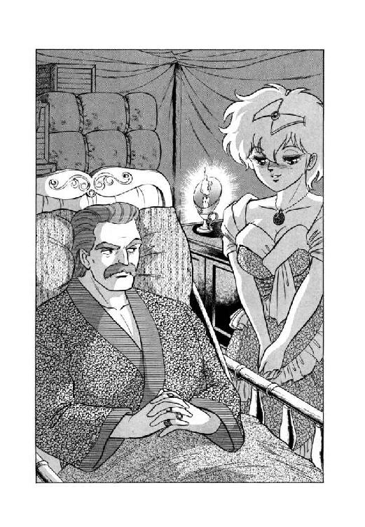
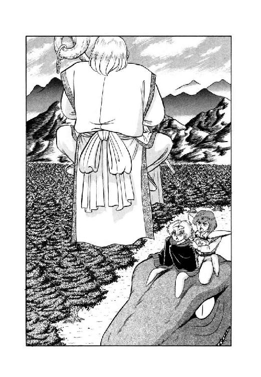
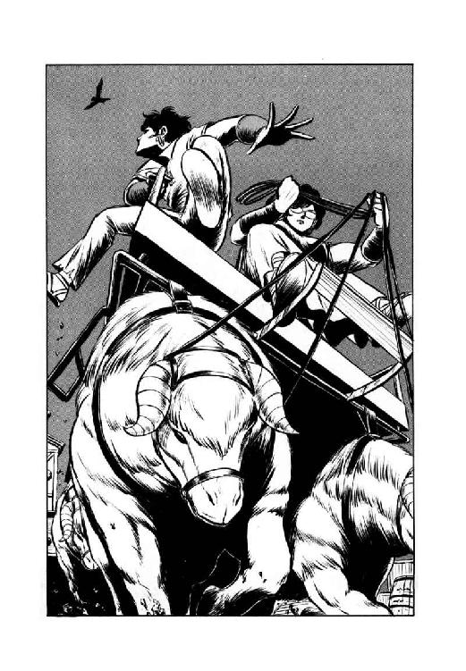

| 魔獣戦士ルナ・ヴァルガー＜９＞乱動 | |
| 秋津 透 | |
| (2015) | |
魔獣戦士ルナ・ヴァルガー
⑨乱動
秋津 透
本作品の全部または一部を無断で複製、転載、配信、送信したり、ホームページ上に転載することを禁止します。また、本作品の内容を無断で改変、改ざん等を行うことも禁止します。
本作品購入時にご承諾いただいた規約により、有償・無償にかかわらず本作品を第三者に譲渡することはできません。
本作品を示すサムネイルなどのイメージ画像は、再ダウンロード時に予告なく変更される場合があります。
本作品は縦書きでレイアウトされています。
また、ご覧になるリーディングシステムにより、表示の差が認められることがあります。
登場人物
ルナ・ド・リムズベル リムズベル公国の第二公女。魔獣と合体中。
魔獣ヴァルガー 伝説の大魔獣。無敵の威力を誇る。
ミル・ユード カルバドク侯爵家の嫡男卿。ルナの婚約者。
レイピア・ロナ ミル・ユードに忠誠を誓う女戦士。
ギルバート・エゼン 黄金飛行竜を召喚する魔道士。どっか一本ぬけている。
ジェニファー・ラゼル・ユード カルバドク侯爵夫人。ミル・ユードの義母。
ドン・ドレスデン ドレスデン陸上海賊艦隊司令官。チャフの現在の主人。
ファンキー・ボーン ギルバートとチャーランに復讐を誓う召喚術師。
チャフ 性悪の蝙蝠猫。陸上海賊ドン・ドレスデンの配下。
テック・ハラディ リドルの街に住む、奇妙なナイフ使い。
ヴェーダ・ピリス リドルの街で『斧剣亭』を経営する豪傑女医。
ノワール・ダンバス ダンバス帝国の新皇帝。通称、黒竜帝。
ザシャム 伝説の大魔道士、と思われる老人。
バト・ロビス ダンバス帝国の元部隊長。無謀戦士と通称される。
第一章 攻防！ 交易都市 ＶＳ 陸上海賊
１
「それじゃあ、いったい誰がその海賊の親玉を殺したかは、結局、全然わからないの？」
リムズベル公国の第二公女で、巨竜魔獣戦士のルナ・ド・リムズベルは、すぐ目の前に座っているカルバドク卿ミル・ユードに小声で訊ねた。リドル市からカルバドク侯爵家の一行と同道する事になった彼女は、現在、嫡男卿や側近護衛役と同じ大型牛羚羊車に乗っている。
しかし、彼と一緒に居られるからといって、単純に嬉しがってるわけにもいかない。目立つといけないので、ルナは牛羚羊車の奥の方で身を縮め、ミル・ユードとレイピアで彼女を外から隠すような状態になっている。話をするにしても、車外に通るような大きい声は出せない。囁くようなルナの問いに、カルバドク卿はやはり小声で答えた。
「そうなんだ。何しろ、大変に有力な容疑者がいるものだからね。世間の目がそちらに向いてしまって、真犯人の見当がまったくつかない。困った事態になったものだよ」
「へえ？ 有力な容疑者って、いったい誰なんです？」
ルナの足元で丸くなっている烏猫が、不審そうな調子で訊ねる。すると、青年は小さく首を振った。
「僕だよ。カルバドク卿ミル・ユードが、海賊侯の暗殺を命じたに違いない、とリドルではもっぱらの噂だ。おそらくこの噂は、遠からず帝国全域に広がるだろう」
「広がるだろうって、ミル、それって完全な冤罪じゃない！」
目いっぱい憤慨しまくった表情で、ルナが叫ぶ。もっとも、牛羚羊車の御者や衛士の注意を引かないように、声の方はかなりひそめている。
「あなたがそんな事やってないのは、あたしだってレイピアさんだって良く知ってるわ！ だいたいこっちだって、危うく暗殺されるところだったんだから！ 他人にちょっかい出してる余裕なんてないわよ！」
「しかし公女殿下、攻撃は最大の防御とも言います」
ルナのすぐ横に座っているレイピアが、興奮気味の公女とは対照的に冷静な声を出した。
「私は、我が君が狙われていると知った時点で、海賊侯を先に暗殺する事を、かなり本気で考えました。結局は、実行するだけの余力がなかったわけですが」
「まあ、確かに、疑われても仕方のないような状況には違いないんだ」
そう言って、ミル・ユードはわずかに肩をすくめる。他人事のような言い方ではあるが、その口調はかなり苦い。
「だいたい、敵対する諸侯が二人、同じ都市の中に泊まり合わせて、片方が暗殺未遂、もう片方が暗殺されたとなれば、誰だってその二つの事件には関係があると思うよ。一番単純に考えれば、互いが同時に相手を狙い、片方が失敗した、という状況だろう。で、なければ、襲われたのは僕の方が先だからね、相手がその気なら、と、急遽逆襲に転じたという見方もできる。さもなければ、未遂の方は偽装か。まあ、どう考えても、一番怪しいのは僕だな」
「だけど、どんなに怪しくても、本当はやってないんでしょう？」
小さく眉を寄せて、ルナが訊ねる。半分苦笑、半分軽く顔をしかめて、カルバドクの嫡男卿はうなずいた。
「そう。だけど、世間がこっちの主張を信じるかどうかは、はなはだ怪しいだろうな。しかも４ＷＤを襲った刺客は、屈強な護衛の海賊連中を、ほとんど抵抗もさせずに皆殺しにしたらしい。リドルの街の噂では、魔道の力でも借りない限り、こんな鮮やかな殺しはできないだろうと言われている。そうなるとやっぱり、魔道都市と交易をしているカルバドクが怪しい、という事になる」
「少なくとも当面は、冤罪をきせられるものと考えて、対策を講じた方が良さそうですね」
女戦士が、考え込むような感じの口調で呟く。
「いずれにしても問題なのは、海賊商人一族がどう出るかです。もし４ＷＤの暗殺が、一族内部の手によるものなら、真犯人は確実に、この機会を利用して動くでしょう。うまくいけば後継者争いで、海賊たちが分裂抗争、弱体化する事もありえます」
「しかしまずくいけば、海賊たちが一致団結して、４ＷＤの仇討ちに出て来るかも知れない。その場合、標的になるのは真犯人じゃなくて、こっちだぞ」
今度はミル・ユードが、小さく眉を寄せて呟いた。
「せめて真犯人の推察でもつけられれば、もう少し動きようがあるんだが。情報が、どうにも足りないよ」
「あの、もし良かったら、僕がそのへん、探ってみましょうか？」
わずかに頭を上げて、烏猫が訊ねる。
「僕の飛行力なら、リドルまではあっという間です。最新の情報を持ってこれますし、細かく指示も受けられますから......」
「いや、ロコ君の気持ちは有り難いが、それはまずい」
不意に厳しい表情になって、嫡男卿はきっぱりと首を振った。
「こっちは、海賊卿暗殺事件については潔白だけど、帝国の敵と親しく通じているという、遥かに危険な弱点があるんだ。この一件が明るみに出たら、海賊一族どころか、帝国がその全力を挙げてカルバドクを潰しにかかる。そんな危険を冒すわけにはいかないよ」
「はあ......」
何となく要領を得ない様子で、烏猫は小さく首を傾げる。するとルナが、青年に向かって沈んだ声で囁きかけた。
「御免なさい、あたしが南方にまでしゃしゃり出てきたばっかりに......」
「いや、気にしないでくれ。君が来てくれなければ、僕は今頃、死んでいた」
多少表情を和らげ、ミル・ユードが小さく首を振る。するとレイピアが、いささか口早に言葉を挟んだ。
「それはそうですけれど、今後は公女殿下には、充分行動に気をつけていただかなくてはならないでしょう。それに、我が君、殿下の事を誰にどの程度打ち明けるのか、今のうちに考えておいて下さらないと、カルバドクに着いてから大変な事になりますよ」
「そうだね」
謹厳な表情に戻って、嫡男卿はうなずいた。現在、カルバドクの人間でルナの存在を知っているのは、彼とレイピアを除けば、直属の衛士たちだけだ。それも、嫡男卿の婚約者の姫君と紹介されただけで、どこの姫君なのかは明かしていない。
しかしカルバドクに戻ったら、当然そうもいくまい、と彼は内心で苦笑混じりに呟く。彼女の事を見知っている異母弟もいるし、だいたい三馬鹿魔道士に口を塞いでいろというほうが無茶だ。やはり公にしないわけにはいかないが、さて、いったいどういう機会を摑んで、どう説明をするべきだろうか。
「まあ、何にせよ、カルバドクに着くまでは動きようがない。時間だけはたっぷりあるわけだから、とにかくじっくりと方策を練ろう」
ルナとレイピアの顔をほぼ等分に見やって、ミル・ユードは低い声で告げた。ルナはこっくりとうなずいたが、女戦士はやや不安そうに眉を寄せる。
「予定では、カルバドク到着まで七日あります。その期間、まったく動きようがないというのでは、完全に後手を引くことになりはしませんか？」
「やむを得ないな。現在の状態でうかつに動いたら、それこそ墓穴を掘ることになりかねないよ。とりあえず、可能な限り状況を調べながら、カルバドクを目指すことにしよう」
結局、父上と同行している以上は、絶対に無理な行動はできないんだ、と彼は言葉には出さずに呟いた。七日間の無為は確かに痛いが、諸勢力の動向を測らなければならない以上、むしろここで動かないこと自体は有効かもしれない。
「何にしても、正確な情報を素早く入手できるかどうかが鍵だな。ロコ君を使えないのは残念だが、偵察隊の連中に、せいぜい激励をしておこう」
そう言ってカルバドク嫡男卿ミル・ユードは、苦笑混じりに軽く肩をすくめる。しかし、他に選択の余地がなかったとは言え、彼の採った方針は、結果的にはかなり甘かった。
２
「なんと！ あの大総裁が死んだ、とは！」
ドレスデン陸上艦隊司令ドン・ペドロ・カルロス・ドレスデンは、めったな事では他人に驚いた表情を見せない。しかし、一族の大総裁、４ＷＤことワルス・ワルサー・ワルプルギス・ワーワルスキー・ドレスデンがリドル市で死んだという情報を、巨鳥召喚術師ファンキー・ボーンから知らされた時には、さすがの彼も焦茶色の目をくわっと大きく見開いた。
「それはいったいまた、どういう事情で？」
「私も、噂を聞いただけだからな。詳細はわからん」
髪も髭もぼうぼうに伸ばした瘠せた魔道士は、素っ気ない表情で首を振る。
「しかしとにかく、尋常な死に方ではなかったらしい。噂では、同行していた護衛たち共々、一人残らず全身ずたずたに切り裂かれていた、という話だ。これは多少、尾鰭がついた話だろうがな」
「うーむ......」
一体全体、何があったというのだ、と海賊司令は太い眉をぐいと寄せた。だいたい現在、大総裁４ＷＤの手元には、彼が使者に送った有翼猫チャフがそのまま居ついているはず。変事があったのなら、即座に彼女が報告に飛んで帰ってきそうなものだが。
「あれも消されたかな。自分では、不死身だとか言っていたが......」
まさか、当の本人が４ＷＤ殺害の下手人とは知らず、ドン・ドレスデンは言葉には出さずに呟いた。と、魔道士が面白くもなさそうに言葉を続ける。
「私が聞き込んだところ、どうやらこの暗殺は、カルバドクの仕業らしい。４ＷＤが殺された時、リドルにはカルバドク卿ミル・ユードが滞在しており、こちらの方も同じ日に、危うく暗殺されるところだったと称している。これを真に受けるなら、おそらく４ＷＤは逆襲を食らったのだろう」
「そうすると、下手人は魔道士か」
苦い表情になって、ドンは低く唸った。４ＷＤは、確かに策謀に長けた用心深い大総裁だったが、不合理な事が嫌いで、魔道の方面への対処が比較的弱かったのは否めない。魔道都市と直接交易をしているカルバドク侯爵家がその気になれば、彼を抹殺する能力のある魔道士の一人や二人は、簡単に用立てられるだろう。
そして、いくら懇意にしている魔道士がいるとは言え、カルバドク侯爵家の仕立てた魔道士暗殺団に襲われたら、彼自身も大総裁の二の舞になるのは、まず間違いない。だいたい、陸上交易商人カルバドクの直接の敵は、彼の率いる陸上艦隊ではないか。
「そこまで敵側が踏み切ったとあれば、もはや逡巡している余裕はないな。即刻、全面対決を挑まなくては、次に八つ裂きにされるのはこの私だ」
「そう言うだろうと思って、急いでこの情報を運んできたのだ」
にやりと笑うと、瘠せた魔道士は眼鏡の奥の瞳を狂気にも似た光で輝かせる。
「ドン・ペドロ。お主がカルバドクと事を構えるというなら、及ばずながらこのファンキー・ボーンが力になるぞ。何せ現在カルバドクには、我が宿敵ギルバート・エゼンとチャーラン・ポーランの二人が、雁首揃えているはずだからな。奴等に目にもの見せるためなら、私はもはや手段を選ばん！ カルバドク侯爵家もろとも、完膚なきまでに叩き潰してくれるわ！」
「君の好意は大変有り難いが、ミスター・ボーン」
興奮して声を張り上げる魔道士に、海賊司令はいささか懐疑的な目を向けた。
「しかし、先日の『グラウンドスラム』轟沈の一件では、君はその二人の魔道士に、見事にしてやられたのだろう？ おそらく今度も、二対一の負担付き戦闘になる事は避けられないぞ。それでも勝利するための作戦は、既に立っているのかね？」
「もちろんだ」
真剣そのものの表情になって、ファンキー・ボーンは大きくうなずく。
「私とて、伊達に五年間、怨念を抱えて荒野を走り回っていたわけではない。奴等が出てきたら、あーしてやろう、こーしてやろうと、いろいろと作戦は考えてあるし、そのための魔道具だって各種取り揃えてあるのだ。先日は不意の遭遇だったので、魔道具を使うことができなかったが、今度は用意万端すべて整えてある。負けん。絶対に負けん。負ける要素など何一つなーいっ！」
「ならば良いのだがね」
太い眉を寄せて、ドン・ドレスデンは小声で呟いた。土に浮く魔道具の船を使い、魔道士とある程度交流しているとはいっても、本来彼も南方の海賊出身である。魔道都市を訪れた事もなし、魔道に対する認識は、有効ではあるが理解不能、という範囲から出ていない。
それだけに、彼ほどの悪漢でも、南方における魔道の元締めという雰囲気のあるカルバドクに対しては、何が出て来るか予想できない恐怖感がある。そうでなければ、とっくの昔に本格的に抗争状態に入っていたに違いない。
「しかし、もはや四の五の言っている場合ではない。斃さなければ斃される」
彼の手持ちの戦力は、超巨大母船ガメラン号以下の陸上船が大小取り混ぜて十一隻、そして加えるに、はぐれ召喚術師のファンキー・ボーン。大型の陸上船には攻城用投石器が搭載されており、一つの都市を陥落させるには充分以上の戦力ではある。
「大総裁の弔い合戦という、またとない大義名分もある。今、私がカルバドクを急襲しても、非難する者はどこにも居るまい。もしかすると、これは得がたい好機かも知れん」
低く呟くと、海賊司令は机の上の呼び鈴を振った。すると、応接室の扉の外に待機している船内伝令が、即座に室内に入って来る。
「お呼びですか、大船長」
「うむ。大地の背骨山脈より北にいる陸上船全艦に、至急、ガラン峡谷に集結するよう指令を出せ。これは、すべてに優先する緊急召集だ」
ドンの命令を受け、船内伝令は広接室から出かかった。すると、不意にファンキー・ボーンが素っ気ない口調で伝令を止める。
「待て。その指令伝達任務、私が引き受けよう。私のビッグバードなら、疾風のごとく荒野を走って指令を伝えることができる」
「おおっ」
魔道士の申し出に、海賊司令は一瞬驚愕の表情になったが、すぐに満面に大きな笑みを浮かべた。
「それは有り難い、ミスター・ボーン。亡き大総裁の口癖ではないが、今こそ一刻が千金の価値を持つ時だからね。さっそく手配を行なおう」
「当然の事だ」
むさ苦しい姿の瘠せた魔道士は、奇妙な威厳を見せてうなずく。
「私とて、一刻も早くギルバートとチャーランを叩きのめしたいからな」
「うむうむ」
うなずき返しながら、ドンは配下の船長たちに宛てた命令書にペンを走らせる。普段は用を頼んでも、めったに思いどおりに動いてくれない傲岸不遜なファンキー・ボーンが、ここまで協力してくれるとは実に頼もしい。
「これでチャフが戻っていれば、機動力としてはほぼ万全なのだがな。まあ、戻っていない者は仕方があるまい。あくまで、使える戦力を使うまでの事だ」
言葉にせずに呟きながら、海賊司令はさらさらと命令書を書きあげた。こうしてドレスデン陸上艦隊は、完全に先手を取る形で、カルバドク攻略作戦に突入したのである。
３
「ミルよ。海賊侯が殺されたそうだな」
あと二日でカルバドクに着くという日の晩、ミル・ユードは父親のカルバドク侯ライル・ユードに呼ばれ、彼が寝ている天幕を訪れた。愛しい妻が待つ故郷の都市に近付いてきたという思いのせいだろうか、侯爵の表情には旅の疲れもさほど見えず、帝都やリドルにいた時より、よほど元気そうな様子をしている。
そして彼は、型通りの挨拶が済むが早いか、長男に向かってわずかに声を低めて、４ＷＤ暗殺の件について訊ねかけた。
「この際だ。率直に答えてくれ。お前が命じて殺らせたのか？」
「いいえ、残念ながら違います」
嫡男卿は、ごく謹厳な表情で答える。寝台に横たわった父侯爵は、軽く口元を歪めて更に訊ねた。
「残念ながらというのは、どういう意味だ？」
「僕が海賊侯暗殺に踏み切ったのなら、成功した時、失敗した時、それぞれどういう影響が出るか、そしてその対策はどうしたら良いか、充分に考慮を重ねてあるはずです。ところが実際には僕が仕掛けたわけじゃないから、対策なんて何も考えてない。正直なところ、面食らってますよ」
そう言って、青年は小さく苦笑する。
「そこへ持ってきて、父上が本気で疑うぐらい、僕が暗殺を命じたとしか見えない状況になっていますからね。用意も整っていないのに、いきなり事態の結果を押しつけられたようなものです。こんな事ならいっそ本当に暗殺を仕掛けていた方が、まだ始末が良かった。残念ながらと言ったのは、そういう意味です」
「なるほど。お前らしい言い方だな」
息子の顔を見やって、カルバドク侯は納得したような表情でうなずく。
「しかしそうなると、海賊侯を殺したのは、実際には誰なんだ？」
「さあ、現状では見当がつきませんね。各勢力の今後の動向を見て、推測するしかないでしょう」
我ながら具体性のない返事だ、と思ったが、嫡男卿は取りあえず正直な意見を述べた。父侯爵はもう一度軽くうなずき、そして不意に声の調子を変えて訊ねる。
「ところでミル、お前の連れているルナ姫と名乗る娘は、本物の猛将公女ルナ・ド・リムズベルなのか？ なんでも、婚約を交わしたと聞いたが？」
「ち、父上、どうしてそれを!?」
さすがに狼狽した表情になって、青年は父親の顔を見やった。カルバドク侯は息子を見返して、やや得意げににやりと笑う。
「お前は隠していたつもりかも知れんが、天知る、地知る、親が知る、女性関係で私を出し抜こうなんぞは十年早いわ」
「いや、別に、出し抜こうと思っていたわけじゃないんですけどね」
まったく父上には参ったなあ、とミル・ユードは軽く溜め息をついた。しかし、これで話がしやすくなったと言えば言えない事もない。
「ただ、彼女の関連では微妙な問題が多すぎるものですから、その懸念をどう整理するか方針を立ててからお話ししよう、と思っていたのです」
「そういうややこしい弁解をするところを見ると、お前のルナ姫は、やはりあの、猛将公女ルナだな？」
重ねて訊ねる父親に向かって、青年は少しばつが悪そうにうなずいた。すると、ライル・ユードは真剣な口調になって訊ねる。
「ミル、まさかとは思うが、お前、リムズベルと結んで、帝国を敵に回すつもりじゃないだろうな？」
「いえ、僕は帝国とリムズベルを和解させるつもりです」
こちらも真剣な表情になって、嫡男卿が答えた。その顔を見て、カルバドク侯は眉をぐいと寄せる。
「それは下手をすると、帝国を敵に回す以上に困難だぞ」
「わかっています」
断固とした声を出し、ミル・ユードは父親に向かってうなずいた。こいつは聞き分けがいいように見えて、いったん決意をすると凄まじく頑固だからな、と侯爵は内心溜め息をつく。しかし、この決断はカルバドクの存亡に関わる。彼が侯爵家の当主であるからには、息子の勝手にさせておくわけにはいかない。
「お前にその困難が本当にわかっているとは、私には思えん。だいたい、いったいどうしてそんな気を起こしたんだ？ ルナ公女のためか？」
「それもありますが、最大の理由は帝国のためです。リムズベルを、いえ、ルナ公女を本気で敵に回したら、帝国は生き残れません。もちろん、カルバドクも同じ事です」
そう言って青年は、半ばあっけにとられている父親を見据える。
「父上、信じられないとは思いますが、ルナ公女にはそれだけの力があるのです。もし、その力が破壊的な方向に発揮されたら、世界そのものの運命が狂ってしまうでしょう」
「......これは確かに、信じられんな」
理解を絶する、という表情で、カルバドク侯は呟いた。
「伝説の大魔道士ザシャムでもない限り、どんなに強力な魔道士でも、個人が国家に対抗できるはずがない。ましてや、世界そのものを変動させる力など、信じろと言う方が無茶だぞ。相手がお前でなければ、確実に正気を疑うところだ」
「そうでしょうね」
父親の言葉に、ミル・ユードは小さく苦笑してうなずく。
「実は、もっと正気を疑われるような事実があるんです。正直なところ、ルナ公女は普通の人間じゃない。彼女は伝説の魔獣、五万の帝国軍を追い払ったリムズベルの大怪獣の化身なんですよ」
「なるほど。で、お前はそれを承知の上で、ルナ公女と婚約したのか？」
ことさらに渋い表情をつくって、カルバドク侯が訊ねる。すると嫡男卿は、半ば開き直ったような、平然とした調子で返答した。
「もちろんです。僕にとっては、彼女以上の女性はいません」
「抜かしおったな、ぬけぬけと」
呟いて、侯爵は小さく苦笑する。
「とにかく、話の規模が大きすぎる。正直なところ私には、お前が信じ難い事実を語っているのか、とんでもない妄想に取り憑かれたのか、それとも好きな女と一緒になるために大法螺を吹いているのか、皆目見当がつかん。これはもう、カルバドクに戻ってジェニファーに判断して貰うより他になかろう」
「義母上にですか？」
ミル・ユードは、軽く眉を寄せた。確かに、父の後妻で現在のカルバドク侯爵夫人、ジェニファー・ラゼル・ユードが、少なくとも水準以上の知力と判断力の持ち主なのは、彼もよく承知している。しかし、父侯爵自身が見当がつかない問題について、代わって判断を任せられるほどの傑物かと言えば、嫡男卿としては首を傾げざるをえない。
「僕が言うのもおかしなものですが、この問題、義母上に判断がつくでしょうか？」
「大丈夫だ。これは私と彼女だけの秘密で、お前もヤンリーも知らない事だが、ジェニファーには事実を見抜く魔道能力がある。もっとも、そう簡単に使える能力ではないのだが、この場合には他に手段があるまい」
半分独言のような調子で呟くと、カルバドク侯はあらためて息子の顔を見やった。
「そういうわけで、ルナ公女に関する事、そして、カルバドクが帝国とリムズベルに対してどういう方針で臨むかは、ジェニファーの判断を待ってから考える。それまでは、絶対に外部に洩れないようにしなくてはなるまい。ミル、この事について知っているのは、私とお前の他に誰がいる？」
「ルナ公女の存在は僕の直属衛士に知れていますが、詳しい事情を知っているのはレイピアだけです」
嫡男卿の言葉に、侯爵は小さくうなずく。
「レイピア・ロナか。なるほど。彼女が万事心得ているのなら、一応は安心だな。少なくともこの隊列の外に、情報が洩れている事はあるまい」
「いえ、油断はできません。更に警戒を厳重にするよう、言っておきます」
僕の方にしてみりゃ、父上に洩れていただけで充分衝撃だ、とミル・ユードは言葉に出さずに呟いた。まったく、さすがは我が父と言うべきか、油断も隙もありゃしない。
「それでは、僕はこれで」
一礼して寝台の傍から去りかかった息子を、カルバドク侯はごく軽い調子で呼び止める。
「ミル、できれば、お前がそこまで惚れ込んだ公女殿下と、ゆっくり話をしてみたい。もし良かったら、明日の晩にでも会いたいと伝えて貰えるかね？」
「わかりました。伝えておきます」
振り返ってうなずくと、嫡男卿はそのまま父侯爵の天幕から出ていった。
４
「風が、いささか強いようだね」
超大型陸上母船ガメラン号の上甲板に立ったドン・ペドロ・カルロス・ドレスデンは、帆柱の先を見上げて小さく呟いた。
「操船を過って、崖に突っ込む陸上船が出なければいいが......」
「信号旗を上げて、注意を促しましょうか？」
傍に控えた護衛兼伝令の一人が、大船長の呟きを耳さとく聞きつけて訊ねる。しかし、ドンは腕を組んで軽く首を振った。
「いや、必要なかろう。いくらなんでも、ガラン峡谷を抜けようというのに、風の強さに注意を払わないほどの大馬鹿者が、我が陸上艦隊の船長にいるとは思えないからね」
ここは、多少無理にでも泰然と構えていなくてはならないところだ、と海賊司令は、今度は言葉に出さずに呟く。カルバドク攻略という、乾坤一擲の大勝負に踏み切った以上、ガラン峡谷を通過するぐらいの事で神経質にしてはいられない。
「艦隊、前進。楽隊は、音量を上げなさい」
「アイアイサー！」
大船長の命令が下り、巨大なガメラン号は、集結した七隻の陸上船を従えて、大地の背骨山脈を越えるべくガラン峡谷に進入する。同時に、今まで比較的つつましく演奏をしていたガメラン号専属音楽隊が、ここぞとばかりに音量を上げて、大船長の主題曲をがんがん鳴らしはじめた。調子はいいのだが何となくわざとらしい、軽快なようでいてどこか粘っこい、楽しげに見えて実は押しつけがましい、強いて言うならいかがわしい感じの曲が、峡谷の両側の崖に響きわたる。
「うむ、これでいい。この曲を聴けば、私が平常通り泰然としている事が、艦隊の全員にわかるだろう」
どーして主題曲を流すと、大船長が泰然としている事がわかるのか、それこそ良くわからないが、とにかく彼はにんまりと笑って呟いた。そして、このいかがわしい主題曲に乗って、一列に並んだ八隻の陸上船は、ゆっくりと峡谷の中を進んで行く。
と、そのとき、南側の崖の上空から、鳥にしては多少大きな黒い影が、ガメラン号に向かってかなりの速度で飛んできた。中央帆柱の上で、見張りが警戒の叫びを上げたが、楽隊の演奏が騒々しすぎて、声が上甲板まで届かない。その間に、黒い影は素早く巨船に接近し、帆をかすめて大船長の前に降りて来る。そして、着地直前に空中で回転すると、浅黒い肌の少女に姿を変えた。
「御主人様、チャフです！ ただいま、ただいま、たーだいま戻りましたーっ！ もーっ、とにかく南方は大変な騒ぎで、報告する事が山ほどありますっ！ あたしもずいぶん危険な目に遭いましたけど、そこはもう、知恵と度胸で切り抜けて、こうして御主人様の元に無事帰還することができたんですよーっ！ 本当にもう、あたしじゃなかったら絶対、絶対、ぜーったい切り抜けられないような局面だって、何度もあったんですからねーっ！」
「うーむ、なんだか良く聞こえないね。チャフよ、遠慮しないでこっちに来なさい」
太い眉を軽く寄せて、大船長は猫少女を身近に招き寄せる。別に、遠慮をしてるわけじゃないんだけどねーっ、と内心ぺろっと舌を出したが、猫少女は素直に御主人様に歩み寄り、すりすりすりと身体をすり寄せた。柔らかな感触に、大船長の頰がいささかだらしなく緩んだが、さすがに今はそんな事している場合ではない、と気がついたらしい。彼は、焦茶色の目で猫少女の紅の瞳を見据え、やや低くした声で訊ねた。
「チャフよ、お前は大総裁のところにいたのだろう？ いったい、大総裁は、どういう経過で殺されたのか、詳しい事を知っているかね？」
「はいっ、はいっ、はい、はい、はいっ、それはもう、もちろん知っていますっ！」
猫少女は、得意げに、にまっと笑ってうなずく。
「何しろあの老人は、あたしが殺したよーなもんですからっ」
「なに？」
ドン・ドレスデンの目が、瞬間、完全に点になる。
「お前が大総裁を殺した、だと？」
「ええ。本当のところを言いますと、殺そーとしたとたんにあの老人、勝手に脳卒中を起こしてぶっ倒れちゃったんですけど、とどめを刺したのは確かにあたし......うぐっ!?」
不意に、大船長の手が猫少女の口をぱっと塞いだ。そして彼は、油断のない目つきで周囲の護衛や船員たちを見回す。幸いというべきか、大船長の主題曲が凄まじい音量で演奏されており、彼らの耳にはチャフの言葉が届かなかったらしい。ドンは太い眉をぐいと寄せると、猫女の口を押さえたまま、一番近くにいる護衛に向かって怒鳴った。
「私は、チャフと一緒に船長室に降りるからね！ ついてくる必要はないが、何かあったら、すぐに船内伝令をよこすように！ いいねっ？」
「はあっ？」
立派な体格をした護衛は、顔をしかめて大声で訊ね返す。
「何ですかっ？ 大船長閣下？ 良く聞こえないんですがっ？」
「船長室に降りると言っているんだ！ お前たちは、上甲板に残って、何かあったら船内伝令で知らせなさい！」
護衛に向かって声を限りに喚くと、大船長はそのまま返事を待たずに、猫少女を半ば抱えるようにして、上甲板から船内に降りた。指示が聞こえたのか、それとも最初から気がつかなかったのか、とにかく護衛たちは彼についてこない。船内通路に人がいないのを見定めると、ドン・ドレスデンは猫少女の口から手を離し、厳しい表情で命じた。
「チャフよ、一緒に来なさい。船長室に入るまでは、誰とも、絶対に、一言も口をきいてはいけないよ」
「は............うくっ」
返事をしかかった言葉を危うく吞み込み、猫少女は無言でこくこくとうなずく。眉を寄せたまま軽くうなずき返して、大船長はゆっくりと歩きだした。同時に、はっきり声には出さないが、彼の厚めの唇が、わずかに呟くように動く。
「なんと、大総裁を殺したのが、他ならぬ我が手の者とは......まあ、殺してしまったものは仕方がないが、万が一でもこれが外部に洩れたりしたら、カルバドク攻略どころではない、即座に身の破滅だぞ......幸い、護衛たちの耳には入らなかったようだが、よほど用心しなくてはな......しかし逆に考えれば、これはカルバドクを攻略する、千載一遇の好機かも知れない。何しろ、連中には全面対決の覚悟も備えもない、という可能性が出てきたのだからな。大総裁暗殺の真相を隠し通すことさえできれば、カルバドクに汚名をきせて、一石二鳥の濡れ手で粟が狙えるじゃないか。うむ、ここは考えどころだぞ......」
とにかく、チャフから詳しい状況を聞こう、と海賊司令は横目で猫少女を見やった。そのうえで、最上の方策を考えなくてはならない。カルバドク攻略を続行するかどうかも、それこそその状況次第だろう。
一方その頃、南側の崖の上で姿勢を低くして、峡谷を登って行く陸上艦隊の陣容を窺っている一人の男がいた。魔法のサンダルで一日に五日旅程を踏破する、吟遊詩人のサンドゥ・ルーンである。
「いやー、こりゃまたえらい事になりよったな。どうやら陸上艦隊司令、本気でカルバドクに殴り込みをかける覚悟やで」
眼下をずりずりと進んで行く陸上船の数を確認すると、サンドゥは不敵な容貌に小さく苦笑を浮かべた。
「偶然行き合うただけやけど、これはさすがに見過ごしにもでけん。不偏不党の吟遊詩人の本分からは外れるけど、しゃあない、カルバドクに御注進や」
カルバドク侯爵家には何のかんの言って贔屓にして貰っているし、それに、楽曲を扱う者としては、あのいかがわしい『大船長の主題曲』をがんがん演奏するような陸上海賊に、間違っても肩入れしようとは思わない。彼は素早くマントを翻し、誰にも気づかれないままその場を後にした。
５
「えーと、あの、どーも、はじめまして。リムズベルの第二公女ルナです」
かなり畏まった口調で言うと、借り物のドレスを着こんだルナは、カルバドク侯ライル・ユードに向かって丁寧に頭を下げた。背中に台を当てて上体を起こした侯爵は、にっこりと笑って会釈を返す。
「はじめまして、公女殿下。腰を痛めているもので、このような姿で失礼致します」
「いえいえ、別に、お気になさらないで下さい」
ちょっと狼狽して、ルナはぷるぷるぷると首を振った。本来、楽天的で闊達で、あまり物怖じしない性格の彼女だが、相手が未来の義父になるかも知れないと思うと、やっぱり相当に緊張してしまう。
と、侯爵が彼女の傍の息子に目をやり、ごく軽い調子で告げた。
「それではミル、済まんが、お前はさがってくれ」
「なぜです、父上？」
ぐっと眉を寄せて、嫡男卿が訊ねる。するとカルバドク侯は、澄ました表情で答えた。
「なぜと訊かれても困るが、私は公女殿下と話がしたいんだ。お前が横にいては、くつろいだ話ができんじゃないか。それとも何か、殿下の脇にくっついていなくては不安な事情でもあるのかね？」
「そんな事情はありませんが......」
いささかむっとした口調で父親に抗弁しかかった青年の腕を、ルナが軽く押さえる。そしてわずかに振り返って、こちらを向いた彼の視線を受け止め、彼女は生真面目な表情で小さく首を振った。
恋人の制止を受けた嫡男卿は、一瞬、やや口惜しげに眉を寄せたが、すぐに小さく笑ってうなずき返す。それから彼は、父侯爵に向かって軽く頭を下げると、そのままあっさりと天幕から出て行った。その背を見送って、カルバドク侯がいささか不審そうに呟く。
「あやつ、ずいぶんおとなしく引き下がったな。少なくとも、皮肉の一つぐらい言って行くかと思ったが」
「御不満ですか、カルバドク侯？」
あまり彼女らしくない硬い口調で、ルナが訊ねた。
「あたしはお二人に喧嘩なんかしてほしくなかったから、彼を制止したんですけど」
「いや、別に不満というわけではありません。ただ、少し驚いただけですよ」
そう言って、ライル・ユードは小さく苦笑する。
「我が息子ながら、カルバドク卿は見かけによらず強情な男でね。親の意見など、めったに聞いた事がない。それが、公女殿下の一瞥であっさり引き下がったものだから、私はいささかあっけにとられているのです。殿下は私の息子の心を、実に強力に摑んでいるらしい」
「彼は、あたしを信頼してくれていますから」
聞きようによってはかなりぬけぬけとした口調で、ルナが答えた。彼が退出してしまったためか、かえって開き直り気味に度胸が出ている。カルバドク侯は軽くうなずくと、不意に真面目な表情になって彼女に訊ねかけた。
「公女殿下、息子の話では、あなたは世界の運命さえを変え得る力量の持ち主だそうですな。なんでも、伝説の魔獣の化身とか聞きましたが、いったい、それは事実なのですか？ いや、答えていただかなくて結構です。事実であろうとなかろうと、あなたが息子の話を否定するわけがない。そうでしょう？」
「御明察です、カルバドク侯」
小さく苦笑して、ルナがうなずく。
「そして、信用していただけないのを承知で言わせて貰えば、彼の話はすべて事実です。あたしは本当に魔獣の化身で、その気になれば、世界の運命を破滅に持っていく事もできます。もっとも、そんな事、絶対にやりたくないですけど」
「なるほど。確かに、簡単には信じられない話ですな」
そう言って、侯爵は彼女に向かって苦笑を返した。
「もっとも、その話が事実かどうかは、カルバドクに到着してから、妻の魔道能力を使って判断する予定です。息子から、聞いていると思いますが」
「はい」
ルナが再びうなずくと、カルバドク侯は穏やかな表情で言葉を続ける。
「公女殿下、息子は一見すると冷静な男に見えるかも知れませんが、実はかなり情熱的な理想家の面があります。そうでなければ、帝国と北方を自力で和解させるなどという、夢のような発想が出るわけがありません。そして私は、一面でそういう発想のできる息子を誇っていますが、同時に大変に危惧しています。大きな発想は、具体的に実現できなければ、単なる妄想になってしまいますからね。まあ、理想や夢というものは、本来そういう危険性をはらんでいるものですが」
「はあ......」
相手が何を言うつもりなのか図りかねて、ルナは紺色の目を軽く瞬いた。侯爵は構わず、更に淡々と話を続ける。

「私は、公女殿下に会って、何となく理解できたような気がします。交易商の仕事をしながらも、息子は常に何かを捜しているようでした。そしておそらくは、あなたこそが息子が捜していた夢そのものなのでしょう。これは私の勘ですが、妻が殿下の事をどう判断しようと、息子の想いをとどめる事はできますまい。そうすると、私が父親としてできる事は、息子の夢が無惨な悪夢や実体のない白昼夢でないように、祈る事ぐらいしかないのです。公女殿下、あなたが、息子に運んでくる夢は、いったいどんな内容なのですか？」
「正直に言います。あたしの夢は、一つ間違えれば、とんでもない悪夢になるでしょう。でもそれは、彼も承知しています」
決然とした口調で、ルナは侯爵に向かって答えた。
「それを承知した上で、彼はあたしと関わりあう決意をしてくれたんです。そして現在までのところ、彼の尽力で、あたしの夢が悪夢にならずに済んでいる、と言ってもいいでしょう。あなたは大仰と思うかも知れませんけど、あなたの息子さんが情熱的な理想家だからこそ、南方も北方もひっくるめた世界全部が、魔獣の悪夢に放り込まれないで済んでるんですよ」
「公女殿下、あなたが虚言を吐いているとは思いませんが、しかし、素直に信じるには話の規模が大きすぎますな」
溜め息混じりに呟いて、カルバドク侯は小さく首を振る。
「私は結局、目先の利にとらわれる交易商人です。ここまで話の規模が広がってしまっては、正直なところ、判断ができない。やはり、妻に任せた方が良いようです」
「わかりました」
うなずいたルナに向かって、ライル・ユードは一転して好意的な口調で告げた。
「それにしても、公女殿下、あなたは実に率直な女性ですな。それに、息子を本心から好いて下さっているようだ。これは、私にもわかりますよ」
「はあ、どうも......」
思わず照れた表情になって、彼女は頰を赤らめて下を向く。なるほど、可憐だな、とカルバドク侯は口元に微笑をうかべた。息子が惚れるのも、無理はない。
６
「本当に、大丈夫だね？ お前が大総裁を殺したという事実は、絶対に、誰にも知られてはいないね？」
ガメラン号船長寝室に置かれた豪華で巨大な天蓋付き寝台に、裸で横になった大船長ドン・ペドロ・カルロス・ドレスデンは、傍に寝そべっている猫少女の紅の瞳を、真剣そのものの表情で見据えて訊ねた。御主人様、ちょっとしつっこいですよーっ、と内心呟きながらも、猫少女は大きくうなずいて答える。
「はいっ、はい、はい、はい、はいっ！ 大丈夫、大丈夫、もう、ぜーったい完璧に保証付きで大丈夫ですっ！ だいたいあたしは４ＷＤに処刑されて死んでる事になってるんですから、それが逆に４ＷＤを殺すなんて、だーれも思いっこないですよっ！ 甦ったあたしと出くわした護衛連中は、一人残らずみーんな殺しちゃったし、もー、絶対、絶対、百パーセント間違いなく、あたしが犯人だって知ってる奴は、生きてる人間の内には一人もありませんっ！ もーちろん御主人様以外には、事の真相なんて誰にも喋っちゃいませんしねっ。こー見えてもあたし、喋っていい事と悪い事ぐらいは、ちゃーんと、ちゃーんと、ちゃーんと分別してるんですから御安心下さいっ！」
「うむ、ならば良いのだがね」
とにかく、ここが肝心な箇所なのだよ、と大船長は寝台の天蓋を見上げて小さく呟く。真相を知るものが誰もいなければ、大総裁を殺したのが彼の部下だと推理される心配はまずない。何しろ陸上艦隊司令ドン・ドレスデンは、４ＷＤを暗殺したところで、まったく何の利益も得られない立場にいるのである。海賊商人一族の論理からすれば、これだけで、彼は容疑者の一覧表から外されているに等しい。
「ドレスデン一族にとって、しょせん陸上艦隊などは異端中の異端にすぎないからね。私がいかなる功績を立て、巨大な実力を蓄えようと、陸上海賊である以上、大総裁の地位に就く可能性は皆無だろう。この状況は、４ＷＤが死んだところで変わりはしない。しかし現状では、転じて利点となったようだね」
声には出さずに呟いて、大船長はくくっと小さく笑った。もしも、彼が大総裁になれる立場にいたら、十中八九、４ＷＤ暗殺の黒幕として告発されていただろう。もっとも、そうなったら彼は可能な限り巧妙に立ち回って、本気で大総裁の地位を狙うだろうし、だいたい彼が大総裁の地位を狙うような立場の人間だったら、４ＷＤが彼の部下を自分の手元で使うような真似をするはずがない。
「いずれにせよ、目撃者も証拠もないのなら、こちらから明かさない限り事の真相を見抜ける者はいないだろう。私は何も聞かなかった事にして、予定通り大総裁の仇討ちをすれば良い。カルバドクの連中が冤罪だと叫んだところで、誰も信用しないだろうからね」
うむ、完璧だ、まったく何の問題もない、と大船長は口の中で呟いた。しかし、それはあくまで４ＷＤ殺しの真相が、絶対に外部に洩れていないという仮定を前提条件にしている。そして、この条件が成立するかどうかは、確かに有能ではあるが、目いっぱい口が軽く気まぐれな有翼猫にかかっているのだ。彼は思わず、念を押すような口調で傍の猫少女に訊ねる。
「本当に、大丈夫だね？ お前が大総裁を殺したという事実は、絶対に、誰にも知られてはいないね？」
「あのー、御主人様。先刻からずーっと、ずーっと、ずーっと、その質問の繰り返しなんですけど」
あまりにしつこい大船長に向かって、チャフがさすがにいささかうんざりしたような口調で訊ね返す。
「御主人様は、そこまであたしを信用できないんですかあ？」
「当然だよ。海賊商人一族の者は、誰の事も信用しないのだからね」
そう言って、大船長は厚めの唇を歪めて苦笑する。
「しかし、返答の知れている質問を繰り返すのも、さすがに馬鹿ばかしくなってきたね。今夜は、もう寝るとしよう」
「はーい、はいはい、はーい 」
」
甘えた声を出す猫少女を、大船長は太い腕で抱き寄せた。彼女は、柔らかくしなやかな身体を御主人様の分厚い胸にすりすりとすり寄せ、ざらついた猫舌で顎のあたりを軽く舐める。
「うーむ......」
海賊司令は焦茶色の目を細め、心地よさそうに低く唸った。猫少女は身体をずらしながら、相手の胸元から案外引き締まった腹部の周辺を、ちろちろと舌で愛撫してゆく。彼女は、職業的遊女を務めた事はないが、御主人様に御奉仕するのは有翼猫の天性の一つ、その舌遣いはまさに絶妙としか言いようがない。
「うむ、良いねえ......」
再び大船長が、気持ちの良さそうな唸り声を上げる。猫少女は男性の腰に顔を寄せ、肝心の場所に軽く接吻をした。そして、舌と唇を駆使して、心を込めて御奉仕を続ける。すると大船長が、文字通りの猫なで声を出した。
「そのぐらいで良かろう、おいで」
「はーい、はいはい、はーい」
チャフは、男性の身体に縋りつくような姿勢で、ぴったりと全身をすり寄せる。そして、両脚を心もち開き、相手の股間に片手を伸ばすと、ゆっくりと自分の体内に導く。その間大船長の方は、ちょっと意外なくらい、徹底的に何もしない。満足そうな表情で、完全に猫少女の奉仕するがままに任せている。
「うむ、うむ、良いぞ」
「あ、あん あ、あ、御主人様あ」
自分で腰を動かしながら、チャフは甘い喘ぎ声を出して御主人様にしがみつく。彼女の尻尾が、ぴこんと空中に跳ね上がった。
「あ、ああん 御主人様、御主人様あ」
「うむ、うむ、お前は可愛いなあ」
案外しみじみとした声を出して、大船長は猫少女の身体を優しく抱く。
「何といっても、私に奉仕する事を、いつも第一に思っているのが良いね。なにしろ人間という生物は、可愛い有翼猫と違って、仕事のできる奴ほど自分の思惑を優先するからな。私は自分の思惑を通すのは好きだが、他人の思惑を通すのは嫌いでねえ」
「ああん あ、ああ、御主人様、御主人様、御主人様あっ」
とぎれとぎれに切なげな声を上げると、猫少女は相手の腕の中で、しなやかな身体をきゅうっと反らせた。その動きに合わせて、大船長もぐっと腰を深く突きこむ。
「む......」
「みにゃーっ！ みーっ」
最後は猫の鳴き声で甲高く叫ぶと、チャフはそのまま男性の胸にくたっと寄りかかって、全身の力を抜いた。すると、その耳元で大船長が穏やかに囁く。
「うむ、良かったよ、チャフ」
「うふ」
ルナあたりが見たら、これがあの性悪猫なのかしらんと驚愕しそうな表情で、猫少女は嬉しそうに微笑した。と、大船長がゆっくりと、しかしやや改まった調子で言葉を続ける。
「ところで、チャフよ。改めて訊ねるが、本当に、大丈夫だね？ お前が大総裁を殺したという事実は、絶対に、誰にも知られてはいないね？」
「ふにゃあ......」
このしつこさには、さすがにもう閉口という表情で、チャフは小さくうなずいた。房事の方でしつこいんなら、御奉仕のし甲斐もあるんだけど、と彼女は口の中でもぞもぞと呟く。念押しがいくらしつこくても、あんまり嬉しくないのよねーっ、まったく。
７
「奥方様。侯爵様が、嫡男卿ともどもお帰りになりました」
待ちに待った報告を受けて、カルバドク侯爵夫人ジェニファー・ラゼル・ユードは、さすがにほーっと安堵の溜め息を吐いた。ここ数年、実質上侯爵家を取りしきっている彼女ではあるが、夫のいない状態で矢面に立って釆配を振るうとなると、やはり格別の緊張と疲労を強いられる。
しかも現在は、帝国が北方に遠征軍を出し、戦況が思うに任せない状態の中で皇帝が崩御するという、極めて微妙で重要な時期だ。帝国の有力諸侯とは言え、北方との交易で家業を支えているカルバドクとしては、わずかな状況の変化にも、細心の注意をもって対応しなくてはならない。
「その重大性は、侯爵も嫡男卿も理解していると思うんですけどね......」
従者たちに出迎えの用意を命じながら、侯爵夫人は内心で、今度は安堵とは違う意味の溜め息を吐く。夫が不意に無茶な行動をとろうとするのは、身体の自由がきかなくなって以来珍しい事ではないが、今まで彼女と一緒に侯爵を制御していた嫡男卿の方が、どうも最近様子が変なのである。
遠征軍と前後して北方に出かけたのは、商売の機会を摑むためということで是としても、南方に送る隊商を代理人に任せて、そのままろくすっぽ連絡もよこさない。そして、皇帝崩御の急報を異母弟に持たせ、半ば強引に連れ戻してみれば、何の思惑か奇妙な魔道士を三人も連れてきた。平常でも、南方では魔道士を奇異な目で見るのが普通であり、ましてや、今は仮にも北方と南方は交戦中なのである。嫡男卿が帝国に侯爵を連れ戻しに行ってしまった後、彼女はこの三人の魔道士が一般人の目に触れないようにするため、かなりの苦労を強いられる羽目になった。
そこへ持ってきて、リドルでの海賊侯の変死である。油断のならない強敵だった海賊侯が死んでくれたのは良いのだが、問題は、その死がカルバドクによる暗殺らしいという風聞が流れている事だ。いや、風聞なんていう生易しい話ではない。既に帝国 圏においては、海賊侯を亡き者にしたのはカルバドク卿ミル・ユードであるという評価が、ほとんど確定してしまっている。
「海賊侯を暗殺する事自体は、絶対に悪いとは思いませんけどね。でも、留守番役の私に事前に連絡がなかった事から考えると、熟慮した結果の行動とは、ちょっと思えないし。確かにとっさの決断で好機をつかむという事はありますけど、いったいどの程度、その後の事態を見通した上で決行したのかが、大問題じゃないかしら」
やれやれ、嫡男卿はいったい何を考えているのやら、と侯爵夫人は声には出さずに呟いた。夫の信頼を受け、押しも押されぬレディ・カルバドクとしてふるまっているように見える彼女も、本来は北方出身で門地を持たない事もあり、嫡男卿ミル・ユードに対しては立場が弱い。今までは、彼女も彼もそれぞれ聡明で、しかも相互の立場を尊重してきたので、特に問題も起きなかったのだが、客観的に見れば、相続争いで大混乱になってもおかしくない状況である。それがわかっているだけに、彼女からすれば、嫡男卿の行動が不審でも、正面きって咎め立てがしにくい。
「まあ、とにかく嫡男卿がカルバドクに戻ってきた以上、父親に立ち会って貰って、間違いのない事情を聞いてみましょう。このへんで彼の思惑をはっきりさせておかないと、下手をするとカルバドク全体の命運に関わりますものね」
私の魔道能力が使えれば手っ取り早いけれど、と彼女は小さく苦笑する。でも、まさか、あの能力を義理の息子相手に使うわけにも行かないし。ここはきちんと、正攻法で問いただしてみましょう。
しっかりと方針を決めた侯爵夫人は、確固とした足取りで、夫と義理の息子を迎えに出た。しかし事態は、彼女の予想もしていなかった方向へと変化していたのである。
「おお、ジェニファー、心配をかけて済まなかったな」
牛羚羊車から寝興で出てきたカルバドク侯は、屋敷の内門の外まで迎えに来た妻の顔を見るが早いか、結構元気そうな口調で声をかけた。一時は危篤と聞いていただけに、彼女も安堵の笑顔を見せる。
「おかえりなさいませ、侯爵様。御無事で何よりでしたわ。それに、嫡男卿も」
「義母上、実は、急いで御相談しなくてはならない問題があるのです」
寝輿の傍に付き添っている嫡男卿が、真剣な表情で彼女を見据えると、やや声を低くして告げた。
「このまま父上を奥に運ばせますから、義母上も一緒に来て下さい」
「そんな、急に言われても困ります。侯爵様と嫡男卿が戻られたので、お目にかかりたいという方も何人かみえていますし......」
尋常ならぬ青年の様子に、侯爵夫人は軽く眉を寄せて抗弁する。すると侯爵が、苦笑混じりに首を振った。
「今日のところは、気分が優れないという事で、客は断わってくれないか。私は嫡男卿と一緒に、奥の寝室に直行する。一段落つき次第、お前も来てくれ。いいな？」
「わかりました」
多少、釈然としない表情ではあったが、侯爵夫人は夫と義理の息子に向かって小さくうなずく。嫡男卿は素早くうなずき返すと、寝輿を担いでいる衛士たちを促して、さっさと邸内に入って行った。彼女は一瞬、あっけにとられたように寝輿を見送ったが、すぐに続いて邸内に戻る。訪問客に引き取ってもらい、従者や侍女に改めて指示を与えなくてはならない。
それから間もなく、侯爵夫人はかなり強引に事態に一段落をつけて、奥の寝室に向かった。カルバドク侯邸は、リドル侯邸などと同じく、南方の都市ではごく普通の豪商の屋敷で、とびぬけて規模が大きいというわけでもない。
「ただいま参りました。ジェニファーです」
「うむ、待っていたよ」
夫の声に応じて扉を開けた侯爵夫人は、また軽く眉を寄せた。寝台に夫が横になっていて、傍に嫡男卿がいるのはいいけれど、そのまた横に、若い娘が一人立っている。一瞬、嫡男卿の腹心の女戦士かと思ったが、良く見れば髪がくすんだ金色で、しかも短い。まったくの、未知の人物だ。
「あら？ こちらの方は？」
「この女性は、リムズベルの第二公女ルナ。僕の婚約者です」
嫡男卿が、これ以上ないというほどきっぱりとした口調で告げる。ジェニファーは、思わず鳶色の目を丸くして叫んだ。
「リムズベルのルナ公女って、あの、帝国軍五万の兵を一人で撃退した、怪獣遣いの猛将公女ルナ殿下御本人!?」
「はい、そうなんです。どーも、はじめまして」
ちょっと照れたような表情で、ルナがぺこりと頭を下げる。半ば反射的に、侯爵夫人も会釈を返したが、即座にきゅっと眉を寄せると、夫と嫡男卿と公女殿下を、鋭い視線で等分に見据えた。
「だけど、どうして、いつの間に、リムズベルの公女殿下とカルバドクの嫡男卿が、婚約者という事になったのかしら？ わかっているとは思いますけど、これは、カルバドクの存亡に関わる問題ですよ。もし本気で、北方と結んで、帝国に反旗をひるがえすというなら......」
「いや、どうやらそういう規模の問題ではないらしい」
いささか興奮気味の妻に向かって、カルバドク侯が穏やかに告げる。
「私も一応、この二人から事情は聞いたのだが、正直なところ判断がつきかねている。なにしろ、一つ間違えると世界そのものが崩壊する、という状況なのだそうだからな」
「世界そのものが崩壊する、ですって？」
さすがにあっけにとられた声を出して、侯爵夫人は他の三人を見回した。
「それは何かの比喩なのですか？ それとも......」
「比喩などではありません。言葉通り、そのままの意味です」
謹厳そのものの表情で嫡男卿がきっぱりと答え、傍の公女殿下も、少し恥ずかしげに小さくうなずく。
「そうなんです。信じられないとは思いますけど、あたしが軽率な真似すると、世界そのものが壊れちゃうんです。なぜかって言うと、えーと実はあたし、伝説の魔獣ヴァルガーと合体してまして......」
「いやいや、いくら説明してもらっても、信じられん事に変わりはない」
ルナの言葉をやや強引にさえぎると、カルバドク侯は、半ば呆然としている妻の方に目を向ける。
「かと言って、我が息子と公女殿下が、二人揃って妄想にとらわれているとも思えんしな。そこで、ジェニファー、お前の魔道能力で事態の真相を見抜いて貰いたい」
「ええっ!?」
侯爵夫人の鳶色の目が、またも真円に見開かれた。
「わ、私の能力を使えとおっしゃるんですか!?」
「ここで針路を誤れば、少なくともカルバドクには前途がない。もしかすると、世界全体の未来がなくなるかも知れん」
息子同様に謹厳な表情で、カルバドク侯は重々しく告げる。
「ためらっている場合ではない。やってくれ」
「わかりました。あなたがそこまで決意していらっしゃるなら、微力ながらお役に立たせていただきます」
侯爵夫人は、きっぱりとした表情でうなずいた。その、あまりに仰々しい雰囲気に、嫡男卿がいささか懸念するような声で訊ねる。
「あの、父上。もしかすると義母上の魔道能力というのは、発動のため、何か危険な状況を必要とする能力なのではありませんか？」
「いや、危険などは全くない」
カルバドク侯は眉をぐっと寄せ、やや早口になって言い放つ。
「ただ、裸になって抱き合わねばならんだけだ」
「はあっ!?」
嫡男卿と公女殿下のあっけにとられたような声が、期せずしてきれいに唱和した。
８
「私の魔道能力は、他人の精神を読む力、読心力です。相手が現在考えている事以外にも、過去にどういう経験をして、その時何を考えていたかまで、かなり詳しく読むことができます。もちろん、私が読み取る気になればですけれど」
まるで学者が講義をするような口調で、カルバドク侯爵夫人ジェニファー・ラゼル・ユードは、義理の息子とその恋人に向かって、自分の魔道能力について説明する。
「ただし、読心力を発揮するためには、私と相手が直接肌を接していなくてはなりません。たとえ紙一枚でも、肌と肌の問に障害物があったら、この能力は発揮されないのです。しかも、手を握るとか唇が触れる程度の接触では何の効果もなく、少なくとも全身の皮膚の四分の一ぐらいは、相手に密着させなくてはなりません」
「そのため、裸になって抱き合わなくてはならないわけですか」
目いっぱい憮然とした声で、嫡男卿が唸った。
「参ったなあ。義母上の魔道能力が、まさかこういう代物とは知らなかった」
「知られていてたまるか」
カルバドク侯が、これまた息子に負けず劣らずの憮然とした表情で呟く。
「少なくとも私の妻になってからは、彼女はこの能力を、一度たりとも使った事はないはずなんだからな」
「ええ、そうですよ」
そう言って、侯爵夫人はくすっと小さく笑う。
「人の妻になった以上は、そうそう気安く他人と肌を接するわけにはいきませんもの」
「そりゃまあ、そうでしょうね」
妙に納得した表情で、ルナがうむうむとうなずく。すると侯爵夫人は、彼女の方をちらりと見やり、一転して厳しい声を出した。
「ですけれど、現在は非常の時。しかも我が夫、カルバドク侯の頼みです。私は敢えて、自分の魔道能力を使いましょう。しかし、私が生まれ育った魔道都市の『戒律』には、読心力という能力は、読まれる側が拒否した場合、強制使用してはならないと定められています。私は魔道士ではないけれど、魔道能力を使う以上、『戒律』を破る事はしたくありません」
きっぱり言い切ると、ジェニファー・ラゼル・ユードは、今度は真っ正面からルナの方を見据えて訊ねる。
「公女殿下、お訊ねします。貴女の現在と過去の思考を、私の能力の及ぶ範囲で、読ませていただく事をお許し願えるでしょうか？」
「と、いうことは、あの、もしかして、あたしが、あの、その、服を脱いで、ジェニファーさんと抱き合う事になるわけですか？」
さすがにかなり狼狽気味に、ルナはもしかしたら未来の義母になるかも知れない女性に訊ね返した。確かに彼女も、他人と裸で抱き合ったりした事がないとは言わないが、これは縞兎娘相手に戯れるのとは、まったく根本的に状況が違う。それに、裸になるとなれば、当然ながら魔獣の尻尾も相手に見せる事になる。これは彼女にとって、ある意味では裸体を晒す以上に辛い。それに加えて、他人にありのままの精神を読まれるというのは、やっぱりいざとなってみれば、避けられるものなら避けたい気がする。
「まいっちゃったなあ......」
ルナは半ば無意識に救援を求めるような目つきで恋人の方を見やった。すると彼は、穏やかな口調で侯爵夫人に提案する。
「義母上、ルナ公女は僕が伴侶と決めた女性ですが、義母上とは初対面の他人です。その他人に精神を読まれるとあっては、公女がためらうのも当然でしょう。しかし、僕は義母上は義理の仲とは言え母子です。僕には今更、義母上に知られて困るような秘密もありませんし、精神を読む相手としては、僕の方がルナ公女より遥かに妥当ではないでしょうか？」
「そ、それは......」
嫡男卿の提案に、今まで冷たく見えるほど落ち着き払っていた侯爵夫人が、不意に動揺して夫の方を見やった。侯爵も眉を寄せ、困惑した表情でううむと低く唸る。と、そのとたん、まるで突撃命令を出すような、気負った声でルナが叫んだ。
「や、やっぱり、あたしがやります！ あたしの精神を、読んで下さい！」
考えてみれば、彼女がこの試練を逃れようとしたら、必然的に御鉢は恋人に回る事になる。だが、いくら義母上だからって、いや、義母上だからこそ、あんな美人とミルが裸で抱き合うなんて、想像しただけで彼女の理性のたがが外れ、魔獣変身しかねない。こーなったら、身体張ってでも阻止しなくちゃ、とルナはきっと侯爵夫人を見据えた。
「とにかく、あたし自身の精神を読んで貰わなくちゃ、魔獣戦士がどれだけ驚異的な存在か、絶対にわからないと思います。喜んで、というわけじゃ絶対にないですけど、他に手段はないでしょう」
そう言って、ルナは恋人の方を見やり、にこっと小さく笑った。
「せっかくかばって貰ったのに、勝手な事言ってごめんなさい。でも、やっぱりこれは、あたしの試練だわ。あなたに代わって貰うわけには、いかないの」
「......無理は、するなよ。僕も経験があるわけじゃないが、精神を読まれると言うのは尋常事じゃないぞ」
心配そうな表情で、嫡男卿が囁く。するとそこへ侯爵夫人が、また気が変わられては大変、という口調で声をかける。
「それでは公女殿下、こちらへどうぞ」
侯爵夫人が先に立って扉を開き、決然とした表情のルナが続いて部屋を出る。その背を見送って、嫡男卿は小さく溜め息をついた。
「本当に、大丈夫かなあ。面倒な事にならなきゃいいんだが......」
「心配なのはわかるが、それほど案じる事もあるまい」
ぎゅっと眉を寄せている息子に向かって、カルバドク侯は意図的に軽い調子で告げる。
「実は私自身も、結婚以前にジェニファーに手を出して、精神を読まれた事がある。だが、不快感も悪影響もなかったし、彼女から事前に打ち明けられていなければ、精神を読まれているという事自体、まったく気がつかなかっただろう。その経験から考える限り、少なくとも公女殿下には何の危険もないはずだ」
「はあ......」
父上と彼女じゃ全然違うんだ、と彼は内心呟いた。人間態 の彼女は、他ならぬ魔道都市の最高評議長ファラ・ミルドレッドに、これ以上魔術を重ねてかけたらどうなるかわからない、と言わせた存在なのである。その精神を魔道能力で読もうというのは、彼から見れば無謀以外の何物でもない。
しかしミル・ユードは、その懸念をあえて口に出そうとはしなかった。彼女自身がいみじくも言った通り、ルナ・ド・リムズベルが常人とどのくらい違うのか、その桁外れの水準を、速やかに、しかも魔獣変身することなく理解させるためには、精神を読ませるぐらいしか方法がない。そして代案がない以上、懸念を表明したところで、いたずらに父親を不安がらせるだけの結果になる。
「面倒な事にならなきゃいいんだが......」
今度は言葉に出さずに、嫡男卿は再度呟いた。だが、その沈痛な表情に、カルバドク侯が多少不審そうなまなざしを向ける。
一方、侯爵夫人とルナは、部屋から出るが早いか、近くにある別の部屋に入った。どうやらそこが彼女の寝室らしく、侯爵の寝室と良く似た構造ではあるが、調度類に女性らしい雰囲気が濃厚に感じられる。侯爵夫人は、室内の整理をしていた若い侍女に目を留め、穏やかな口調で命じた。
「急に寝室を使う用事ができたので、整理は後にしてください。この用事は重要なものですから、私が扉を開けない限り、絶対に室内に入って来てはいけませんよ。そして、誰か他の者が入ろうとしたら、私が禁じたと言って止めなさい。たとえ侯爵様や嫡男卿が来られても、とにかく必ず止めるのですよ」
「はい、奥方様」
素直にうなずいて侍女が寝室を出ると、侯爵夫人は扉の錠を下ろし、そしてさっさと衣服を脱ぎ始める。一方のルナも、ちょっとふて腐れたような硬い表情で、借り物のドレスを思い切り良く脱いだ。と、既に全裸になっていた侯爵夫人が、思わず驚愕の声を出す。
「あらっ!? あ、あの、公女殿下、その腰のものは、いったい......？」
「えっ？ ああ、これね。これは御覧の通り、尻尾です」
ま、この尻尾見て驚かない方がむしろ奇妙よね、と思いながらも、既に腹を据えているルナは敢えて普通の口調で答えた。
「あたしが合体してる魔獣の一部なんだけど、まあ、そこらへんの事情は、口で説明するより精神を読んで貰った方が早いでしょう」
それに、口で説明しても信じてくれそうにないし、と彼女は内心でつけ加える。侯爵夫人は鳶色の目を丸くして、彼女の尻尾をまじまじと見やっていたが、やがて不意に我に返ったような表情になると、ゆっくりと全裸の公女に歩み寄った。
「あの、寝台に横になった方が良いかしら？ それとも立ったまま抱き合いましょうか？」
「あたしは、別にどちらでも結構です」
ルナは、かなり無愛想な、しかしやはりどこか緊張した口調で答える。侯爵夫人は、むしろ厳粛な表情でうなずいて、両腕を大きく広げると、相手を力強く抱き締めた。ルナも決して小柄な方ではないが、侯爵夫人の身長は彼女よりわずかに高い。服を着ている時はいささか華奢に思えた体格も、裸になってみると意外に肉付きが良く、筋力もある。今のところ、こっちから抱き返す必要はないみたいね、と、ルナはとりあえず抱き締められるがままになっていた。
そしてそのまま、暫くの時が過ぎる。侯爵夫人に抱き締められたまま、ぼーっと突っ立っていたルナは、ふと、相手の肌がひどく熱くなっているのに気がついた。
「あれ？ あの、ジェニファーさん？ 大丈夫ですか？」
元来人のいいルナは、ふて腐れるのを一時中断して、小声で侯爵夫人に訊ねかける。しかし彼女は答えず、はあっ、はあっという荒い喘ぎ声が耳元から聞こえて来た。お互いに肩に頭を載せるような姿勢で抱き合っているので、表情を見る事はできないが、どうやら侯爵夫人はかなりの興奮状態にあるらしい。
「.........？」
あたし、別に何にもしてないのにな、とルナは小さく首を傾げた。だが、その間にも侯爵夫人の白い肌は鮮やかに紅潮し、やがてしっとりと汗ばんでくる。そして、ルナの耳に熱い呼吸がかかり、悩ましい囁きが流れ込んで来た。
「ああん、凄い。とても、凄いわあ ああ、凄くて、素敵......」
「ちょ、ちょっと、ちょっと、ちょっと、ちょっと、ジェニファーさあん！ どうしちゃったの!? しっかりしてよっ！」
紺色の瞳を丸くして、ルナはさすがに狼狽した声を出す。しかし返事はなく、それどころか侯爵夫人の身体からくたっと力が抜け、彼女の方にもたれかかって来る。
「あららららら......」
慌てて相手の身体を抱きとめたルナの頭の中で、不意に魔獣が声を出した。
「オイ、頭脳体。念ノタメ言ッテオクガ、コノママ身体ヲ接触サセテイルト、コノ女性ノ精神ガ壊レルゾ」
「な、何ですってえっ!?」
ルナは慌てて侯爵夫人の身体を寝台に横たえ、跳びのくようにして距離を開けると、おそるおそる相手の顔をのぞき込む。ジェニファーは汗ばんだ全身を紅潮させ、目を閉じてはあはあ荒い息をついている。どうやら、意識はないらしい。
「だ、大丈夫かなあ......？」
「サアナ。ダガ、イカレチマッタトシテモ、コレハ自業自得ダゾ」
心配そうにルナが呟いたとたん、魔獣がごく冷淡に言い放つ。
「ダイタイ、人間ノ分際デ、魔獣戦士ノ精神ヲ読ミ取ロウナンテ無謀ナ真似ヲスリャ、イカレチマウノガ当然ナンダ」
「そんな理屈言ったって、あんたね、それで済むって問題じゃないのよっ！」
魔獣に当たるのは筋違いとわかっているが、ルナは思わず声を荒くした。
「あたしのせいで、ジェニファーさんがおかしくなっちゃったりしたら、ミルになんて言って申し訳したらいいのっ？ あーん、もう、どうしようっ!?」
「ダカラ、頭脳体ノ責任ジャナイッテ言ッテルダロ」
うんざりした調子で言う魔獣には構わず、彼女は侯爵夫人の顔を、真剣な表情でじっと見つめる。すると、彼女の鳶色の目がゆっくりと開き、ルナは思わず大きな声を出した。
「ジェニファーさん！ ジェニファーさん！ 大丈夫ですかっ？」
「あ......公女殿下......」
ルナの顔を見やって、侯爵夫人は小さく呟く。やれやれ、初対面のあたしの事が判別できる状態なら、まずは心配ないわね、とルナは安堵の溜め息をついた。
「大丈夫ですか、ジェニファーさん？ いきなり失神しちゃうんだもの、ほんと、びっくりしちゃいましたよ」
「御免なさい、公女殿下......」
多少かすれた声で呟くと、侯爵夫人はゆっくりと上体を起こす。
「あなたの精神を読もうとしたとたん、もの凄く力強い意志が、大波のように流れ込んで来たのです。私の精神は、その大波になす術もなく翻弄されてしまい、危うく消えてなくなるところでした」
「ひえー......」
そ、そりゃ危なかった、とルナは思わず表情をひきつらせた。魔獣の警告は、確かに間一髪だったらしい。
「だけど、あの、その、もの凄く力強い意志っていうのは......」
「あなたの精神です、公女殿下」
そう言って、侯爵夫人は少し奇妙な感じの微笑を浮かべた。
「精神を接触させてみて、私には明瞭にわかりました。あなたは人間の運命を越える者、超越者です。今まで疑っていて、本当に申し訳ありませんでした」
「はあ......」
あたしが、何と超越者、とルナは紺色の目を真円にして呟く。まあ、魔獣と合体した時点で尋常の人間でなくなってるのは確かだけど、そんな偉そうな名称で呼ばれる存在になっていたとは知らなかった。
と、半分以上あっけにとられて立ち尽くしている彼女を尻目に、侯爵夫人はさっさと寝台から下りて、手早く衣服をまとい始める。
「公女殿下が超越者とわかった以上、急いで侯爵にこの事実を伝えなくては。私の口から直接伝えれば、夫も決意を固めるでしょう」
「あ、あたしも行きます」
ルナも借り物のドレスを慌てて身に着け、寝室から出る侯爵夫人の背後に従った。二人が扉を開けて外に出ると、廊下で待っていた従者が、緊張した表情で告げる。
「奥方様、侯爵様から、御用が済み次第、すぐに来てほしい、との御伝言です。何やら、緊急事態が発生したとの事で......」
「わかりました」
威厳のある表情でうなずくと、侯爵夫人は足早に、先刻出て来た侯爵の寝室に向かう。そのすぐ背後にくっついて行きながら、ルナは口の中で小さく呟いた。
「何かしら、緊急事態って？」
根拠はないけど、何となく戦闘になりそうな気がする、と彼女は軽く眉を寄せる。すると、不意に侯爵夫人が振り返ってうなずいた。
「私も、そう思います。おそらく、海賊商人一族の報復攻撃でしょう」
「 ？」
？」
聞こえた？ いや、読まれたんだ、と、一瞬ルナは棒立ちになる。しかし、侯爵夫人は別にどうという事もない様子で、そのまま廊下を進むと扉を開き、侯爵と嫡男卿の待つ部屋に入った。どうやら彼女には読心力を使ったという意識はなく、ルナが声に出して、戦闘になりそう
な気がすると言った、と思っているらしい。
と、部屋に入ったとたん素っ頓狂な挨拶で迎えられ、今度は侯爵夫人が立ちすくんだ。
９
「いやあ、どうもどうも、カルバドクの奥方様。お久しぶり、ちゅうほどは間が空いておりまへんが、相変わらず御綺麗で何よりでんな」
「サンドゥさん？ どうして、また、ここに？」
妙に愛敬のある笑いを浮かべている年齢不詳の吟遊詩人を見やって、ジェニファーはあっけにとられたような声で訊ねた。すると、吟遊詩人とは対照的に沈痛な表情のカルバドク侯が、重い口調で答える。
「サンドゥ・ルーン殿の急報によれば、ドン・ペドロ・カルロス・ドレスデンの陸上艦隊が、ガラン峡谷を越えて、急速に南下しているとの事だ。どうやら旗艦以下、全艦隊を上げてこちらに向かっているらしい」
壁に張ってある皮製の大きな地図をちらっと見あげて、侯爵は言葉を続けた。
「問題は、陸上艦隊の進攻速度が、予想されていたよりも遥かに速いという事だ。何しろ、艦隊を発見したこちらの偵察隊が通報を送るより、艦隊の進攻の方が先なのだから話にならん。もし、偶然通りかかったサンドゥ殿が急報してくれなかったら、カルバドクは完全な不意打ちを食らう羽目になっていただろう」
「まあ......」
侯爵夫人は一瞬絶句したが、すぐに吟遊詩人に向かって深々と頭を下げる。
「有り難うございます、サンドゥさん。先日の件といい、今度といい、あなたはカルバドク侯爵家の大恩人ですわ」
「いやいや、これも奥方様のためやと思えば、軽い仕事ですわ。はっはっはっは」
いかにも気持ちよさそうに、吟遊詩人は高笑いを上げた。そして不意に笑いを止めると、飄々とした口調で侯爵夫人に告げる。
「それにまだ、ワシの情報が間に合うて、この都市がうまく防戦できるか、何とも言えない瀬戸際でっしゃろ。奥方様の感謝のお言葉は、本当にワシが役に立ったと決まった時に、報酬と一緒に改めて頂戴しますわ」
「実際、サンドゥ殿の言う通りなのだ。こうしている間にも、陸上艦隊は着々とこちらに迫って来ている。おそらく明日の夜半すぎか、遅くても明後日の早朝には、都市の北側に押し寄せて来るだろう」
苦い口調で言うと、カルバドク侯は再び壁の地図に目を向ける。
「これでは、同盟諸侯に援軍を頼むどころか、隊商の護衛に出してある戦力を呼び返す時間すらない。おそらくは当分の間、手持ちの守備隊だけで防戦しなくてはならんだろう。そして、敵の艦隊は全部で十二隻。中には、化け物みたいな巨大艦もある。正直なところ、守備隊だけでは一日持つかどうか怪しいぞ」
「しかし、とにかく、耐えて時間を稼ぐ事です」
ルナたちが部屋に入って来て以来、ずっと黙って考え込んでいた嫡男卿が、不意に断固とした口調で言った。
「ドン・ペドロの陸上艦隊は、強力ではありますが、海賊商人一族の中では異端です。よほど周倒な準備が整えられていない限り、他の海賊商人が陸の上にまで増援を出してくる懸念はありません。だから、充分な応援が来るまで耐えきれれば、こちらの勝ちです」
「だが、現実問題として、どうやって耐える？」
ぐいと眉を寄せて、侯爵が訊ねる。
「サンドゥ殿に援軍要請に行って貰うにしても、実際に増援が来るまでには、最も近い同盟都市からでも、最低五日はかかる。それも、要請を行なって、即座に軍隊が出てくると仮定しての話だ。少なくとも七日、おそらくは十日以上耐えなければ、充分な応援は望めん。それはお前も、わかっている事だろう？」
「もちろんです、父上。しかし、一回でも敵に大打撃を与えることができれば、十日ぐらいの防衛戦は、守備隊だけでも充分可能です」
そう言って、嫡男卿は濃灰色の目で父侯爵を見据えた。
「父上、この状況では背に腹は換えられません。魔道士の能力を借りて、陸上艦隊を討ちましょう」
「魔道士？」
一瞬、カルバドク侯は訝しげな表情になって、息子の顔を見返す。
「陸上艦隊を討てるような、強力な能力を持った魔道士が、今、この地にいるのか？」
「あの、まさかとは思うけど、あなた、あの三人組の魔道士さんたちの事を、言っているのではないでしょうね？」
侯爵よりも更に訝しそうな表情になった侯爵夫人が、夫の質問に重ねるようにして、嫡男卿に訊ねる。長身の青年は、小さく苦笑を浮かべてうなずいた。
「実はそうなんですよ、義母上。あの三人の内の一人、召喚術師のギルバート・エゼンは、性格はともかくとして、極めて強力な魔道能力を持っているんです」
「まあ......」
絶対信じられないと言わんばかりに、侯爵夫人は溜め息混じりに首を傾げる。まあねえ、あの性格を実際に目にしちゃったら、彼が強力で有能な魔道士で、おまけに魔道都市最高評議会準評議員だなんて、誰も思わないわよねえ、とルナは内心くすくすっと笑った。するとそのとたん、侯爵夫人が目を丸くして彼女に訊ねる。
「公女殿下、今おっしゃった事は、真実ですの？」
「え、と、あ......一応、そうです」
しまった、また読まれちゃった、とルナは、いささか表情をひきつらせてうなずいた。と、彼女のその思考が読めたらしく、今度は侯爵夫人の方が、いきなり申し訳なさそうな表情になる。こ、こりゃまずい、泥沼になっちゃう、と思ったとたん、魔獣が彼女の頭の中で気楽な声を出した。
「オヤオヤ、コレハ面白イ状態ダナ。アノ女性トノ間二、思考回線ガ通ジタラシイ。昔、従属種族ノ高位者ガ、魔獣カラ直接命令ヲ受ケル思考回線ヲ備エテイタ例ガアッタガ、イキナリ人間トノ間二通ジタトイウ例ハ、無カッタヨウナ気ガスルゾ。ウム、面白イ」
「無責任に面白がってる場合じゃないでしょ！ 何とかならないの、この状態っ？」
ジェニファーさんに読まれてるだろーなーと思いながらも、ルナは頭の中で魔獣を怒鳴りとばす。すると魔獣は、けろりとした調子で答えた。
「何ダ、頭脳体ハ、思考ガ通ジテ困惑シテイルノカ。ソレナラ、サッサト回線ヲ遮断シテシマエバ済ム事ダ。必要ニナッタラ、マタ開ケバ良インダカラナ。簡単ナ事ダヨ」
「簡単だって言うんなら、さっさと遮断してちょうだい！」
まったくこの魔獣は、と思いながらも、彼女は内心安堵の溜め息をつく。どうやら、その間の事情も読んでいたらしく、侯爵夫人も目に見えて安心した表情になる。そこで、ふと思いついて、ルナは魔獣に訊ねてみた。
「ねえ、肉体。その回線の遮断っていうのは、ジェニファーさんの側からはできないの？」
「無茶ナ事言ウナヨ、頭脳体。相手ハ多少能力ガアルッテ言ッタッテ、所詮人間ナンダゾ。魔獣戦士カラ送リ込マレル思考ヲ、遮断デキル道理ガ無イジャナイカ」
「なるほどね」
いずれにしても、魔獣戦士の能力っていうのは、たとえ人間態であっても、超越者呼ばわりされるほどの水準なのよね、と彼女はもう一度溜め息をつく。そこらへん、もう少し明確に自覚しなくっちゃ。
一方、傍の二人の女性の間で、そんな問題が起きていたとはつゆ知らず、カルバドク侯と嫡男卿の父子は、魔道士を戦力として投入する是非について、熱心に検討を続けていた。
「問題があるとすれば、現在、帝国が北方と戦闘中という状況だ」
低く唸って、侯爵は息子の顔を見やる。
「魔道士は、北方の象徴のような存在だからな。下手をすると、陸上艦隊は撃退しても、その後で、帝国の敵として糾弾される羽目になるかもしれんぞ」
実際、現在の我々は、糾弾されても申し開きのできん状態だからな、と侯爵は苦っぽい笑いを浮かべた。すると嫡男卿が、あっさりした口調で答える。
「それは、大丈夫だと思います。ドン・ペドロも魔道士を使っていますし、そもそも陸上船が魔道の産物ですからね。魔道を使うから帝国の敵だ、という糾弾はできないはずです。それにギルバートは、エリオンで帝国軍に味方した事がありますから、彼に関しての申し開きは可能でしょう」
もっとも、北王国の戦いの結果から考えて、マセクス・イザ将軍は、絶対に彼のために弁護はしてくれないだろうけど、と青年は内心でつけ加えた。と、カルバドク侯が、半分あきらめたような声を出す。
「まあ、止むを得ん。どうせ他に、有効な手段はない。そのギルバートという魔道士に、望みを託す事にしよう」
「いえ、お二人とも、ちょっと待って下さいな。私には、もっと決定的な手段があると思えますの」
不意に侯爵夫人が、軽やかといっても良さそうな口調で、父子の会話に割り込んだ。その顔を見やって、嫡男卿がわずかに眉を寄せて訊ねる。
「どんな手段ですか、義母上？」
「リムズベルと同様に、カルバドクも公女殿下に守っていただくのです。そうすれば、陸上海賊などはもちろん、帝国全軍が攻めてきても心配ありませんわ」
そう言って、侯爵夫人はにっこりと笑った。
10
「いやはや、参ったな。いったい義母上は、君の精神をどこまで読んだんだい？」
カルバドク侯邸の一室で、侯爵夫人が三人の魔道士を連れて来るのを待ちながら、嫡男卿は溜め息混じりに恋人に訊ねた。するとルナの方も、困惑した表情で首を振る。
「それが、正直なとこ、全然わかんないのよ。肉体が言うには、魔獣戦士の精神の全貌を人間が読み取るなんて、基本的に不可能なんだって。だから、読んだにしてもごく一部なんだろうけど」
「少なくとも、魔獣が桁外れに強いという事は、お読みになったみたいですね」
ずっとこの部屋に待機していたレイピアが、形の良い眉を寄せて首を傾げた。
「ですけれど、即座にカルバドクの命運を公女殿下に託してしまおうというのは、ちょっと極端に過ぎると思いますが」
「いずれにしても、魔獣の力を頼るのは最後の手段だ」
カルバドクを守るために、世界の運命そのものを危うくするわけには行かないからな、と嫡男卿は言葉には出さずに続ける。どんな目的のためであれ、魔獣がその超越力を発揮すれば、それだけで世界の平衡が大きく揺らぐ。
僕のこの決意は、父上や義母上には絶対に理解できないだろう、と彼は憂鬱な表情を見せないように注意しながら思った。レイピアにも、もしかするとルナにも理解できないかも知れない。しかし僕は、たとえ自分が生命を失おうと、故郷が壊滅させられようと、彼女に世界破壊者になる危険を冒させる気はないんだ。
「義母上は半信半疑みたいだけど、ギルバートの魔道能力は掛値なしに強力だからね。うまく行けば、飛行竜の急降下火炎弾爆撃だけで、陸上艦隊の全艦を焼き払えるかも知れない」
「魔道都市で生屍人軍団を壊滅させた、あの戦法ですね」
確かに、あれは鮮やかだったわ、と女戦士は小さくうなずく。考えてみれば、能天気魔道士が唯一、遺憾なく実力を発揮した場面だったような気もする。
「しかし、陸上海賊は生屍人とは違います。敵方にはギルバートの能力を知っている魔道士もいるようですし、当然、飛行竜に対して何か対策を考えているでしょう」
「それはわかってる。だけど、破壊叫でもない限り、群雲召喚された飛行竜を一撃で吹っ飛ばすような方法は、ちょっと考えられないしね。とにかく、最悪の場合でも、進攻の妨害にはなるはずだよ」
嫡男卿が考え深げな表情でそう言った時、部屋の扉がばたんと開いた。
「いやー、はっはっはっはっはっはっはっはっ、お久しぶりですな、ロード・カルバドク。先ほど侯爵夫人から伺った説明によれば、何でも陸上海賊の馬鹿者どもが、このカルバドクに攻撃をかけて来るとか。ふっ、御安心下さい。この天才魔道士、ギルバート・エゼンにおまかせあれ。ふふふふふふふふ、はははははははは、はーっはっはっはっはっはっはっはっはっはっはっはっはっはっはっはっ」
「......ほんっとーに、相変わらずねっ、この魔道士」
毎度おなじみの軽薄な高笑いを上げるギルバートを横目で見やると、腹立たしいのと呆れたのが半々ぐらいの調子でレイピアがぼそりと呟く。と、そのとたん、馬鹿笑いがいきなり三重唱になった。
「いやー、どーもどーも、はっはっはっはっはっはっはっはっ。どーも、お久しぶりです、スミス・チョーサーです。えー、皆さんにお会いしたら、何か笑える洒落を言おうかなーと思っていたんですが、何も思いつかないので、とりあえず自分で笑います。はっはっはっはっはっはっはっはっ、はっはっはっはっはっはっはっはっ、はっはっはっはっはっはっはっはっはっはっはっはっはっはっはっはっ。どーです、笑っているでしょう」
「わーは、わーはは、わーははははは。わーはは、わはは、わーははははは。わーたしは魔道士、わーたしは特派員、わーたしは偉大なる報道者、アーチャラカ・スーチャラカ・チャーラン・ポーランであーるっ！ わーはは、わーはは、わははははは。わはははははは、わーははははは。わははははははははははははは。と、ゆーわけであーとはよろしく、ぽん」
ひえー、こりゃリムズベルで別れた時よりも、一段と病状が悪化してるみたいねー、とルナはわずかに首をすくめた。特にチャーラン・ポーランと来たら、どうやら昼日中から酒を吞んでいたらしく、顔色は不自然にどす赤く、目は血走り、普段でもろくに合っていない瞳の焦点がますます狂いまくっている。こんなのが酒精臭い息を吐きながら、頭痛がしてくるような馬鹿笑いを上げ、踊るともよろめくともつかない珍妙な手ぶり足取りで、へろへろへーと出現したのだから、どー見てもこれは、愚劣泥酔者以外の何者でもない。
水でもぶっかけてやろうかしら、とルナが眉を寄せたところへ、三人の魔道士の後から部屋に入ってきた侯爵夫人が、囁くような声をかける。
「公女殿下、一応連れては来ましたけれど、こんな魔道士たちにカルバドクの大事を任せて、本当に大丈夫なのでしょうか？ 私はやはり、多少の危険性があるにせよ、公女殿下に守っていただいた方が絶対に確実だと思うのですけれど」
「いえ、だから、それは先刻申し上げた通り、駄目なんです」
小さく首を振ってそう言うと、ルナは恋人の方をちらっと見やった。すると嫡男卿が、いかにも援護するような感じで言葉を継ぐ。
「大丈夫ですよ、義母上。ギルバートとチョーサーは、魔道都市にいる時も常時あんな調子でしたが、自分の責任は申し分なく果たしています。心配は要りません。チャーランは酒に酔っているようですから、素面になれば、もう少しは尋常に行動するでしょう」
「そうでしょうか。あちらのお二人はとにかく、そちらの魔道士は、素面だったら余計に始末が悪いんじゃありませんか？」
まったく納得できない表情で、侯爵夫人は笑いまくるギルバートとチョーサー、そして、どーしよーもない醜態を晒すチャーラン・ポーランを見やった。
「実は、その魔道士にお酒を吞ませたのは、私の苦肉の策なんですよ。何しろこの人は、ちょろちょろちょろちょろ邸内じゅうを勝手にうろつき回って、立入禁止の指示があれば踏み込もうとするし、開封厳禁と書いてあれば開けようとするし、本当にどうにも手に負えないんですもの。幸いお酒には弱いと聞いたので、とにかく強いお酒を吞ませて潰して、やたらに動き回らないようにしたんですけれどね。素面のままで置いておいたら、どんな騒動になった事か、考えただけでぞっとしますわ」
「あちゃー......」
侯爵夫人に一気にまくしたてられ、ルナとレイピアが同時に額を押さえる。嫡男卿も、さすがに多少困った表情になったが、すぐにあっさりとした口調で答えた。
「まあ、確かにチャーランは、素面でも問題の多い性格ですがね。しかし彼の魔道能力が、多少なりとも戦力になるのも事実です。それに、主力になるのはギルバートで、チャーランは予備みたいな立場ですから、性格が珍妙でも、酔っ払っていても、とりあえず作戦に支障はないでしょう」
「ん？ 何の話かな？」
ひとしきり馬鹿笑いに興じていた魔道士が、ひょいと嫡男卿 たちの方を見る。その視線を琥珀色の瞳で捉え、女戦士が冷淡な口調で答えた。
「あなたの魔道能力が、自分で言ってる半分程度になら役に立つかも知れないって、奥方様を説得しているのよ、ギルバート・エゼン。でも、あなたはどこから見ても、大言壮語ばっかりで実力が伴わない軽薄魔道士だから、なかなか説得が難しくてね」
「おいおい、そんな言い方はないだろう、レイピア。他人ならいざ知らず、君は私の比類なき才能を、自分の目で見て知っているじゃないか。大丈夫、安心してすべて私にまかせなさい、ふっ」
気障ったらしく前髪を払いながら、魔道士は得意の微笑を浮かべる。確かにあんたに才能があるのは知ってるけど、と彼女は小さく溜め息をついた。でも、軽薄で間抜けで自惚れが強くて方向音痴だっていうのも、良く知ってるのよ。故郷の防衛を任せる人物としては、ちょっと勘弁してほしいという気がするのよね。もっとも、魔獣公女殿下に出撃してもらって、ダンバス帝国全体を敵に回すよりは、多少ましかも知れないけど。
と、嫡男卿が、真剣な表情で魔道士たちを見捉え、きっぱりとした口調で告げた。
「時間に余裕がないので、単刀直入に話そう。ドン・ペドロ・カルロス・ドレスデン配下の陸上艦隊が、カルバドクに向かって進攻して来ている。これを迎え撃つために、諸君の魔道能力を借りたい」
「だから先刻から、このギルバート・エゼンにおまかせあれと言っているでしょう」
自信たっぷりの態度で、魔道士がまたまたふっと笑う。
「私の飛行竜召喚 能力の前には、海賊の陸上艦隊など、たちまち海の......じゃない、陸の藻屑と消えてなくなることは必定です。ふっふっふっふっふっふっふっふっ、はっはっはっはっはっはっはっはっ、わーははははははははははははは......」
「済まないが、ミスター・エゼン。我々にはあまり時間の余裕がないんだ」
かなり鋭い口調でギルバートの馬鹿笑いを制止すると、嫡男卿は残る二人の魔道士に目を向けた。
「ミスター・チョーサー、ミスター・ポーラン。君達も協力してくれるかな？」
「それはまあ、私でお役に立つのなら、強力に協力いたしますですよ。なんちゃって」
スミス・チョーサーが、にこにこ笑いながらどうしようもない駄洒落を飛ばす。ルナはげっそりした気分で、駄洒落の好きな大ザシャム尊師を思いだしてしまった。嫡男卿は、少なくとも表面上はめげた様子もなく、酔っ払っている魔道士に訊ねる。
「ミスター・ポーラン、君はどうする？ その酔態では、魔道能力を使うのは無理かも知れないな」
「いーやいやいや、だーいじょうぶ、だーいじょうぶ、まーかせてまかせて、わーはは、わはは、わははのは」
とても大丈夫とは思えない調子で、酔ったチャーランが目いっぱい軽薄に請け負う。侯爵夫人はもちろん、ルナやレイピアもちょっと眉を寄せたが、嫡男卿はごく無雑作にうなずいて、義母の方に目を向けた。
「そういうわけで、魔道士は三人とも志願してくれました。僕は彼らの魔道能力を借りて、陸上艦隊を必ず阻止します。どうか、御心配の無きよう」
「ですけれど......」
この魔道士三人組を目の前にして、心配するなと言う方が無理です、と抗議しかかる義母上を、嫡男卿は穏やかなまなざしでじっと見据えた。血のつながっていない母子は、そのまま暫時無言で見つめ合っていたが、やがて侯爵夫人の方が、溜め息混じりに小さく首を振る。
「納得したわけではないけれど、嫡男卿、あなたを信頼する事にしましょう。なにしろあなたは、超越者に信頼されている男性なのですから」
「感謝します、義母上」
そう言って嫡男卿は、心配そうな表情の侯爵夫人に向かって軽く頭を下げた。そして、一瞬恋人の方を見やって、にこっと微笑を浮かべる。不意をつかれて、公女殿下はちょっと狼狽したが、青年はすぐに再び義母上の方に目を向けた。
「ところで、援軍を求める使者の手配はどうなっていますか？ コルベインからリドル方面はサンドゥ殿に頼むとしても、隊商の護衛を呼び戻すには、別個に使者を立てた方が早いでしょう」
「ええ、すでに侯爵家の従者や小姓に、使命を与えて送り出しています」
そこに抜かりがあるものか、という調子で侯爵夫人が答える。嫡男卿は軽くうなずき、それから念を押すように訊ねた。
「ロビス谷には、使者を出しましたか？」
「サンドゥさんが、リドルから回ってくれる事になっていますが」
義母の返答を聞いて、嫡男卿はわずかに眉を寄せる。
「それじゃ、遅いな。はっきり言って、現状で確実に援軍を出してくれるのは叔父上ぐらいのものなんだから、できるだけ早く知らせないと」
とは言うものの、あの峡谷に普通の人間を使者に出すのは、正にそれこそ無謀だ、と彼は眉を寄せたまま呟いた。無謀戦士の領地にして故郷のロビス谷は、一応、川沿いに外界と通じてはいるが、その道が目いっぱい険しく、一般人では通行するだけで命懸けという、実に難儀な峡谷なのである。まして至急の使者となれば、空でも飛んでいかなくては間に合わない。
と、そう考えた時、嫡男卿の脳裏に名案が一つひらめいた。
「そうだ、これこそロコ君に頼もう。どんなに道が険しくても、有翼猫なら関係ない」
烏猫の飛行速度なら、おそらく今日の内にロビス谷に着くだろう、と彼は頭の中で素早く計算する。そして戦争の報知を受ければ、無謀戦士は一族郎党を引き連れて、即座に飛んで来るはずだ。おそらく、ロビス一族ならではの鉄の健脚で日夜急行して、目的地まで三日というところだろうか。
「ということは、半日でも進攻の妨害ができれば、もっとも頼りになる援軍が来てくれる、という事だ」
ありがたい、これで勝ち目が出た、と呟くと、青年はちょっとあっけにとられた表情になっている恋人に向かって、使い魔を貸して貰えないかと訊ねかけた。
11
「いでよ！ 黄金飛行竜！」
ギルバート・エゼンが目いっぱい格好をつけて高らかに叫ぶと同時に、空間がさっと裂け、五体の黄金飛行竜がカルバドク邸の前庭に躍り出た。この妙技には、カルバドク侯も、侯爵夫人も思わず目を見張る。
「まあ、本当に凄い魔道能力ですわね。魔道士は見かけによらないと言うけれど......」
「これだけが、彼の取り柄ですから」
苦笑混じりに答えると、レイピアは地上に降りて来た黄金飛行竜にひらりと飛び乗った。そしてギルバート、チョーサー、チャーランの三魔道士が、どっこらしょという感じで、それぞれ黄金飛行竜の背に乗る。続いて嫡男卿ミル・ユードが乗りかかった時、侯爵夫人と公女殿下が、ほとんど同時に彼に小さく声をかけた。
「ちょっと、あの......」
「何でしょう？」
一瞬、ばつが悪そうに顔を見合わせた二人の女性に向かって、嫡男卿は穏やかに訊ね返す。同時に公女の方が、さっと手を振って、お先にどうぞ、というような動作を見せる。譲り合って時間を浪費できる場面じゃ無い、と見て、侯爵夫人は公女に軽く会釈すると、やや早口になって嫡男卿に訊ねた。
「どうしても、嫡男卿が前線に出なくてはなりませんの？ 実質上、総司令官はあなたなのですから、邸内で指揮をとられた方が良いのではありませんか？」
「残念ながら、敵の進攻速度が尋常ではありません。事態に対応して指揮をとるには、前線に出る以外ないんです。それに、この前線は最終防衛線にも等しいですから、侯爵家の者が指揮をとらないわけにも行きませんしね。ここは、魔道士たちと気心が知れている、僕とレイピアが出ます」
青年は、落ち着いた口調で整然と答える。すると今度は、公女殿下が小声で訊ねた。
「ね、やっぱりあたしは、一緒に行っちゃ駄目？」
「君は、とにかく有名人だからね。海賊の中に君を見知ってる奴がいて、カルバドクにリムズベルの公女殿下が加担してるのが露見したら、ここまでの苦労が水の泡じゃないか。血が騒ぐのは承知してるけど、この場は邸内で待っていてくれ」
義母上も君も、先刻説明して納得して貰ったはずの事項を、出撃間際に蒸し返さないでくれないか、と嫡男卿は言葉には出さなかったが、小さく苦笑を浮かべる。何だかんだ言っても、結局女性の感性というのは扱いにくいなあ、と彼がこの時思ったかどうか。
「ロード・カルバドク、成功を祈るぞ」
寝輿に乗った父侯爵が重々しい声で告げ、その傍につき添う少年が、異母兄に向かって小さくうなずく。謹厳そのものの表情で嫡男卿がうなずき返すと、それが合図だったかのように、五体の黄金飛行竜はすうっと上昇して、北東の方向へ飛び去った。その姿を見送りながら、カルバドク侯が低い声で呟く。
「あの飛行速度なら、日没前に陸上艦隊と遭遇するな。おそらく敵は、まだ山岳地帯から出ていないだろう。都市から、三日旅程ぐらいの地点か......」
もちろん三日旅程と言っても、人間の徒歩を基準にしての計測である。陸上艦隊なら一昼夜と少し、黄金飛行竜ならそれこそあっと言う間に飛び越えるだろう。陸上交易商として比較的地道に商売をして来た侯爵としては、ちょっと想像し難い感覚ではある。
「いずれにしても、結果はすぐに出る。息子よ、頼んだぞ」
呟いて、カルバドク侯は寝輿を担いでいる従者たちに、邸内に入るように指示をした。もはや彼にできる事は、耐えて待つ以外には残っていない。
侯爵の寝輿が動きだすのに従って、侯爵夫人も公女殿下も、一緒にぞろぞろと邸内に入る。と、ルナは、ヤンリー・ユード少年が、いつの間にか姿を消しているのに気がついた。
「ジェニファーさん、あの、ヤンリー君はどこ行っちゃったんですか？」
「あの子は、都市防衛隊の指揮を取りに行きました」
ルナの問いに、侯爵夫人はあっさりとした口調で答える。
「嫡男卿の作戦が九分通りうまく行ったとしても、陸上艦隊の全艦壊滅を期待するのは、楽観的に過ぎますもの。最終防衛線は、やはり都市防衛隊が担う事になるでしょうし、その指揮は侯爵家の者が取らなくてはなりません」
「そうでしょうね」
自分の故郷の防衛戦を思いだし、ルナは小さくうなずく。あの時は、前線にこそ出なかったけれど、十二歳の妹公女まで甲冑姿で走り回る羽目になった。いや、それどころか、彼女はそのあと陣頭に立って敵の港に焼き討ちをかけたらしいが、とにかく領主の家系に生まれるというのは、それだけで充分、尋常事ではない。
「ところで公女殿下、最終防衛戦の話が出たところで、伺っておきたいのですけれど」
その時、不意に声を低くして、侯爵夫人が訊ねる。
「嫡男卿は、あなたの超越力を借りるのは最後の手段だ、と明言していましたけれど、具体的にどんな状況になったら、最後の手段を使う決意でおられるのですか？」
「えーっと、それはですね。具体的にどうなったらっていうことでは、ないんですけど。そうですね、なんて説明したら良いのかしら......」
こ、困っちゃったな、とルナは内心で眉をぎゅっと寄せた。彼がいてくれれば、うまく言い抜けてくれるんだろうけど、彼女はそういった理屈付けはあまり得意ではない。
「とにかくあの、あたしが迂闊に魔獣の力を使うと、他の魔獣の封印を解いちゃうかも知れないし、南方にはあたしより強い闇魔獣なんてのがいるらしいし、そうでなくても魔獣の力で帝国と正面衝突して桁外れの大殺戮になっちゃっても困るし、えーと、その他いろいろ危険とか不都合とかがあるんですよねー」
「危険や不都合がある事は、先刻説明をいただいて、承知しておりますわ」
ちょっと狼狽気味の公女殿下に向かって、侯爵夫人は穏やかにうなずいた。
「ですけれど、あなたにとって故郷が大事なように、私たちにとっては、カルバドクが何よりも大切なのです。この都市を陸上海賊の蹂躙から守るためなら、私はどんな忌わしい手段を使ってでも、あなたの超越力を発揮していただくつもりでおります。そのために世界が災厄に襲われようと、それはまた、その時の事だと思っています。私の発想を、あまりに利己的に過ぎると思われますか、公女殿下？」
「いいえ、それがごく普通の発想だと思います。あたしだってリムズベルを守るためなら、何しでかすか自分でもわかんない部分、ありますしね」
そう言って、ルナは小さく溜め息をつく。この返答は、彼女の正直な感想には違いないが、多少は侯爵夫人の迫力に押された気配もないではない。
なにしろ、魔獣戦士にカルバドク防衛をさせるため、侯爵夫人が使うかも知れない忌わしい手段ってなんだろう、と考えた時、彼女は本気で背筋に戦慄を感じたのである。別に、具体的にどんな手段か思い当たったわけではないのだが、いや、思い当たらなかったからこそ怖くなったのかも知れない。美人が穏やかな調子で凄むと、冗談抜きで迫力あるわ、とルナは軽く肩をすくめる。
「まあ、とにかく、こうなったら魔獣の力を使うしかないという時機は、言葉では説明できませんけど、感覚としてあたしには察知できます。その感覚が働いた時、あたしは自分の超越力を使うつもりです」
かなり弁解臭いなー、と自分でも思ったが、ルナはそう言って相手を見やった。そして、納得したかどうかは不明だが、侯爵夫人がそれ以上論議を突っ込まなかったので、内心ほっとして彼女と別れる。
「あーあ、なーんて手強いのかしら、あの女性」
カルバドク侯邸の最上部、屋根の一部に重ねて設けられた望楼に上りながら、ルナは小さく呟いた。レイピアさんも手強い女性だけど、侯爵夫人の手強さはちょっと性質が違う。レイピアさんは、少なくともリドルでの一件までは、誠心誠意彼女をミル・ユード及びカルバドクから遠ざけようとしていた。しかし侯爵夫人の方は、彼女をカルバドクに受け入れた上で、自分の流儀に従わせ、有効活用しようとしている。
「まーねー。あたしは別に、カルバドクのために活用されてあげても良いんだけど、でも、魔獣の力は、人間が意のままに使うには、ちょっと物騒すぎるのよねー」
望楼に上ったルナは、見張りの衛士に軽く会釈すると、手すりの横木に軽く寄りかかって、言葉には出さずに呟いた。
「それがちゃんと分かってるのは、世界中でも彼と、あとファラさんぐらいのものなんだろうな。なんせ、あたし自身が時々忘れちゃうんだから」
あたしって基本的に、良くも悪くも適当な性格なのかも知れない、などと取りとめもなく考えながら、彼女は周囲の景色をぼんやりと眺める。カルバドク市は大河と広い濠で四方を護っている半水上都市で、いくつかの橋を通らなくては都市に入ることができない。そのかわり都市の周囲に城壁が設けられていないので、この程度の望楼からでも、北には雄大な大地の背骨山脈、南にはロビス峡谷や帝都ダンバスを抱く峻険な連峰を望むことができる。
「北東は、こっちね」
おそらくヤンリー少年に指揮されている都市防衛隊が、濠沿いに大型弩砲を並べているのを見下ろして呟くと、ルナはひょいと遠方に目を向けた。人間の視力ではとうてい見えないが、魔獣の視力を使えば、ミル・ユードたちの黄金飛行竜がまだ見えるかも知れない、と思ったのである。
ところが、彼女の強化された視力が捉えたものは、黄金飛行竜の編隊ではなかった。大地の背骨山脈を背景に、ずんずんと都市に近づいて来る大小さまざまな帆の集合体、海賊商人一族の陸上艦隊の姿である。
「そんな......速すぎる......」
ルナは思わず、掠れた声で呟いた。いくら魔獣の視力でも、見える範囲はこの場合、せいぜい一日旅程強ぐらいだろう。陸上艦隊がカルバドク側の推測通り、三日旅程以上遠くの山中にいるならば、絶対に見えるはずがない。しかし、それ以上にとんでもない問題がある事に気がついて、彼女は不意に甲高い叫びを上げた。
「それに、飛行竜はどうしたのよ！ 敵があんな場所にいるなら、もう、とっくに攻撃にかかってるはずじゃない！ ギルバート！ ミル！ どうしたのっ!? 何が起こったのっ!?」
「あの、どうかしたんですか？」
見張りの衛士が、不審そうな声で訊ねるのも構わず、ルナは驀進して来る陸上艦隊を、張り裂けそうに目を見開いて凝視する。威風堂々たる艦隊の張り渡す帆には、焼け焦げの跡一つなく、周辺の空中には、飛行竜の影さえ全く見当たらない。ほとんど無意識の内に魔獣聴力が働き始めたが、耳に入って来るのは、ひときわ巨大な陸上艦隊の旗艦から流れる、苛立たしくもいかがわしい音楽のみ。
「いったい、どうしちゃったっていうのよ。ミル......」
押し殺したような声で彼女が呻いた時、やっと敵艦隊が視界に入ったらしく、見張りの衛士が大声で叫んだ。
「て、敵襲だあーっ！ ドレスデンの、陸上艦隊が来たぞーっ！」
12
「な、何いっ!?」
黄金飛行竜で北東に飛行を開始して間もなく、北方から驀進して来る陸上艦隊を、予想より遥かに故郷に近い地点で発見した嫡男卿ミル・ユードは、一瞬、我が目を疑った。
「馬鹿な......どうして、もう、こんな地点まで？」
「疑問は後です、我が君！」
傍を行く黄金飛行竜の背から、女戦士が鋭い声で叫ぶ。
「とにかく、敵は予想以上に速かったけど、ぎりぎりで私たちは間に合ったんです！ すぐに攻撃にかかりましょう！」
「よし、ギルバート、この場所で攻撃だ！」
嫡男卿が指示するより早く、黄金飛行竜編隊が、すいっと降下を始める。いかに飛行竜召喚の第一人者ギルバート・エゼンといえども、黄金飛行竜に乗ったまま、普通の飛行竜を群雲召喚する事はできない。まずはいったん地上に降りて、黄金飛行竜を還してやり、それから改めて群雲召喚を行なう事になる。
「急がないと、敵艦隊が都市に突入してしまう......うわっ！」
不意に、降下中の黄金飛行竜が、ばたばたばたっと猛烈に暴れ出す。嫡男卿は危うく振り落とされかかったが、必死の思いでどうにか平衡を取った。と、彼の耳に、レイピアの逆上寸前の金切り声が飛び込んでくる。
「ギルバートッ！！ ちゃんと黄金飛行竜、操縦しなさいよっ！ 馬鹿やってられる場合だとでも思ってんのっ!?」
「いや、それが、急に制御が効かなくなって、私にも何が何だか......わああああっ！！」
魔道士が狼狽した叫びを上げた次の瞬間、五体の黄金飛行竜が、まるで煙か何かのようにふうっと消滅した。そして当然、五人の乗り手は、そのまま地上に向かって落下する。
「うぎゃぎゃぎゃぎゃぎゃぎゃぎゃぎゃーっ！ いやだーっ！ いやだーっ！ 落ちるのはいやだーっ！！ わーたしは落ちるのが、嫌いだーっ！！！」
チャーランが目いっぱい錯乱した絶叫を上げるが、そんなもの聞いてる余裕は誰にもない。レイピアがギルバートに向かって、半分悲鳴のような声で叫ぶ。
「飛行竜！ 代わりの飛行竜を呼んで！ 早くっ！」
「やってる！ 召喚呪文は唱えてるんだが、全然効かないんだ！ いったい何がどうなってるんだか......ぐううっ」
どすっ、と背中から地面に叩きつけられ、ギルバート・エゼンは苦悶の呻きを上げた。衝撃で一瞬呼吸が止まり、続いて鈍いが強烈な痛みが、背中と腰から全身を貫く。
「うう......い、痛い。痛いなあ、もう......」
ごく素直に、痛そうに顔を顰めながら、魔道士はひーこらと上体を起こした。見ると周囲は柔らかい砂地で、彼の身体は半分砂の穴にめり込んだ状態になっている。
「そうか、落ちた所が砂地だったから、この程度の損傷で済んだのかも知れないな。とにかく生命があって良かった良かった、なーんて吞気な事を言ってる場合ではないぞ。おーい、みんな大丈夫かあ？......いてててて」
苦痛をこらえてどうにか砂の穴から這い上がると、ギルバートは周囲を見回した。するとすぐ近くに、長身の女戦士が倒れているではないか。そのとたん、彼は苦痛をきれいに忘れて、半分転がるように彼女の傍に走り寄った。
「レイピア、無事か？ 大丈夫か？ しっかりしたまえ、おい、しっかりしろったら！」
とにかく呼吸はしている、と判断する余裕があったかどうか。ギルバートは血相変えて、意識を失っている女戦士の身体を揺さぶった。と、その甲斐あって、琥珀色の目がゆっくりと開く。
「あ......ギルバート。いったい何が......ああっ！ 我が君はっ？ 我が君は無事っ!?」
叫びざま、レイピアはがばっと上体を起こしたが、そのとたん痛みが全身を走ったらしく、くううっと呻いて身体を折る。ギルバートは、慌てて手を伸ばして彼女の身体を支えた。
「無茶をしてはいけないよ。どこか、折れてるんじゃないのか？」
「いいえ、大丈夫。それより我が君の無事を、確認しなくちゃ......」
呻きながら、女戦士はよろよろと立ち上がる。おいおい、ちっとも大丈夫じゃないぞ、と魔道士は口の中で小さく稔ったが、とにかく彼女に肩を貸して砂地の上に立つと、再びきょろきょろと周囲を見回した。
「そんなに遠くに落下するはずはないんだが......おっ？ あれかな？」
砂地の向こうに背の高い人影が立ち上がるのを見て、魔道士は眉を寄せ目を凝らす。と、立ち上がった相手の方が、良く通る声で叫んだ。
「おおい、大丈夫か？ そこにいるのは、ギルバート、それに、レイピアだね？」
「我が君！」
即座に走りだしかかったレイピアが、砂に足を取られてつんのめりそうになり、かろうじてギルバートにもたれかかって平衡を保つ。無茶をするなと言ってるのに、と小さく呟いて、魔道士は女戦士を支えるようにして歩きだした。と、砂地の向こうから、残る二人の魔道士が、ふらふらと歩いて来るのが目に入る。
「どうやら全員、生命には別状なかったらしいな。いや、何はともあれ良かった良かった」
「そんな吞気な事、言ってる場合じゃないでしょうっ」
視線は嫡男卿の方に向けたまま、女戦士がむすっとした声で唸った。
「だいたい、あなたが黄金飛行竜を制御し損なったから、みんなで墜落するような羽目になったのよっ。こんな調子で、群雲召喚の方は大丈夫なのっ？」
「うん、そうだな、おそらく大丈夫だろうとは思うんだけど......」
だけど、黄金飛行竜召喚呪文が効かなかったということは、群雲召換も駄目という可能性はかなりあるなあ、とギルバートは内心、ちょっと彼らしくない気弱な呟きを洩らす。どうして先刻呪文が効かなかったのか、原因がわかっていれば手の打ちようもあるんだが。しかしこの
場合、考え込んでみても始まらない、と彼はいささか開き直り気味に笑い声を上げた。
「はっはっは、まあ、とにかく、本当に大丈夫かどうかは、実際にやってみなくちゃわからないな。はっはっはっはっ、ははははは」
「笑い事じゃないわよ、まったく！」
腹立たしげに女戦士が唸り、魔道士は彼女に貸していない方の肩を軽くすくめる。と、その時、彼らの背後から妙な音楽が流れて来た。
「何だ？ この音楽は？ ずいぶんいかがわしい雰囲気の曲だな」
「ドン・ペドロ・カルロス・ドレスデンの主題曲だわ。陸上艦隊が、すぐ近くまで来てるっていう証明よ」
もはや一刻の猶予もならない、という切羽詰まった口調でレイピアが告げる。へーえ、と何気なく背後を振り返って、ギルバートは思わず目を剝いた。
「うわわっ、何て巨大な帆船なんだっ。上空から見た時はそれほどとは思わなかったけど、地上から見るとまるで小山じゃないか」
陸上艦隊旗艦の巨大さに驚愕する魔道士に、走り寄って来た嫡男卿ミル・ユードが真剣そのものの表情でうなずく。
「そうだ。あんな化け物にまともに突入されたら、間違いなくカルバドクは絶望だ。頼むぞ、ギルバート。君の飛行竜で、何とか奴を阻止してくれ」
「ふ、ふふふ、はは、ふはは、はははは。この天才魔道士ギルバート・エゼンに、おまかせあれ」
これは確かに、失敗したら笑い事では済まされない。いつになくひきつった笑いを浮かべ、ギルバートはおそるおそる飛行竜群雲召喚の呪文を唱え始めた。
すると、彼の呪文に応じて、天空の一角がぴっと裂ける。しめた、ちゃんと効くぞ、と俄然自信を取り戻すと、魔道士は朗々と呪文の残りを唱え、締めくくりに目いっぱい格好をつけて叫んだ。
「出でよ飛行竜、群雲のごとく！......あれ？」
その瞬間、ギルバート・エゼンは目いっぱい間の抜けた表情になって、天空を見上げて呆然と立ちすくんだ。嫡男卿も、女戦士も、残る二人の魔道士も、それぞれあっけにとられて空を見上げる。ギルバートの呪文が造った天空の裂け目から、無数の飛行竜があふれ出た、と見えた瞬間、飛行竜が裂け目もろとも、煙のようにふっと消えてしまったのだ。全くわけがわからない、という表情で、女戦士がぽつりと呟く。
「先刻の黄金飛行竜と同じだわ......いったい何が、どうなっているの？」
「考えるのは後だ！ 確か、君がそう言っただろう？」
鋭い調子で言うと、嫡男卿は呆然としている魔道士に声をかけた。
「ギルバート、もう一回やってみてくれ！ とにかく、群雲召喚が成功するまで、何度も試すんだ！」
「わ、わかった。けれど、少し待ってくれ。いかに私でも、こう立て続けに呪文を唱えていては、魔道能力が続かない」
ひきつってはいるが、それなりに真剣な表情で魔道士が答える。するとそこへチャーラン・ポーランが、いかにも得意そうに口を入れた。
「どーですかね、我が学友ギルバートが魔力回復につとめるあいだ、わーたしの得意技、怒濤の海栗雪崩で、敵の妨害をしてみましょーかねえ？ なーかなかこれは、有効な作戦ではないかと思うんですが、この」
「頼みます、即座に実行して下さい」
陸上艦隊は、刻々と目の前に迫って来ている。この際、どんな手段でも取らないよりは有効だろう、と考えて、嫡男卿は魔道士に向かってうなずいた。にったりと笑ったチャーランは、両手を妙な具合に構える。
「そんじゃまあ、行ってみましょーかーっ。うーっ、にーっ！......ぐえっ!?」
「おやー？ 何も起こりませんですねえ」
天を仰いだスミス・チョーサーが、いかにも不審そうに首を傾げた。そして、当のチャーランはと言えば、よほど衝撃を受けたのか、目いっぱい間の抜けた海栗召喚の姿勢のまま、凍りついたように動かない。その姿を横目で見て、女戦士が小さく呟いた。
「どーせ、こんな事になるんじゃないかと思ったわ」
「しかしレイピア、私だけならとにかく、我が学友チャーランまでもが召喚を失敗するとは、これは単なる偶然とは思えないな」
そう言って魔道士は、格好をつけてふっと前髪を払う。
「私の推理では、何か人為的な魔道妨害が行なわれている可能性が高い。つまり、私は召喚に失敗したのではなく、何者かに強制的に失敗させられたのだな」
「やっと気がつきおったか、この能天気め」
いきなり憎悪の籠った唸りが耳に入り、一同は驚愕して周囲を見回した。いったい、いつの間に現れたのか、髪と髭をぼさぼさに伸ばした瘠せこけた魔道士が、半分狂気のような目つきで彼らを睨んでいるではないか。その姿を見た瞬間、ギルバート、レイピア、チャーランの三人が同時に叫んだ。
「ファンキー・ボーン！」
13
「さよう、いかにもファンキー・ボーンだ」
針金のような身体から奇妙な迫力をにじませて、魔道士ファンキー・ボーンは五人の相手をじろりと睨み据えた。
「おっと、攻撃しようなどという気は起こさないように。お前たちの見ている私は、魔法鏡の造り出した単なる虚像だからな。攻撃したところで、全くの徒労だぞ」
「御忠告、痛みいります。師範 殿」
ギルバートが、馬鹿っ丁寧な態度で深々と頭を下げる。慇懃無礼のようにも見えるが、案外この能天気魔道士の事だから、本気で礼を言っているのかも知れない。
「ところで師範殿、これは私の推理ですが、私と学友チャーランの召喚が失敗した理由は、あなたが何か企てたためではありませんかな？ どうです？」
「良くぞ見抜いた、とか言ってほしいのだろうが、なに、この状況を見れば、どんな馬鹿でもわかる事だな」
悪意の籠った嘲笑を浮かべ、魔道士はマントの下から一本の巻物を取り出した。
「今日は気分が良いので、特別に教えてやろう。お前たちの呪文を封じたのは、私の秘蔵する巻物、『言霊狩りの書』の効果なのだ。見るがいい！」
そう言って、ファンキー・ボーンは手にした巻物をさっと開く。そこに記された数条の魔道文字を見て、ギルバートがくわっと目を剝いた。
「そ、その文字は、私の飛行竜召喚の呪文ではありませんか」
「ふっふっふっふっふっふっ、チャーランめの海栗雪崩の呪文も、ここにあるぞ」
にんまりと笑うと、瘠せこけた魔道士は得意げに巻物を示す。
「この巻物に秘められた魔力は、周囲で唱えられた呪文のすべてを引き寄せ、この紙面に書き取って効力をなくしてしまうのだ。この巻物さえあれば、貴様ら如きはもちろんの事、カルバドクがいかに大物の魔道士を引っ張って来ようが、充分以上に対抗できる。ファンキー・ボーン・コレクション、最強の魔道具の一つよ」
「ううううーむ、さすがは師範殿、見事な攻撃ですな」
いかに強力な魔道能力を備えていようと、それを発動させるための呪文を奪われてしまっては何の役にも立たない。ファンキー・ボーン、まさに怖るべし、とギルバートは思わず低く唸った。
「だけど、あの、師範 殿、そんな強力な魔道具をお持ちなら、どーして今まで使わなかったんですか？」
「馬鹿者めが！ 『言霊狩りの書』の効果は、使えばそれだけ減ってゆく。回復不能の、使い捨て消費型魔道具なのだ。そう簡単に、浪費できる道理がなかろうが！」
とたんに不機嫌になって、ファンキー・ボーンは咬みつかんばかりの調子で怒鳴る。その瞬間、嫡男卿とレイピアの表情がさっと明るくなった。巻物が使い捨てなら、ギルバートの魔力が回復しさえすれば、今度は邪魔物なしに群雲召喚ができる。ところが、まるで彼らの内心を読んだかのように、瘠せた髭面の魔道士は、にやりと意地の悪い笑みを浮かべた。
「ふっふっふっ、どうやら『言霊狩りの書』の効果が尽きたら逆襲に転じようと考えているらしいが、それは甘いと前もって言っておこう。この巻物一本で、黄金飛行竜召喚の呪文なら三十回、海栗雪崩程度なら百回の呪文を吸収できる。そこにいるもう一人の魔道士が、どんな呪文を唱えるか知らんが、三人掛りで来ても三日や四日は対応できるのだ。しかも『言霊狩りの書』は、これ一巻だけではない。実はここにも、もう一巻ある」
「うむむむむむーっ、さすがは師範 殿、隙がないっ」
得意げにもう一つ巻物を取り出すファンキー・ボーンを見やって、ギルバートがほとんど感服したような調子で唸る。と、スミス・チョーサーが、いささかこの場合に似つかわしくないにこにこ顔で大きくうなずいた。
「いやー、しかしこんなにも強力な魔道具を、それも二巻も秘蔵している魔道士が、まさか魔道都市の外、南方の地にいるなんて、わたしも思いませんでしたねー。魔道都市評議員でも、ここまで凄い魔道具の収集品は、そうは持ってないんじゃないでしょうか。これ、苦笑しちゃいますよ、なんちゃって」
「どういう意味だ、それは？」
チョーサーの駄洒落がわからなかったらしく、ファンキーは不審そうに眉を寄せる。だが、彼はすぐに分厚い眼鏡の奥の両眼をぎろりと据えると、かなり興奮気味に叫んだ。
「よいか、若いの！ 魔道都市で二十年、荒野を放浪する事五年、私は古代の力ある巻物の収集に、人生のほとんどすべてを傾けて来たのだ！ 暇を持てあました評議員あたりの、自己満足の道楽とは、そもそも最初から収集の次元が違う！ このファンキー・ボーン・スクロールコレクションこそ、私の人生の目的であり、存在意義そのものなのだ！」
「なるほどねえ。師範 殿が古い巻物を収集していらっしゃったのは知っていましたが、そこまで熱を上げていようとは、いや、存じませんでした」
うーむ、人に歴史ありですなあ、とギルバートが奇妙に納得したような表情でうなずく。すると、海栗召喚の失敗以降、珍しく静かにしていたチャーランが、よせばいいのに余計な口を入れる。
「わーははは、じーつはわたしは、師範 殿が巻物収集狂なのを、五年前からちゃーんと知っておりましたのですぞ。噓だと思うなら、我が記念すべき作品第一号『でいりい・あるたいお』創刊号を御覧あれ。＜中央図書館で疑惑の巻物紛失、犯人は関係者!?＞という記事の中で、しっかりファンキー・ボーン師範 殿を、重要容疑者の一人に数えております。こーれぞわたしの先見の明、どーだ偉かろー、わはははは」
「そうそう、その一件についてはよーっく覚えているぞ、チャーラン・ポーラン」
煮えたぎる憎悪をかろうじて押さえている、という口調で、ファンキー・ボーンが低く唸った。
「無責任に人の事を泥棒扱いしてくれおって、私が魔道都市を出る羽目になったのは、あの記事の影響も、なかなか大きいものがあったな」
「え？ いや、それはまー単なる推測という奴で、別に師範殿が泥棒だと決めつけたわけではありませんですから。その証拠に、あの記事には師範殿の他にも重要容疑者を三人ほど、ちゃーんと実名入りで紹介してあーるではありませんか。これなら四人の中の誰かが犯人という事で、誰か一人を泥棒と決めつけたわけでは絶対にない、わーははは」
「じゃっかましいわ、この腐れ外道！」
無責任の極致みたいな調子でけたけたと笑うチャーランに、魔道士は激怒の気合を叩きつける。しかしこれこそまさに蛙の面に小便という奴で、チャーラン・ポーランはまったく動じた様子がない。しかも、そこへもってきてギルバートが、これまたよせばいいのに余計な質問をする。
「しかし師範殿、これは純然たる好奇心から伺いますが、あの巻物紛失事件、本当の犯人は師範殿ではないのですか？ 魔道都市の噂では、事件の直後に姿を消した師範殿が真犯人に違いないと、もはや定説になっているのですが」
「えええええーい、黙れ黙れ黙れーっ！」
憤怒の形相も凄まじく、ファンキー・ボーンはチャーランとギルバートを睨み据えた。
「貴様ら、人の神経をことごとく逆撫でしおってっ！ その耐え難い無神経さ加減、五年前とまったく変わっておらんっ！ 私は貴様らに復讐するためなら、生命より大事なコレクションの、全部を消費しようと後悔せんぞっ！」
逆上寸前の声で吠えたてると、瘠せこけた魔道士はまたもマントの下から一巻の巻物を取り出す。それを見て、ギルバートがすかさず指摘した。
「師範 殿、巻物の魔力を使うおつもりなのでしょうが、現在あなたの周辺の空間は、他ならぬ『言霊狩りの書』に制圧されているのですぞ。いかなる魔力も無効になる事を、まさかお忘れではないでしょうな？」
そう言ってギルバートは、ふっと気障ったらしく前髪を払う。するとそのとたん、ファンキー・ボーンが凄まじい哄笑を上げた。
「ふぁーっはっはっはっはっはっはっはっはっはっはっはっはっは、こーの大馬鹿者が！ 魔道能力が強くなっても、魔道理論の方はちーっとも進歩しとらんようだなっ！ いいか、私の巻物が無効にしているのは、呪文であって魔力ではなあい！ 従って、呪文を使わずに魔力を行使できる魔道具に関しては、まったく問題なく使用できるのだ！ だいたい、魔道具が使用不能になっているとすれば、私が現在使っている魔法鏡について、どう説明するつもりだったのかね、ギルバート・エゼン君？」
「むむむむむ......」
最後は悪意の籠った教師口調になって、魔道士は絶句した元生徒を睨み据える。そしてにんまりと嘲笑を浮かべると、先刻取り出した巻物をゆっくりと広げた。
「それでは遠慮なく、この巻物を使わせて貰おうか」
「うむむむむむむ......」
いったいどんな魔力が襲いかかって来るかと、ギルバートは半ば観念して首を縮めた。どういう理由かはよく解らないが、とにかく師範殿はこっちに復讐する気でいる。あの激怒っぷりからすれば、どう考えても無事では済むまい。
と、ファンキー・ボーンは懐から一本の筆を取り出すと、巻物に何やらちょこちょこと書きつけ始めた。さあ、今来るか、もう来るか、と若い魔道士は身構えたが、別段周囲には何の変化もない。と、スミス・チョーサーが、いきなりごくあっけらかんとした口調で訊ねた。
「あのー、ちょっとお伺いしたいんですが、ファンキー・ボーンさんが今使っているその巻物は、いったいどういう魔道能力があるんでしょうか？ こっちからでは、よくわからないんですけど、なんちゃって」
「知りたいならば、教えてやろう。この巻物には、魔道能力など皆無だ」
魔道士はそう言って皮肉っぽく笑い、何やら書きつけ終わった巻物 を、くるくると巻いて懐に収める。
「この巻物には、いつ、どこで誰がどのように私を怒らせたか、その事実が克明に記録してある。そして、記録された私の怒りは、必ずや正当な復讐を行なわれなくてはならんのだ。いわばこの巻物は、『ファンキー・ボーンの復讐予定の書』なのだよ」
「やれやれ......」
こりゃもう完全な偏執狂ね、と女戦士が小さく溜め息をついた。と、魔道士がちょっと意外そうな表情で訊ねる。
「あの、そうするとですね。師範 殿は巻物の魔力を使って、直接我々を攻撃しようというお考えではないというわけですか？」
「かえすがえすもお前は馬鹿だな、ギルバート・エゼン。『戒律』に、魔道士は魔道能力を使って魔道士に危害を加えてはいけないと、明記されているのを忘れたか？」
軽蔑しきったような口調でファンキー・ボーンが反問し、ギルバートはまたも絶句した。確かに魔道士の行動規範『戒律』には、師範が言った通りの規定がある。しかし、魔道都市の中ならいざ知らず、まさかこの相手がこの南方辺境で、『戒律』をきちんと守ろうとは思わなかった。
「あ、あのー、こう言っては何ですが、師範 殿は意外と律儀でいらっしゃるんですな」
「当然だ。私は貴様らのような、無節操者とは違うわい」
そう言うと、魔道士は嘲笑を浮かべて、一同の背後を指さす。
「それに、わざわざ私が手を下さなくとも、貴様らとカルバドクの始末は、陸上海賊どもがつけてくれるわ。その場所で、自分たちの無力さを思い知るが良かろうなのだーっ！」
「うっ......」
背後をちらっと見やって、嫡男卿は思わず小さく呻いた。旗艦ガメラン号以下、勢揃いしたドレスデン陸上艦隊は、彼らのすぐ後方でぐいと針路を曲げ、カルバドク市の北側に悠々と回りこむ。すべての呪文をファンキー・ボーンの巻物に封じられている以上、彼らにあの艦隊を阻止する手段はない。
と、ギルバート・エゼンが、この能天気魔道士にしては珍しいくらい真剣な表情で、意地の悪い嘲笑を浮かべる魔道士の虚体に向かって、ずいっと一歩進み出た。
「ファンキー・ボーン師範 殿。あなたが、私と学友チャーランを憎み、ひどい目に遭わせてやろうと考えておられるのは解りました。しかし、カルバドク市に対しては、別に復讐すべき恨みなど無いはず。にもかかわらず、私たちへの復讐のため、カルバドク市を陸上海賊の蹂躙するに任せるというのは、これはいささか理が通らないでしょう」
真剣そのものの口調で言うと、魔道士は更に一歩、前へ進む。
「私に復讐してやるとおっしゃるなら、いいでしょう、関節技でも何でも、死なない程度の事なら甘んじて受ける覚悟はあります。そのかわり、私が飛行竜で陸上艦隊を討ち、カルバドク市を救うのを、どうかお許しいただきたい。それさえ許していただければ、腕の一本や二本折られても、私は文句は言いません」
「ギルバート......」
女戦士が、半分あっけにとられたような声で呟く。まさかこの能天気魔道士が、ここまで捨身でカルバドクを救う気になっているとは、彼女も思っていなかった。しかし、捨身の気迫を見せるギルバートに向かって、ファンキー・ボーンは素っ気なく首を振る。
「馬鹿を言え。貴様をむざむざ、自己犠牲の英雄にさせてたまるものか。それに、私がカルバドクに対して恨みが無いはずなどと、一人で勝手に決めつけおって。見よ、この『復讐予定の書』の、項目番号三千百二十一を。ここに、私のカルバドクに対する深い恨みが、しっかり記録されているのだ」
そう言って、魔道士は先刻の巻物を再び広げた。
「いいか。今を去る事三年と少し前、私は所用あってカルバドクを訪れた。ところがその時、あの都市は私に断りもせずに、北側の橋の架け替えをやっていたのだ！ そんな事とは知らない私は、乗っていた巨鳥もろとも、濠の中に転落してしまった。そしてそのために、私の持っていた貴重な巻物が、破損してしまったのだ！」
興奮した口調で怒鳴りながら、ファンキー・ボーンは啞然としている一同を睨み据える。
「もちろん私は、カルバドク侯に強硬に抗議した。しかし侯爵は私に会おうともせず、都市警備隊の下っ端役人が『それは単なる不注意です』などと勝手に決めつけ、私を都市から放り出したのだ！ こ、この屈辱、この無礼、復讐せずに置くものか！ と、この巻物に記録してある」
「そ、そんな理由で、あんたはカルバドクを滅ぼそうって言うのっ!?」
憤怒と呆然と信じ難い思いが混合体となったような声で、女戦士が叫ぶ。すると魔道士は、狂気をはらんだ目つきで彼女をじろりと睨んだ。
「そんな理由とは何だ。私にとっては貴重な巻物一巻の方が、多寡の知れた南方辺境都市なんぞより、よほど価値ある存在なのだ。もっとも、この事項の復讐度はＣプラス、いかなる犠牲を払ってでも復讐を行なうべし、と言うほどのものではない。陸上海賊がカルバドクを潰すなら、大いに結構、協力しようという程度だな」
そう言うと、ファンキー・ボーンは再び『復讐予定の書』を懐の内に収める。
「いずれにせよ、私にはカルバドクに温情を与えてやる気は微塵も無い。ギルバートが、身体に替えても救いたい、などと血迷った事をほざくなら、尚更だ。何もできないまま、完膚無きまでに都市が破壊される光景を、とっくりと見物するが良かろう。では諸君、さらばだ」
それこそもう、言いたい放題ほざきまくったあげく、ファンキー・ボーンはふっと虚体を消した。そのとたん、彼らの後方から右手前方に回り、カルバドク市の北側に迫っている陸上艦隊の方から、いかがわしい主題曲に混じって、ぶうん、びゅっという迫力のある音が聞こえて来る。その音を耳にした女戦士が、戦慄を押さえきれない声で呻いた。
「我が君、この音は......」
「間違いない。陸上艦隊旗艦の、超大型投石機だ」
内心に気も狂わんばかりの焦燥を覚えながら、嫡男卿は低い口調で答える。
「始まってしまった......」
14
「かあーっかっかっかっかっかっ、この勝負、もはや完全に貰ったね」
陸上艦隊旗艦ガメラン号の甲板に、椅子を持ち出してどっかと座った艦隊司令ドン・ペドロ・カルロス・ドレスデン大船長は、もともと細い眼をますます細め、かっかっかっかと大哄笑を上げた。
「我々が投石機を使える位置まで接近するのを、むざむざと許した時点で、カルバドクの敗北は決まったのだよ。そーれ、一気に都市ごと潰してしまいなさーい！」
大船長が上機嫌で指示を下す間にも、左右に開いたガメラン号の艦首甲板では、五基の超大型投石機が、巨大な岩をぶんぶんと投射している。確かにこんな大岩石を、頭上から次々雨霰と落とされたら、どんな城砦都市でもそうは耐えられまい。
しかし、大船長の傍に控える猫少女は、御主人様の上機嫌が、外見だけのものだと気がついていた。陽気に哄笑を上げ、目を細めながらも、ドン・ドレスデンは油断無く周囲の情勢に気を配っている。何しろ相手は魔道につながるカルバドク、完全に息の根を止めるまでは、どんな反撃があるか知れたものではない。
もっとも、彼らに攻撃されているカルバドク側は、とても反撃を考えられるような状況では無かった。
「やれやれ、どうやら嫡男卿の作戦は、うまく行かなかったみたいだなあ」
頭上をぶんぶんと飛んでいく巨石を見あげて、カルバドク都市防衛隊指揮官ヤンリー・ユード少年は、ほーっと小さく溜め息をつく。
「こうなったら市民がきっちり避難するまで、都市防衛隊が時間を稼ぐしか無さそうだなあ。もっとも、そこまで頑張れるかは、正直言ってあんまり見込みが無いけど」
それにしても陸上艦隊の進攻速度が、予想より遥かに早かったのは、ほんと、参っちゃったよ、と彼は大型弩砲の射程外 から岩石を飛ばして来る敵艦隊を望見した。敵の到着が予定通り明日の夜なら、市民の大半を避難させる事もできただろうし、彼の指揮する防衛隊も、前進陣地を構築するとか何とかできたはずなんだが。実際には、市民の避難はつい先刻始まったばかりだし、都市防衛隊は濠の内側で、何の戦術もなく立ちすくんでいる。
「まあ、現実に敵が早く来ちゃったんだから、仕方がないよね。そんなはず無いなんて文句言ったところで、敵が承知して消えてくれるわけでもないし」
下手をすると僕もここが死に場所かなあ、と少年は他人事みたいな調子で呟いた。と、そこへ走って来た大型弩砲隊の隊長が、切羽詰まった口調で進言する。
「ヤンリー様、このままではむざむざ座して潰されるのみですっ。せめて弩砲の射程まで前進して、乱戦に持ち込まなくてはなりませんっ。どうか、部隊に前進の許可をっ」
「いや、それは駄目だよ。敵は、こっちが都市から出るのを待ってる。あっさり包囲されて、袋叩きにされるのが落ちだ」
何せ機動力が違うんだから、と少年は穏やかに首を振った。しかし、彼の父親ぐらいの年頃の隊長は、いっこうに納得せずに反問する。
「しかしそれでも、反撃もできないまま岩石で潰されるよりはましでしょうっ。少しでも敵に損害を与え、死中に活を求めるためには、断固として討って出るべきですっ」
「だから、それは駄目だって言ってるだろう。そんな作戦に出たら、たとえ敵に多少の損害を与えたにしても、短時間で決着がついてしまうじゃないか。そうなったら、避難している最中の市民はどうなるんだい？」
淡々とした口調で言うと、ヤンリー・ユードは頭上を飛んでいく大岩を見あげた。
「投石機の攻撃だけで、大型弩砲を壊滅させるには時間がかかる。そして今、市民たちに一番必要なものは、その時間だよ。だから、討って出るのは、絶対に許さない。勝手に前進する部隊は、僕が自分で背後から撃つよ」
「ヤンリー様......」
隊長は絶句して、少年の穏やかな童顔を見やった。嫡男卿や侯爵夫人の蔭に隠れてあまり目立たず、苦労知らずの御曹司としか見られていなかったヤンリー・ユードだが、この窮地で、はからずも強靭な意志と度胸を示したのである。
と、その時、少年の表情が、一瞬ではあるが明らかに動揺した。彼らの頭上を飛び越した巨石がカルバドク侯邸の望楼に命中し、屋根を壊して邸内に飛び込むのが見えたのである。
「母上、父上、どうか御無事で......」
言葉には出さなかったが、十四歳の少年は思わず口の中で小さく呟く。
一方この時、カルバドク邸の望楼にいたルナは、巨石がこちらに向かって飛んで来るのを見て、慌てて見張りの衛士に向かって叫んだ。
「危ない！ あの石、この望楼を直撃するわっ！」
「えっ!?」
驚愕して目を見張る衛士を、えい、面倒とばかりに抱え込み、彼女は急いで望楼から屋根の上へ飛び降りる。間一髪、その頭上を通過した岩石が、望楼を直撃して屋根に突っ込み、凄まじいばかりの破壊音をあげる。
「ひえー、危ない危ない」
思わず首を縮めて、ルナは小声で呟いた。と、頭の中で、魔獣が冷静な調子で告げる。
「コンナ調子ジャ、コノ邸宅モ長クハ持タナイナ。見タダロウ、頭脳体。アノ、飛ンデ来ル岩石ノ数ヲ」
「わざわざ肉体に言われなくたって、そのぐらいわかってるわよっ」
半ば呆然としている衛士を抱え、屋根から玄関前に飛び降りながら、ルナは苦々しげに返答した。しかも、長くは持たないのは、このカルバドク侯邸だけじゃない。おそらくはカルバドク市そのものが、この状況下では日没までに壊滅する。
「まったく、いったい、何がどうなっちゃってんのよっ。このままじゃ、まるで動きようがないじゃない！」
せめてロコがいてくれればなあ、と彼女は口の中で小さくぼやいた。有翼猫の機動力を使って、彼に連絡を取るなり、状況を探るなりできるのだけど。でも、いない者の事を考えていても始まらない。ルナは急いで邸内に入ると、衛士と一緒にまっすぐ侯爵の部屋へと走った。とにかく、彼の両親の無事を、この目で確認しておかなくてはならない。
「まあ、公女殿下、御無事で良かった。邸内に岩が落ちたようなので、負傷でもされたのではと、心配していたのですよ」
部屋に入って来た彼女を認めるが早いか、寝台の傍から侯爵夫人が声をかけて来た。ルナは軽くうなずき、やや硬い口調で返答する。
「あたしは望楼にいたんですけど、危うく直撃されるところでした。敵の攻撃は、とんでもなく熾烈です」
「どうやらミルは、完全に失敗したらしいですな」
寝台に横たわったカルバドク侯が、沈鬱な表情で唸った。
「敵の進攻速度も読み違えてしまったようだし、もはや打つ手は皆無に等しい。奇跡でも起こらない限り、今日がカルバドク最後の日になりそうです」
「いえ、奇跡は起こります。そうですね、公女殿下？」
確信に満ちた口調で断言すると、侯爵夫人はルナの顔をじいっと見据える。こりゃあやっぱり、面倒見ないわけには行かないかな、と彼女が思った時、頭の中で魔獣が囁く。
「頭脳体、飛行音カラ判断スルニ、コノ部屋ヲ直撃スル軌道ヲ取ッテイル岩石ガ有ルゾ。避ケルカ、叩キ落トスカシナイト、多少危険カモ知レナイナ」
「わかったわ」
その瞬間、彼女は決断を下した。こうなったらもう考えるのは後、今はとにかく行動、それも迅速な行動あるのみ！
カルバドク侯と侯爵夫人に向かって軽くうなずいて、ルナは素早く窓から庭へと跳び出た。そして、振り返って空を見あげると、確かに肉体の言う通り、巨岩がまっすぐこっちに突っ込んで来る。もはや一瞬の猶予もできない、と見てとるが早いか、彼女は即座に裂帛の気合を発した。
「ヴァルガー・チェンジ！」
「ウオオオオオオオオオオオオオオオ、久方振リニ、魔獣ノ力ガ漲ルゼ！」
魔獣が歓喜に満ちた声で叫び、雷嗚のような咆哮を上げる。同時に、大地を蹴って巨体を宙に躍らせると、飛んで来た岩石に尻尾を叩きつけて、軽々と濠の向こうまではね飛ばした。
「うん、魔獣戦士の反射神経、鈍っちゃいないわね」
カルバドク侯邸の前庭に着地したルナは、満更でもない口調で呟く。だが次の瞬間、彼女は表情を引き締めて魔獣に訊ねた。
「ところで、今の変身でどっかの魔獣の封印を解いちゃった感触、あった？」
「直接封印ヲ解イタ感触ハ、無カッタナ。コノ地カラ、魔獣ガ出テ来ル反応モ無イシ。タダ、何ダカ妙ナ感触ガ有ッタンダガ、コレガ何ノ反応ナンダカ、良ク解ラン」
奥歯に物が挟まったみたいな調子の魔獣の返答に、ルナは思わず眉を寄せる。
「なによ、それ？ はっきりしないの？」
「ウム、ハッキリシナイ。モットモ、差シ迫ッテノ影響ハ無イト思ウガネ」
そう言って、魔獣は陸上艦隊の方へ頭を向けた。
「トコロデ頭脳体、アノ雑魚ドモヲ、ドウ潰スツモリダ？ 破壊叫デ、一隻残ラズ薙ギ倒ソウカ？」
「最初からそれは、ちょっと殺り過ぎよ。とりあえず、あの旗艦を叩けば、残りは勝手に逃げ出すんじゃないかな」
ルナは、小山のような陸上艦隊旗艦を見据えて答える。他の陸上船はとにかく、旗艦だけはかなり手強そうだ。なにしろ、大きさだけで見れば、魔獣戦士より遥かに巨大なのである。彼女はわずかに眉を寄せ、魔獣に命じた。
「投石機が魔獣戦士を狙って来るだろうから、濠の外まで前進しましょう。それから、破壊叫であの旗艦をぶち抜くわ。準備して」
「了解！」
返答するが早いか、魔獣は高々と宙を跳び、一跳躍で濠の外まで出る。ちょっと、元気があり余ってるんじゃないの、とルナは小さく苦笑した。
15
「でーっ、でででででででで、でたあーっ！！」
陸上艦隊旗艦ガメラン号の甲板から魔獣戦士の姿を目にした瞬間、チャフは思わずひきつりまくった絶叫を上げ、そのままでんぐり返って蝙蝠猫の姿に戻ってしまった。
「きゃーっ、きゃーきゃーっ、きゃーきゃーきゃーっ！ 魔獣が、凶悪無惨な蜥蜴の魔獣が、いきなり突然でちゃったの、よーっ！ もーだめっ、もーいけないっ、魔獣がでてきちゃおしまい、よーっ！」
「チャフよ、お前はあの怪獣を、知っているのかねっ？」
さすがに驚愕を押さえきれない口調で、大船長が蝙蝠猫に訊ねる。チャフは恐怖と戦慄に全身を震わせながら、こくこくこくと慌ただしくうなずいた。
「はいっ、はいはいはいっ！ 実はあたしの前の御主人様は、天下に並ぶ者のないほどの、偉大な天才魔道士だったんですけれど、あの怪獣、極悪非道冷酷残忍な、恐怖の魔獣ヴァルガーのため、むざむざ身を誤って、亡き者にされてしまったのです。何しろあの魔獣ときたら、桁外れの悪逆パワーを備えている上に、狂暴でしかも狡智に長けた、ルナ・ド・リムズベルという希代の性悪女と合体しているんですから、まーったくほんとに目いっぱい性格が悪いんですよ、ねーっ！」
「何っ？ ルナ・ド・リムズベル、となっ!?」
その名前を聞いたとたん、そこまで半ばあっけにとられていた大船長の太い眉が、ぐいっと力強く動く。
「するとやはりあの怪獣が、巷で噂のリムズベルの大怪獣というわけかっ！」
「リムズベルの、大怪獣？」
蝙蝠猫が、ちょっときょとんとした調子で訊ね返した時、不意に、鳴りわたる大船長の主題曲を貫くようにして、低い、迫力に満ちた咆哮が、ガメラン号の甲板に不気味に響いた。そして、一瞬石化したかのように硬直した蝙蝠猫が、すぐさまけたたましい声で悲鳴を上げる。
「きゃーっ！ 殺る気よっ！ 殺る気よっ！ 殺る気よっ！ 魔獣の奴、破壊叫を使ってあたしたちを虐殺する気なの、よーっ！ 逃げなきゃ、逃げなきゃ、すぐに逃げなきゃ、粉微塵の皆殺しにされちゃう、わーっ！」
「落ち着け、チャフ！ 怪獣はいったい、何をやる気なんだっ」
ほとんど錯乱状態の蝙蝠猫に、大船長は鋭い声をかけた。するとチャフは、ひいひいと半べそをかきながら答える。
「破壊叫！ 魔獣が使おうとしてるのは、大虐殺粉砕咆哮、破壊叫です！ あたしは魔獣が、破壊叫の一撃で山を砕き、城壁を吹っ飛ばし、都市を壊滅させるのを、この目で見た事があるんですーっ！ ひいいいいいいい、怖ろしいーっ！！！」
「うぬぬぬぬぬぬ......」
とにかく何にせよこれは尋常事ではない、と判断した大船長は、おろおろしている部下たちに向かって、大声で叫んだ。
「艦首甲板閉鎖ーっ！ ガメラン号、絶対防御体勢を取れーっ！」
「了解！」
いったん命令が下れば、そこは精鋭ぞろいの旗艦乗組員、即座に素早く仕事にかかる。
大船長の主題曲に合わせ、ぎりぎりぎりと綱が引かれ、歯車が回り、たちまちのうちにガメラン号の巨体は、その姿を大きく変えた。もともと反り返っている艦首と艦尾が、更にぐいぐいと互いにせり上がり、ついにはぴったりと密着する。ちょうど、巨大な二枚貝が殻を閉じたまま縦になったような状態だ。
「絶対防御体勢、完了！」
「うむ」
うなずいて、大船長は手にした角灯に火を入れる。天井が完全に閉まったため、もはや上甲板も真っ暗闇となり、音量を落とした大船長の主題曲だけが、低く小さく闇の中に響く。
「チャフよ、安心しなさい。ガメラン号が絶対防御体勢を取ったからには、滅多な事では破れはしないからね」
「でもでもでもでも、御主人様、魔獣ヴァルガーっていうのは、徹頭徹尾、滅多苦多な存在なんですよーっ！ あたし、全然安心できません。やっぱり逃げます。どーか後生ですから、逃げさせてくださーいっ！」
闇の中で震えながら、蝙蝠猫が情けない声で哀願する。大船長は眉を寄せ、乗組員の一人に声をかけた。
「外の様子を見るので、潜望鏡を出しなさい。それから、万一という事もあるからね。一応、脱出艇の準備もしておくように」
「了解」
うなずいて、乗組員は命令を伝える。やがて、どこからどう接続しているのか今一つはっきりしないが、とにかく大船長の目の前に、するすると潜望鏡が下りてきた。そして、彼が接眼鏡に目を当てようとした瞬間、不意にガメラン号の巨体に、とんでもなく強烈な衝撃が襲いかかる。
「うわっ！ こ、これはっ!?」
「きゃーっ！ きゃーっきゃーっ、きゃーっきゃーっきゃーっ！ 破壊叫よっ、破壊叫よっ、破壊叫の直撃よーっ！ もーだめよ、もーおわりよ、おしまいなの、よーっ！！！」
天地がひっくり返ったかと思えるほどの凄まじい振動に、艦内のあらゆる物体が、右に左に容赦なく振り回された。 大船長の角灯 も瞬間の内にふっとび、ほとんど闇と化した上甲板を、蝙蝠猫の悲鳴がけたたましくつんざく。
だが、この大混乱の中でも、大船長は意外に冷静だった。とにかく、光が入って来ない以上は、少なくとも外装甲を破られたわけではない。ならば艦体には、壊滅的なほどの損傷は受けていないはずだ。
「とは言うものの、こんな衝撃を連続して受けたら、艦体はとにかく、乗組員の方が耐えられないね」
ここはやはりチャフの言う通り、逃げる以外になさそうだな、とドン・ドレスデンは小さく呟く。宿敵カルバドクをここまで攻めたてておいて、攻めきれずに諦めるのは残念至極だが、リムズベルの大怪獣などという非常識な代物が出てきては仕方あるまい。
それに、この都市がリムズベルの大怪獣に守られているのなら、彼がわざわざ攻撃しなくても、ダンバス帝国が黙ってはいないだろう。カルバドクは北方に寝返った裏切り都市という事になり、たとえ帝国軍に即刻壊滅させられなくても、陸上交易都市としては滅んだも同然となるに違いない。
衝撃を叩きつけられてから振動が収まるまでの短時間に、そこまで素早く思考を巡らせた上で、大船長ドン・ペドロ・カルロス・ドレスデンは、闇の中で大声で叫んだ。
「この場はひとまず、撤退するっ！ 脱出艇『コガメラン号』を、作動させよっ！」
「了解！」
乗組員たちが安堵したような声で答え、乏しい灯火のもと、ぎりぎりがらがらと作業が始まる。すると、多少落ち着きを取り戻した蝙蝠猫が、小声で大船長に話しかけてきた。
「あのう、御主人様。撤退されるのはとっても御英断だと思うんですけど、急いで逃げないと破壊叫の第二波が来るとか、魔獣の奴が自分で突っ込んで来るとか、何かひどい事やられちゃいますよ。とにかくすぐに脱出艇の方に移られた方が、いいんじゃないかなーっ、なんてあたし思うんですけど」
「案ずる事はないよ、チャフ。既に我々は、脱出艇の中にいるのだからね」
大船長が余裕ありげな口調でそう言った時、がたんっと上甲板に振動が走る。すわ、破壊叫の第二波が来たか、と蝙蝠猫はぴょーんと跳び上がったが、大船長はにんまりと笑いを浮かべた。続いて、乗組員の一人が大声で報告する。
「コガメラン号、離脱します！」
一方この時魔獣戦士は、カルバドク市の濠の少し外側に立って、ガメラン号の様子をうかがっていた。何しろ必殺の破壊叫が、少なくとも外見上はほとんど効果がなかったのだから、これは多少なりとも慎重にならざるをえない。
「アノ外殻ハ、巧ミニ攻撃ヲ受ケ流ス曲面構造ニナッテイルナ。ココハ破壊叫ヲ使ウヨリ、直接ブッ叩イテ壊シタ方ガ、ムシロ効果ガ有リソウダゼ」
「まあね」
魔獣の声に軽くうなずいて、ルナは硬く殻を閉じたガメラン号と、周囲の陸上船の動きを見わたす。魔獣戦士が前進したところを狙って、背後の都市を襲ってくる陸上船がないか、と一応警戒したのだが、どうやら敵にはそこまでの度胸はないらしい。それどころか、数隻がずり退がるような感じで後退を始めたのを見てとって、彼女は魔獣に指示を下した。
「よおし、直接攻撃っ！」
「了解！」
答えるが早いか、魔獣はまたも大きく前方へ跳んだ。そして、いったん着地すると、強力な下肢と尻尾を使って、再び宙に跳ね上がる。
「コノママ、旗艦二突ッ込ムゾ！」
「行っちゃって！」
ルナが叫ぶとほとんど同時に、巨竜魔獣の鋭い下肢の爪が、ガメラン号の外殻に急角度で叩きつけられた。ばきっと派手な破壊音が上がり、魔獣戦士はやすやすと魔道木材の外殻を割り破って、ガメラン号の艦体内部に身体ごと跳び込む。と、そのとたん、魔獣が呆れたような声で叫んだ。
「ナ、何ダコイツハ。中身ガ全然空洞ジャナイカ！」
「だーっ!?」
ルナもびっくりして見直してみたが、確かに外殻の中には何も存在していない。まるで脱皮でもしたみたいに、文字通りのもぬけの殻だ。
「いったいぜんたい、どーなってんの、これ？」
「アッ、アレダ！ 中身ガ、ホラ、アソコヲ逃ゲテ行クゾ！」
魔獣の声に、ルナは艦体の向こう側を見やり、そして思わず、ぷぷーっと吹き出しそうになる。
「な、な、何よ、あの、みっともないのは？ ひっくり返った亀？ それとも、ごった煮のお鍋かなんかかしら？」
「マア、コノ巨艦ノ中身ヲ、全部引ッ張リ出シテ逃ゲ出ソウナンテ行為ヲスレバ、通常奇妙ナ状態ニナルダロウナ」
そう言いながら、魔獣は身体の周囲に纏わり付く外殻を、ばきばきと音を立てて払い飛ばした。
「ドウスル、頭脳体。追イ討チヲカケルカ？」
「逃げてく相手に、そこまでする事もないでしょ。下手に深追いして、足元払われても詰まらないしね」
気のない調子で言うと、ルナは付近をぐるりと見回す。旗艦が逃げ出した以上は、もはや戦闘もこれまでという事のようで、他の陸上船も全艦北に向かって、文字通り尻に帆を掛けて逃げてゆく。
「とりあえずこれで、当面の危機は去った、というところね」
だけど、彼はいったいどうしちゃったのかしら、と彼女は小さく溜め息をついた。と、魔獣がちょっとからかうような口調で指摘する。
「何ヲ思イ悩ンデイルンダ、頭脳体。本来ノ姿ニ戻ッテイルンダカラ、魔獣遠視力ヲ使エバ済ム事ジャナイカ」
「あ、そうか」
いけない、すっかり忘れてた、とルナは一瞬ぽかんと口を開けた。だが次の瞬間、彼女は急いで恋人の姿を強く念じる。すると魔獣が、ごく淡々とした調子で告げた。
「イタゾ。方向ハ東北東。距離ハ至近ダ」
「あたしにも見えたわ。ああ、みんな無事みたいで、良かった」
砂地の上に立つミル・ユードと一同の姿を確認して、ルナはほーっと安堵の息を吐く。その顔を、日没間際の夕日が赤く照らした。
16
「うーむむむむむむ、これはいったい、何たる事だ！」
一斉に退却する陸上艦隊を魔法鏡で見やって、放浪の召喚術師ファンキー・ボーンは口惜しげにぎりぎりと歯嚙みをする。その剣幕に怖れをなして、彼が便乗している陸上船『ヴァン・ゴッホⅡ世号』の乗組員たちは、そそくさと魔道士の周囲から距離を取った。
何しろこの魔道士には、不意に癇癪を起こして、手近にいる人間に必殺の関節技をかけるというとんでもない癖がある。彼が乗り込んで来たその日の内に、ジョージ・マーカリスター船長とフルボン副長が揃って餌食にされて以来、敢えてファンキー・ボーンの攻撃範囲に踏み込もうという無謀な乗組員は、ただの一人もいなくなった。そういうわけで、船長や副長を含む乗組員がこわごわと見守る中、瘠せた魔道士は目いっぱい腹立たしげに喚き散らす。
「もう一息でカルバドクの息の根を止め、ギルバートとチャーランに自分の無能を思い知らせることができたものを、いきなり出て来て御破算にしおって！ あの怪獣めは、一体全体何者なのだっ？」
『言霊狩りの書』に何の反応もない以上、呪文で召喚された存在ではないはずだが、と魔道士は眉を寄せてぶつぶつと唸る。しかし、召喚する以外に、あんな大怪獣を、それもいきなり出現させる方法があるのだろうか。
「えい、うだうだ考えていても仕方ない。とりあえず今後の作戦を、艦隊司令の奴と相談しなくてはならん」
まさか、このまま済ませるはずはなかろうからな、と険しい表情で唸ると、魔道士は魔法鏡を袋に入れ、肩に担いで立ち上がった。そして、彼を遠巻きにしている乗組員たちをぐるりと見回し、マーカリスター船長に目を留めると、不機嫌そうなしわがれ声で訊ねる。
「艦隊司令と合流する手筈は、整っているのか？ 合流点はどこだ？」
「そ、それはその、一応、山岳地帯に入る地点で合流する事になっておりますが、ぞいぞい、何しろ大船長は、臨機応変伸縮自在な性格ですから、ぞいぞい、とにかくその地点まで戻ってから、改めて指示を待つという事で、ぞいぞい」
弁解じみた口調でくどくどと説明する船長を、魔道士は苛立たしげにじろりと睨んだ。
「要するに、艦隊司令がいるかどうかは解らないが、山岳地帯の際まで戻る手筈になっているという事だな？」
「へい、要するにそういうわけで、ぞいぞい」
癇癪持ちには下手に出るのが得策と、巨漢の船長は卑屈な愛想笑いを浮かべ、へこへこと頭を下げる。すると魔道士の眼鏡の奥の両眼が、ぎらりと狂暴な光を帯びた。
「ならば最初から、明確にそう言わんかいっ！ この愚劣者！」
「うげーっ！ ぞいぞいっ！」
不意にファンキー・ボーンが通常の一・五倍の攻撃距離を素早く跳び越え、船長の片腕をがっきと捉える。相手が一応味方だという事など、まったく気にも留めていない。
「さーあ、簡潔に答えて貰おうか。合流点までの、予定所要時間は？」
「げ、うげ、ちょっと腕を、腕を緩めて下さいぞいぞい、い、痛い、痛いぞいぞいっ」
巨漢の船長が、瘠せっぽちの魔道士に腕を捻られ、蒼白になってぜはぜはと苦しげに喘ぐ。
しかし魔道士の方は、ごく冷淡に応じた。
「痛くしてるんだから、痛いのは当然だね。詰まらない事を言ってないで、さっさと私の質問に答えるんだ」
「うぐぐぐ、ぐえ、予定所要時間は、だいたい丸一日ですぞいぞい。明日の夕刻には、合流点に着きますぞいぞい」
顔面に脂汗を流しながら、船長は呻くような声で答える。すると魔道士は、相手の腕関節を極めたまま、ちょっと不審そうな表情になって訊ねた。
「確か、往路は山岳地帯から都市まで、半日ぐらいしか所要しなかったではないか。どうして時間が倍もかかるのだ？」
「そ、それは、登坂と降坂の差ですぞいぞいっ。風向の差もあります、ぞいぞいっ」
半ば自暴自棄のような調子になって、船長が喚く。
「とにかく、丸一日かかるものは、どーしたってかかるんだぞいぞいっ。わかったら、早く腕を放してほしい、ぞーいぞーいっ！」
「わかった。ならば、もはやお前にも、陸上船にも用はない。時間がかかりすぎるからな」
そう言うと、魔道士は無雑作に船長を突き放した。そして『言霊狩りの書』を取り出すと、封じ紐をしっかりと締め、それから呪文を唱えて巨鳥を召喚する。
「それでは、さらば」
あっけにとられている乗組員たちに告げると、ファンキー・ボーンは巨鳥にまたがり、ヴァン・ゴッホⅡ世号の舷側から、ひょいと跳び出して姿を消した。同時に、副長がさささっと船長の傍に走り寄る。
「船長、船長、船長、大丈夫でげすかっ？」
「うううう、まったく、何て非常識な魔道士だぞいぞいっ」
痛めつけられた腕をさすりながら、船長はいまいましげに顔を顰めて呻く。
「いくら大船長の命令とは言え、あんな狂暴な奴を乗せるのは、もう絶対に懲り懲りだぞいぞいっ」
一方、巨鳥に乗ってヴァン・ゴッホⅡ世号を後にしたファンキー・ボーンは、脱出艇コガメラン号にあっさりと邂逅し、すぐさま艦隊司令ドン・ペドロ・カルロス・ドレスデンと会談することになった。
「君にとっては不本意かも知れないが、ミスター・ボーン。私には今後当分、カルバドクと再戦する意志はないよ。何より先に、ガメラン号を再建しなくては勝負にならないし、いきなり現れた怪獣への対策も必要だからね」
損害を受けたままおめおめ引き下がるつもりか、と詰め寄る魔道士に対して、大船長は、妙に余裕のある口調で答える。その態度に何やら奇妙な違和感を覚え、ファンキー・ボーンはぐいと眉を寄せた。
「お主らしくもないな、ドン・ペドロ。どんな微少な損害に対しても、徹底的に報復するというのが、海賊商人一族の鉄則ではなかったのかね？」
「それはもちろんその通りだが、勝てない戦闘はしないというのが、より上位の鉄則でね。それに、他人の戦力を利用することができるのなら、無理に自分の手で報復をしなくてもいいじゃないか」
そう言って、大船長はにんまりと笑う。
「実はあの怪獣は、今や帝国の最大最強の敵と目されている、リムズベルの大怪獣らしいのだよ。それがカルバドクの防衛に出てきたとなれば、私なんぞが手を出さずとも、帝国軍が黙ってはいるまい」
「なるほど。報復は、帝国に任せるという事か」
一応は納得した表情で、ファンキー・ボーンはうなずいた。
「しかし、あの怪獣、リムズベルの大怪獣だというのは間違いないか？」
「少なくとも、君も知っている使い魔のチャフは、そう証言しているね。あの怪獣は、リムズベルの公女ルナが操る、魔獣ヴァルガーなのだそうだ。まあ、たとえそれが確実でなくても、私は断固、事実として主張するつもりだよ」
どう転んでも、これでカルバドクの帝国での信用は急落するさ、と大船長は再び鷹揚に笑う。しかし、今度は魔道士はうなずかなかった。
「おい、ドン・ペドロ。今、あの怪獣が魔獣ヴァルガーだと言ったな。それは事実か？」
「チャフがそう言っているのは事実だが、それがどうかしたのかね？」
軽く首を傾げて反問する大船長に、魔道士は押し殺したような声で答える。
「もしもあの怪獣が、本当に魔道都市の伝承に残る魔獣とすると、帝国の全軍団がかかったとしても、とうてい勝てる相手ではないぞ。いや、勝負どころか、一瞬の内に完全殱滅されかねん」
「何？」
いったい何を言い出すんだ、という表情の陸上海賊に向かって、魔道士は真剣そのものの調子で言い放った。
「魔獣ヴァルガーというのは、そのぐらい怖ろしい超越存在なのだ。もしチャフが艦内にいるのなら、詳しく事情を聞きたいが、いや、もう逃げたか？」
「艦内にはいないが、逃げたわけではないよ。カルバドクとリムズベルが結託しているという情報をいち早く広めるため、南に出かけたのだ」
やや撫然として、大船長は答える。チャフに使命を与えたのは事実だが、しかし彼女が、必要以上に急いで飛び出していったのも確かだ。やはりあれは、魔獣から逃げたのだろうか？ と、彼が思ったとたん、魔道士がにやりと笑って断言する。
「やはり、逃げたな。まあ、相手が魔獣では無理もない。私もこの際、退散させて貰おう」
「いずれにしても、私は手を引くつもりだったからね。方針には、何の変更もないよ」
平静を装いつつも、多少頰の付近をひきつらせて、大船長が低く唸った。
「しかし本当に、君やチャフの言う通り、あの怪獣が超越的存在だとしたらだよ。そんな代物と戦って、無事に引き揚げる事のできた私は、運が良い。実に運が良い。すばらしい幸運児という事になるね」
「それは確かだな」
素っ気なくうなずくと、魔道士はばさりとマントを翻す。
「それでは、さらばだ。今度会う時までに、お主の幸運が尽きていない事を祈ろう」
「ああ、せいぜい祈ってくれたまえ」
こちらも面白くもなさそうな表情で、大船長が答える。軽くうなずいて、魔道士は足早に船室から出ていった。
17
「ルナ、君は僕の判断を信じてくれるかい？」
カルバドク市に戻る途中、魔獣の頭上に座った嫡男卿ミル・ユードは、傍の恋人に向かって思い詰めたような口調で訊ねた。ギルバートから借りた魔道士のマントで身を包んだルナは、軽く眉を寄せて答える。
「何で今更、そんな事訊くの？ 信じてるに決まってるじゃない」
「ありがとう。でも、もしも僕が、今日出撃する前に、カルバドク市を見殺しにすることになっても、とにかく変身しないでくれと君に頼んでいたら、君はどうしたと思う？」
「うーん......どうしたかしらね」
いかにも深刻な恋人の表情を見やって、さすがにルナも真剣に考え込む。
「悩んだと思うけど、結局、変身しなかったかも知れないなあ。ほら、以前に似たような事があったじゃない。覚えてる？ 四本腕の狂戦士と戦った時、変身しようとしたあたしを、あなたが止めたでしょう？」
「ああ、もちろん覚えてるよ」
結局のところ、あれも僕の誤判断だった、と青年は言葉には出さずに呟いた。そしてそれ以外にも、僕は何度も誤判断に誤判断を重ねている。現在までは幸運にも致命的な結果は出ていないものの、いつ、どこで、世界を破滅に導くような失敗をしないとも限らない。いや、もしかすると既に破局につながる仕掛けは作動しており、単にまだ現象として発動していないだけという可能性もある。あるいはまた、今日僕がしでかしたとんでもない誤判断が、世界の平衡を崩す決定的な一撃だったのかも知れない。
「どうしたの、ミル？」
押し黙った恋人を見やって、今度はルナが心配そうに訊ねる。確かに先刻から、彼はどこかおかしい。
先刻、魔獣戦士が嫡男卿たちを発見し、合流した直後、魔道士が黄金飛行竜の召喚に成功した。ルナは人間態に戻って、一同と一緒に飛行竜に乗るつもりだったが、何やら考え込んでいた嫡男卿が彼女をとどめ、他の四人を飛行竜で先に行かせたのである。そして彼自身は、魔獣戦士の頭上に乗って、ルナと二人で都市に戻る事にした。
これは何か内密の相談でもあるのかな、と思って、ルナは意図的にゆっくりと、魔獣を都市に向けている。ところが彼は、深刻な表情でじっと考え込むばかり。これでは、彼女でなくたって、たいてい心配する。
「あの、もしかしてあたし、変身しちゃいけなかったのかしら？」
「そんな事はないよ。君が変身しなかったら、カルバドクは確実に壊滅していただろう」
何となく済まなさそうな声で訊ねる恋人に向かって、青年はきっぱりと首を振った。そう、結果がどう出ようと、ルナには責任はない。責任は、防衛策を誤って、彼女が変身せざるを得なくしてしまった僕にある。しかし、僕はこの責任を取ることができるのだろうか。魔獣戦士でもなければ無謀戦士ですらない、一介の尋常人に過ぎないこの僕に。
「ルナ、僕は怖いんだ」
不意に青年は、半ば無意識に口走ってしまった。
「僕の判断が、世界の運命に関わっている。僕が失敗すれば、世界が破局を迎えるかも知れない。そう考えると、気が狂いそうになるほど怖いんだ」
「ミル......」
何と言ったらいいのか、それこそ判断がつかず、ルナは、頭を抱えて苦悩する恋人を見やって絶句する。するとその時、空中から穏やかな老人の笑い声が聞こえてきた。
「ほっほっほっほっほっほっほっ、斬魔獣剣の剣士ミル・ユードよ。お主、見かけによらず、不遜な男だったんじゃのう。世界の運命を自分一人で背負っている気になって、本気で苦悩してしまうとは。ふー、そんな事を思っていたのかと、正直なところ驚いたぞ」
「な、何だって？」
さすがにあっけにとられて、嫡男卿が目を見張る。と、返事が来るより先に、ルナが鋭く叫んだ。
「あなた、大ザシャムねっ！」

「うむ、そう呼ばれる事もある」
泰然とした声で答えると、リドルの斧剣亭でザシャムと名乗った老人が、魔獣の鼻先に姿を現わした。その顔を、ルナはきつい目でじろりと睨む。
「いったい、いきなり何の用なの？ まさか、ミルが悩んでるのを、わざわざ揶揄しに来たわけじゃないんでしょう？」
「これはこれは、御挨拶じゃのう。先日、リドルでわしがお主に与えた予言は、ちゃんと役に立ったはずではないか。それを思えば、そう邪険な顔をする事もあるまい？」
そう言って、老人はまた、ほっほっほっと楽しそうに笑った。確かに、言われてみればその通りなので、ルナも仕方なく頭を下げる。
「どうも失礼しました。でもやっぱり、本気で悩んでる人間に対して、さっきの言い方ってあんまりじゃありません？ そりゃあ、大ザシャムさんみたいな凄い魔道士から見れば、悩むほどの事じゃないのかも知れませんけど」
「魔獣公女よ、それは誤解じゃ。お主の恋人が抱いておる悩みは、わしにとってもあまりに大きすぎる。何しろ、世界全体の運命じゃからのう。これが悩むほどの事ではないとほざける奴は、そうじゃな、魔獣王と聖魔道士ぐらいのものか。いやいや、連中の水準で、やっとこの悩みを抱くにふさわしいと言うところじゃろうな」
軽い口調でそう言うと、老人は呆然としている青年を見やって穏やかに笑った。
「よいか、斬魔獣剣の剣士よ。お主が誠実なゆえに自己の運命に恐怖し、悩んでいる事は、わしには良くわかっておる。しかし、もう少し、気を楽に持つが良い。所詮我々には、いかなる状況が世界の正しい運命なのかすら、全然わからんのじゃ。失敗と見え、あるいは破滅終局と見える事態にも、もしかすると意味があるのかも知れん。あるいは、ないのかも知れん。我々にはわからん」
「ちょっと、あの、何なんです、それ？ 全然、意味がわかんないですけど」
当惑と苛立ちが混ざったような声で、ルナが横から口を入れる。するとザシャム老人は、にっこりと笑って大きくうなずく。
「そうじゃ、わからん。全然わからん。わからんものを、無理にわかった振りをしたところで、だいたいろくな事はないからのう。魔獣公女よ、お主は正しいぞ」
「あああああ、あのー......」
あきれ返ったルナが何か言いかかった時、不意に青年が、真剣な声で訊ねた。
「僕に世界の運命がわからないのは、確かにおっしゃる通りです。ですが、それなら、何をやっても同じという事ですか？ 自分の欲望に任せて暴走しても、破壊の限りを尽くしても、しょせん先の事は、どうなるかわからないのだから構わない、という事ですか？」
「そうとも言えるし、違うとも言えるな。何しろ人間にとって、最終的に自分の行動を律するものは、自分自身しかないわけだからのう。自分で良いと確信することができれば、誰に何といわれようと良いのじゃ。しかし、自分で良いと信じることができなければ、何と理屈をつけようと、結局のところ良くないんじゃよ。どうじゃ、わかるか」
そう言って、老人は楽しそうにほっほっほっほと笑う。
「実はわしには、良くわからん。お主がわかるのなら、どうか教えてくれ」
「あらららららら......」
ったくこの老人は、本気なのか冗談なのかわかりゃしない、とルナはちょっといまいましげに呟く。しかし青年の方は、この問答から何やら感じるところがあったらしく、目に見えて表情が明るくなった。まあ、何だか良くわからないけど、それならいいや、と彼女も苦笑混じりに肩をすくめる。
「ところで、大ザシャム様。最初の質問に戻りますけど、そもそもあなたは、何しにここに来られたんですか？ まさか本気で、問答しに来ただけってわけじゃ、ないんでしょ？」
「うむ、そうじゃった、そうじゃった。わしはお主らに、闇の魔獣と戦う力を与えに来たんじゃよ。何しろ、闇の魔獣の復活は、目前に迫っておるからのう」
淡々とした調子で、老人はとんでもない事を言い出す。
「よいか、魔獣公女よ。今日、お主がこの地で魔獣変身した余波により、闇の魔獣の封印が緩んでしもうた。わしの見るところ、このまま放置しておけば、遅くとも百五十年以内、早ければそれこそ明日にでも、闇の魔獣は自力で封印を解くじゃろう」
「げげっ！」
やっぱり、変身の時の奇妙な反応ってのは、それかっ、とルナはさすがに青くなる。青年も責任を感じているらしく、再び沈痛な表情になってしまった。しかし老人は、一向に深刻さを感じさせない、軽い口調で続ける。
「なあに、気にするでない、気にするでない。お主らが、闇の魔獣を斃してしまえば済む事じゃよ。ほれ、災い転じて福となると言うではないか。ほっほっほっほっほっほっほっ」
「ずいぶんまた、気安く言ってくれるわねー」
まあ、下手に深刻になっちゃうよりはましかも知れないけど、とルナは小さく呟いた。やっぱりこれって、ちょっと極端なんじゃない？
第二章 乱動！ 乱動！ 乱動！
１
「なにっ？ カルバドク市に、リムズベルの大怪獣が出た、だとっ!?」
ダンバス帝国の新皇帝、黒竜帝ノワール・ダンバスは、滅多な事で驚愕するような男ではないが、この報告を受けた時には、さすがにくわっと目を剝いた。
「馬鹿なっ！ いったいどこをどうやって、あんな内陸まで移動したのだっ？ 川の中でも潜って行ったと言うのかっ？」
「その詳細は不明でありますが、報告によれば、どうやら問題の大怪獣は、突然現われ、また消えることができるらしいのでありますっ」
報告書を捧げ持った武官が、堅っ苦しい口調で答える。
「しかし、それ以上に問題なのは、出現したリムズベルの大怪獣が、カルバドク市を防衛したという事実でありますっ。これは明らかに、カルバドク市が帝国に背き、北方に通じている証明にほかならないと、この報告は述べておりますっ」
「うむ、わかった。退がって良いぞ」
一転して沈鬱な表情になり、黒竜帝は武官を退出させた。そして、傍の書記官に苦い調子で訊ねる。
「カルバドク市の謀反、お主はどう思う？」
「あり得ぬ事ではありませんな。あの都市は陸上交易を業とし、北方との関係は深うございます。積極的に帝国に反旗を翻すまでは行かずとも、秘かに北方と通じる程度の事は、充分に考えられます。とは言え、今回の騒動は、海洋侯の変死に係る交易商同士の紛争が原因。陸上海賊商人が罠を仕掛け、カルバドク側が嵌められたという可能性も、これもまた充分にございますぞ」
打てば響く、という調子で書記官が答える。うーむ、と若い皇帝は低く唸った。
「本来、えーと、何と言ったかな、事実関係を問い、罪を明らかにする使者を送るところなのだろうが......」
「糾問使でございますか」
すかさず書記官が答え、黒竜帝は小さくうなずく。
「そう、それだ。しかしこの場合は、事情が事情だからな。使者など送ってみたところで、おそらく無駄骨に終わるであろう。しかも躊躇していては、それこそ帝国の存亡に関わる。余はここで、えーっと、その、カ、カ、カ、......」
「カルバドク市でございますか」
「うむ。その都市に、自らは親征を行なおうと思う。余が陣頭に立ち、直属軍団を動員せねば、いかなる方針で事態の収拾を図るにせよ、進展が期待できぬだろうからな」
きっぱりと言い放つと、黒竜帝は書記官に向かって朗々と命令を下した。
「余の直属軍団に、出撃準備を命じる。直属以外の兵力についても、順次動きだせるよう準備させよ。戦うとなれば、相手はその、何とかの大怪獣だ」
「リムズベルの大怪獣でございますな」
「そうだ。従って、兵力の出し惜しみは許されん。確か、誰かが五万の軍団を、この大怪獣に蹴散らされたような気がするが、これは記憶違いであったかな？」
はて、と首を傾げる皇帝に、書記官がぼそぼそと囁く。
「いいえ、記憶違いではございません。確かに、グラ・ゴルン将軍率いる五万の軍団が、リムズベルの大怪獣のため、北進を阻止されております」
「おお、そうであったか。まあ、とにかく、油断は禁物という事だ」
「御意」
そう言って、書記官は恭しく頭を下げた。
「つきましては、陛下に申し上げます。陛下の直属軍団、及び帝都ダンバスにある全軍団は、既に万全の出撃準備を整えて、待機状態になっております。出撃の御命令が下り次第、総兵力十五万を数える帝国軍が、カルバドクに向かって進撃を開始することでしょう」
「何？ それはまた、ずいぶん準備の良い事であるな」
ちょっと意外そうな顔をする黒竜帝に、書記官は淡々と説明する。
「畏れながら、既に十日ほど以前に、陛下は帝都にある全軍団に出撃準備をさせるよう、私にお命じになっております。その準備が、ちょうど先日整ったところなのでございます」
「おお、なるほど。なにゆえに出撃準備を命じたかは余の記憶にないが、とにかくこれは、好都合というものである。ただちに、皇帝親征の準備を整えよ！」
威厳に満ち満ちた態度で命令を下すと、黒竜帝はずいと玉座から立ち上がり、出陣の準備をするために宮殿の奥に向かった。もちろん、放って置いたら奥に着くまでに、何しに行ったか忘れてしまうので、書記官が影のように彼の傍に付いて行く。と、長い廊下を進みながら、黒竜帝が低い声で書記官に訊ねた。
「爺よ。帝都をほぼ完全に空にしての遠征、無謀と思うか？」
「左様ですな。リムズベルの大怪獣が、真に神出鬼没の存在だとすると、留守の帝都が襲われる可能性、無いとは言えませぬな」
さすがにやや控え目な表現ではあったが、書記官はわずかに眉を寄せてうなずく。すると皇帝は、口元に微かな笑いを浮かべてうなずき返した。
「そうであろう。その理は余にもわかっておる。しかしリムズベルの大怪獣は、五万の軍団に匹敵する戦力。これを相手に兵を分散させ、むざむざ各個撃破されるのは、正に愚劣指揮官の策であろう。となると、たとえ無謀と見えようと、一点に兵を集中して他を空とし、集中した兵を余が直接に掌握するしかない」
自信に満ちた、そしていかにも楽しそうな口調で、黒竜帝は軍略を説明する。やはり新皇帝陛下は、生まれついての戦場の雄将、尚武の国ダンバスの指導者にふさわしいお方であらせられる、と、少年の頃から彼を見守ってきた書記官は、内心感慨深く呟いた。忠臣の年老いた顔を見ながら、若い皇帝は更に活き活きと、熱の入った声で説明を続ける。
「そして、この集中した兵を以て積極果敢に攻撃に出るのが、奇計と見えるかも知れぬが、実は上策なのだ。考えてみよ、いかに神出鬼没の敵とて、防御に回れば動きが取れなくなる。その、何とやらの大怪獣を、カルバドクの防衛役として固定できれば、敵の力量は半減したも同然だ。また、もしも大怪獣が、その、えーと、そう、カルバドクを放置して、帝都なり他の都市なりを攻めたなら、確かに面倒な事態になるであろう。しかし、帝都が破壊されても、余が帝国軍と共に健在である限り、帝国は決して揺るがぬ。まして、大怪獣の攻撃は破壊のみ。占拠も維持もできぬ者が、広大な帝国を制することがどうしてできよう。攻め合いになろうとも、最後の勝利は帝国にある」
「なるほど。畏れながら、さすがは陛下の御深謀。とても臣などの、思い及ぶところではございませぬ」
決して世辞やお追従ではなく、書記官は本心から感服して頭を下げた。すると黒竜帝は、軽く苦笑をして彼に命じる。
「そう思うのなら、この軍略を内密裡に記録しておいてくれぬか。余は、自分で話している間に、もはや半分ほどは忘れてしまったのだ」
「御意」
書記官は、真面目な顔で再び頭を下げた。
「すべて記録し、機密扱いと致します」
「うむ、よろしく頼む。えーと、それから、余はいったいどこに、何をしに行くつもりであったのかな？」
黒竜帝の問いに、書記官の表情がほんのわずか、よほど注意深い者がじっと注視していなければ捉えられないぐらい、微かに緩む。
「御親征の出撃準備をするため、奥に向かわれている途中でございます」
そう言って、書記官は例によって恭しく頭を下げた。おそらく明朝には、彼も皇帝陛下に同道して、カルバドク遠征に出発する事になるだろう。だいたい、どんな状況の下であれ、黒竜帝が彼を傍から離す道理がない。
２
「おい、聞いたかい。帝都ダンバスから十五万の軍勢が、カルバドク討伐のために出撃したってよ」
「おお、聞いた聞いた。何でも新皇帝が、自分で軍を率いて出てきたそうじゃないか。まったく、たかが謀反を起こした都市一つ潰すのに、大仰な真似をするもんだな」
「馬鹿だな、お前、知らねえのかよ。カルバドクにはな、北方魔道軍団が後ろ盾に付いているんだぜ。帝国軍が何十万出て来ようと、そう簡単に潰せるもんじゃねえんだ」
そう言って遊び人風の男は、相手の無知を哀れむような表情で、わざとらしく声をひそめ、さも重大情報を教えるような口調で話を続ける。
「中でも極めつけはな、北方の魔王国リムズベルの王女が操る大怪獣よ。こいつは前に帝国の北征軍五万を、一瞬の内に殱滅したっていうぜ。つまり、帝国が十五万の軍を繰り出したところで、ひの、ふの、三瞬ありゃあ、全員殺られっちまうってえ計算だ」
「おいおいおい、いっくらなんでも、そんなとんでもない化け物が、この世にあるはずないだろうが」
「何を寝惚けた事を言ってやがるんだ。このぽんかす」
嘲るような口調になって、男はにやりと意地悪げに笑う。
「リムズベルの大怪獣に潰されたのは、帝国軍だけじゃねえんだぞ。海の王者と言われたドレスデン一族はな、この大怪獣の怒りに触れちまって、港を潰され、艦隊を沈められ、挙げ句の果てにゃあ親玉まで殺られちまったんだ。もう、まったくとんでもねえ悲惨なありさまよ。お前だって、そんな化け物がいるわけねえなんて失礼な事言ってたら、大怪獣の怒りに触れてぶっ殺されちまうぞ！」
「お、おいおい、脅かすなよ」
斧剣亭の中で交わされている会話を小耳にはさみ、猫少女は、これで良かったのかしらん、と小首をかしげた。確かに御主人様の思惑通り、カルバドクがリムズベルの大怪獣と魔獣ヴァルガーと結託している事は、またたくまに南方 全体に知れわたり、皇帝自らが帝国軍を率いて出陣するまでの騒動になっている。
だけど、どうも御主人様が期待していたよりも、どこに行ってもカルバドク・リムズベル側の評価が高いのよね、と彼女はもう一度小首をかしげた。これじゃ信用失墜どころか、噂を聞いてる限りじゃ、カルバドクが帝国に取って代わりかねない勢いじゃない。まあ、あたしに言わせりゃ、取って代わるかどうかはとにかくとして、蜥蜴魔獣女が肩入れしている以上、帝国の蛮人どもが何十万、いや何百万人押しかけてきても、カルバドクはびくともしないだろう。むしろ４ＷＤ老人がやったみたいに、腕利きの暗殺者でも送り込んだ方が、まだしも効果があるんじゃないだろうか。
「まあ、いいか。とにかく使い魔は御主人様の言いつけ通り、忠実に工作を実行するしかないんだから。結果については、知らない、知らない、知ーらないっと」
少なくとも、カルバドクとリムズベルが結託しているっていう情報を広める工作は、命じられた通り、迅速かつ効果的に実行した。これから先は、あたしの考える範囲じゃないわよ、と彼女はわずかに舌を出す。
「さーて、これからどーしよーかしら。とりあえず、まー、工作は達成したって事で、御主人様のところへ帰ってもいーんだけど、魔獣女が居座ってる方向に戻るのも、今いち気が進まないのよねーっ。それに、せっかくリドルまで来たんだから、このあたしをさんざん痛めつけてくれちゃったリドル侯邸の番犬どもに、きっちり報復もしたいし」
どーしよーかなー、と呟きながら、猫少女はカップに注がれた牛羚羊のミルクを、舌を出してぺろぺろと舐める。闇魂の魔力で生きている彼女は、本来は飲まず食わずでも一向に平気だが、別に、飲み食いができないわけではない。しかも最近、あっちこっちやたら忙しく飛び回っている上に、一回翼をもがれて再生するような羽目になったせいか、けっこう空腹を覚える事もある。
と、ミルクを舐めている猫少女の耳に、どこかで聞いたような声が入って来た。
「うーん、確かに見事な品物だねー。これは欲しい、うん、喉から手が出るほど欲しいよ。だけど、やっぱり、もうちょびっと値引きできないかなあ？」
「何を言うとるんや。ぶっちゃけた話、この値で買ってもらえんちゅうのなら、わい、他所に行きまっせ。上等のナイフを欲しがっとる人は、テックはんの他にも、いくらも居てはりますからなあ。だけどわいは、テックはんとは長い御付き合いやさかい、まず最初にこの品物をお見せしたんでっせ」
「まあねー、そりゃまあ、御好意はありがたいんだけどさ、やっぱりその価格じゃ、無い袖は振れないしねー」
ああ、この声はナイフ使いのテック・ハラディね、とチャフは小さく首をすくめる。あの男は、あたしは死んだと思ってるはずだから、顔を見られるとちょっとまずいかな。
と、テックが不意に、何やら品物を懐から出して提案する。
「そうそう。お金の代わりに、これでどうだろね？」
「ほほう、これは砂時計でんな。おや、この中身は砂金やないか。細工もなかなかよう出来とるし、こりゃあ立派な品物や。おっ、ここに彫ってあるのは、海賊商人一族の紋章やな。紋章の下には、名前が彫ってあるわ。ワルス・ワルサー・ワルプルギス・ワーワルスキー・ドレスデン。......テックはん、もしかしてこれは、先日殺された海賊商人の親玉、４ＷＤの持ち物と違いますか？」
だんだん低くなるナイフ商人の声に、猫少女の耳がぴくぴくぴくっと動く。
「どうして４ＷＤの砂時計を、あのナイフ使いが持っているのかしら？」
呟いて、彼女はテックと商人の会話に、可能な限り聴覚神経を集中させた。魔獣聴覚とまでは行かないが、彼女の耳も、人間より遥かに優秀である。
そんな相手に聞かれているとは気がつかなかっただろうが、ナイフ商人は、更に声をひそめて訊ねた。
「テックはん、正直に答えてほしいんやけどな。あんさん、いったいどないして、この砂時計を手に入れはったんや？ まさか、強欲無惨で有名な海賊の親玉が、形見にくれはったわけやないんやろ？」
「うん、実は勝手に、形見に貰って来たんだよね。４ＷＤが殺されたちょっと後、その現場に偶然立ち入っちゃって。生きてるものは誰もいなかったから、これ幸いと、いろいろ貰って来たんだ」
テックの言葉に、チャフの紅の瞳がぎらりと光る。もしかするとこれは、この男に４ＷＤ殺害の現場を見られたかも知れない、と彼女は小さく呟いた。もし、そうだとすれば、これは絶対生かしてはおけない。
猫少女は静かに、ゆっくりと席を立った。もちろん、喧騒を極める斧剣亭の中、誰も彼女の動作などに気を留めない。
「テックはけっこう、腕利きだしね。さすがに丸腰じゃ、殺れないかな」
もっとも、あたしには武器なんか必要ないのよね、と猫少女は小さく笑う。蝙蝠猫の姿に変身しさえすれば、自前の鋭い爪と牙がある。相手は警戒しちゃいないはずだから、喉笛を引き裂くか、頸動脈を咬み裂くか、とにかく一瞬の内に始末がつくだろう。彼女は落ち着いた足取りで、標的の座っている奥のテーブルに歩み寄る。
ところがその時、不意に横手のテーブルから、かなり酔っ払った戦士が、彼女の片手をぐいと摑んだ。
「ようようっ、そこの、色の黒い姐ちゃんよっ！ 相手がいねえんだったら、俺と一緒に飲まねえかっ？ おごってやるからよっ！」
「ちっ！」
思わず小さく舌打ちをして、猫少女は奥のテーブルを見やる。まだ標的の注意を引いてはいないようだが、騒動になるのはいかにもまずい。彼女はやむなく、酔客に向かって甘ったるい声を出した。
「ごめんなさーい、悪いけど、今日は先約が入っちゃってるの。また今度、空いてる時に御一緒するわ ね、ね、ね」
「そう、つれねえ事を言うなよ。先約の相手なんぞは、俺が話をつけてやるからさっ」
酔った戦士は猫少女の手を摑んだまま、いかにもしつっこい口調で彼女を誘う。振り払うのは簡単だけど、と彼女が一瞬迷った時、店を出る事にしたのか、それとも手洗いにでも行くのか、テック・ハラディがすっと席を立った。
「まずい！」
標的が振り返ったら、もはや不意をつけなくなる。瞬時の内に決断を下した猫少女は、手を摑んでいる戦士の腕を素早く逆に捻って折ると、同時に宙に跳び上がった。そして、だらしなく悲鳴を上げる戦士を尻目に、宙返りして蝙蝠猫の姿になると、そのまま逆落としに標的の首筋を狙う。
彼女は見事なまでに手際良く動いたが、それでも戦士の上げた大仰な悲鳴は、ナイフ使いの本能的な警戒心を呼び起こした。頭上から何かが跳びかかってきた、と判断するより早く、彼は前方に身を躍らせる。蝙蝠猫は目標を失い、そのままテーブルに突っ込んだ。
「ななななな、なんや！ なんや！」
仰天したナイフ商人が喚くのには目もくれず、彼女は素早く体を翻す。こちらも負けず劣らず素早く跳ね起きたナイフ使いは、その姿を見て小さく唸った。
「チャフ猫さんか......」
危険だな、と彼が呟いた瞬間、再び蝙蝠猫が牙を剝いて跳躍する。ナイフ使いの青年は、背後に倒れ込むようにして上体を反らし、この攻撃をやり過ごす。そして両手を床につけると、彼は勢いよく下半身を跳ね上げた。青年の細い身体がくるりと宙返りして、着地した蝙蝠猫の上からどすんと落ちる。その間に素早くナイフを抜いた青年は、じたばた暴れる蝙蝠猫の前肢を、力まかせに突き通し、床に縫い留めた。
「ミギャーッ！」
激痛に悲鳴を上げながらも、チャフは身体を捻り、翼を広げて、背中のテックを強引に振り飛ばす。払いのけられた青年は、それ以上攻撃しようとはせず、一目散に階段を駆け昇った。
前肢を縫い留めるナイフを口を使ってひっこ抜いた蝙蝠猫は、逃がすものかと翼を羽ばたかせて垂直上昇する。と、そのとき、回廊の反対側から鋭いだみ声がかかった。
「ちょっーと！ あんたたち、なにやってるのよっ？ 斧剣亭で騒動はなしっていうの、知りませんでしたとはいわせないわよっ」
「あ、元締め、すいませんが助けて下さいな」
例によってフラスコ片手に診察室から出てきた、斧剣亭の元締めドクター・ヴェーダ・ピリスに向かって、テックがやや緊張感に欠ける調子で声をかけた。
「この蝙蝠猫 さんが、どういうわけか俺を殺そうとしてるんですよ。しかもこの猫さん、切っても突いても死なない身体してるんで、俺のナイフじゃどう頑張っても、動きを止めるぐらいが精一杯でね。元締めのお力で、どうか何とかして貰えませんかね」
「ほーお、切っても突いても死なない身体ねえ」
がぜん興味を惹かれたような口調で言うと、女医さんはひょいと酒の入ったフラスコをかざす。
「なーるほど、こりゃあ面白い身体構造の猫だわ。確かにこれじゃ、切っても突いても殺せないだろうね」
「そーよっ、あたしは不死身、不死身、絶対死なない不死身の猫なのよっ！ それがわかってるんだったら、あたしの邪魔しようなんて考え、間違っても起こすんじゃないわよーっ！」
テックの動作を警戒しながら、蝙蝠猫は横目でドクター・ピリスを見やって叫んだ。
「邪魔をしないなら、あんたに危害を加える気はないからねっ。おとなしく、そこでじっとしてらっしゃいっ！」
「でも、この薬品を浴びたら、どうなるかしらね？」
相手の威嚇をまるっきり聞かなかったような表情でにやっと笑って、ドクターは淡青色の液体の入った試験管を一本、エプロンの内側から取り出す。そして、親指でコルク栓をぽんと抜くと、中の液体を、無雑作に蝙蝠猫に向かって浴びせかけた。
チャフは慌てて避けようとしたが、試験管から撒かれた液体は広範囲にさあっと拡がり、彼女の身体にも降りかかる。そのとたん、薬液を浴びた彼女の背中や翼から、しゅーっと黒い煙が噴き出し、同時に全身に凄まじい激痛が走った。
「ギャアーッ！！！」
ほとんど断末魔のような悲鳴を上げ、蝙蝠猫は黒煙を噴き出しながら、回廊から階下に落下する。あっという間に酔客の間にもうもうと煙が拡がり、すぐに誰かが大声で喚いた。
「うわあっ！ 火事だあっ！」
「わあああああっ！！」
たちまち階下は恐慌状態となり、酔客たちはどたばたと出口へと殺到する。その状況を回廊からフラスコ越しに見下ろし、ドクターは他人事のような口調で呟いた。
「やーれやれ、えらい騒動になっちゃったわね。まさか、こんなに派手に煙が出るとは思わなかったわ」
「あのう、元締め。それで、今の薬品で、チャフ猫さんは死んだんですか？」
相変わらず、あまり緊張感のない声で訊ねるテックに向かって、彼女は苦笑混じりに首を振る。
「あんな程度の攻撃で、あの化け猫が死ぬ道理がないでしょ」
「まあ、そうでしょうね」
奇妙に納得した表情でうなずく青年を見やって、女医さんはちょっとからかうような口調で訊ねかけた。
「それで、どうしてあんたは、こんな物騒な相手に生命を狙われる羽目になったの？ 聞かせて貰おうじゃない、テック・ハラディ」
３
「くぉーらーっ、小娘っ！！ ルナ・ド・リムズベル！ おるなら、出て来んかーっ！」
いきなりカルバドク侯邸の門前で、聞き覚えのある怒鳴り声が響きわたった。玄関ホールにいたルナが慌てて表へ出ると、髭面の巨漢、無謀戦士バト・ロビスが、いかにも腹立たしげな表情で、斧剣を片手に仁王立ちになっている。
「あーっ、やっぱり無謀戦士かあ。ずいぶんすごい剣幕だけど、どうかしたの？」
「どうかしたの、ではないわっ！ 以前にお主が俺にした、帝国を騒がせる気はないという約束、よもや忘れたとは言わさんぞっ！」
憤怒に満ちた口調で言い放つと、無謀戦士はぶんっと斧剣を振り、目を丸くしているルナの鼻先に、ぴたりとその切っ先を突きつけた。
「俺はその約束を信じ、帝国の敵であるお主を、無事にリドル市まで送り届けてやった。ところが何だ、その後の経過は！ 仮にも帝国の海洋侯を務める４ＷＤを亡き者とし、ドレスデン一族の恨みをカルバドクに向け、挙げ句の果てに魔獣の力を顕かにしてこれを退けるとは、まさしく不穏千万ではないか！ 皇帝陛下が十五万の兵を発し、お主とカルバドクの罪を問わんとするは、これこそ当然の成り行きと言えよう！」
「ちょ、ちょ、ちょ、ちょっと、ちょっと、ちょっと、ちょっと、おっさん！」
こっちの説明も聞いてよ、と彼女はなんとか説得を始めようとするが、無謀戦士は正に聞く耳を持たない。雷鳴のような声を張り上げ、一方的に相手を詰問する。
「しかも巷の噂によれば、お主は魔獣の力で帝国軍を討ち、カルバドクを北方の傀儡として、帝国に代えるべく画策しているというではないか！ そのような陰謀は、このバト・ロビスが絶対に許さん！ ましてやお主がその陰謀のため、他ならぬこの俺を利用したというのであれば、俺は生命に代えてでも、お主を阻止する義務がある！ さあこい、魔獣戦士、お主が斃れるか、俺が斃れるか、勝負だあっ！！！」
「ちょっと、だから、待ってよ！ 落ち着いて！ あたしの言う事も、聞いてったら！」
すっかりその気になっている無謀戦士に向かって、ルナは懸命に声を張り上げた。
「あたしは魔獣の力で帝国を潰すつもりもないし、４ＷＤとかいう海賊を殺したりもしてないのよっ！ そりゃ確かに、カルバドクに攻めてきた陸上海賊を、魔獣変身して追い払ったのは認めるけど、これは、降りかかる火の粉を避けるための自衛行為だわっ！ リムズベルとか、カルバドクとか、あたしにとっての大事な場所を、武力任せに制圧するような真似さえしなければ、あたしだって魔獣の力を人間相手に使うつもりはないわよっ！」
「ふうむ、それではお主は、帝国側に誤解があると言うのだな」
むっつりと眉を寄せ、無謀戦士が唸るような声で訊ねる。よかった、無謀戦士も案外物分かりがいいじゃない、とルナは大きくこっくりとうなずく。するとバト・ロビスは、厳しい表情でびしりと決めつけた。
「それなら即座に、お主とカルバドク卿の二人が皇帝陛下の御前に赴き、誠心誠意釈明をすることだ。もしもお主らにその気があるのなら、陛下の前に出るまでの身の安全は、このバト・ロビスが保証する」
「そ、そんな事いきなり言われたって、えーと......」
ルナが目を白黒させるのも構わず、無謀戦士は轟然と言葉を続ける。
「しかし、釈明を行なったからと言って、皇帝陛下がそれを聞き入れられるか否かは、もちろん保証の限りではない。お主らの釈明を陛下が納得せず、あくまで罪を問うと言う結果になれば、帝国に忠誠を誓っている以上、俺はお主らの敵に回る。正々堂々魔獣戦士と雌雄を決するのは、むしろ俺の本懐とするところだが、御前で魔獣変身して陛下を人質に取るような、卑怯未練な真似だけは、間違ってもするでないぞ。もっとも、そんな状況になれば、陛下は即座に自決なさるであろうが」
「あ、あのねー、おっさん......」
困っちゃったなあ、とルナは思わず額を押さえた。と、その時、不意に空中から、老人の楽しげな笑い声が響きわたる。
「ほーっほっほっほっほっほっほっほ、バト・ロビスよ、お主の言い分もわかるが、あまり魔獣公女を詰問せんで貰えんかのう。この女性は、世界の運命をその背に負っているのじゃ。帝国に節義を立てておるお主とは、最初から立場が違うのじゃよ」
「おおっ、これは老師様！ 何と、このカルバドクにおいででしたか！」
大ザシャムの声を耳にして、無謀戦士は即座に片膝をついた。同時に、その背後から謎の料理長が跳び出して、これまた恭しく平伏する。
「またまた我が老師にお目にかかれるとは、恐懼欣快、千客万来あるよ、ボンジュール！」
「ほっほっほっほっほっ、料理長よ、残念ながらわしは今、いささか事情があってお主らと会うことができぬのじゃ。それゆえ、非礼とは思うが声のみで挨拶させてもらうぞ」
空中から響く声に、無謀戦士と料理長は、ちょっと意外そうな表情になった。
「それは、老師様が我ら相手に、非礼も何もありません。お気づかいは無用ですが、いったいその事情と言うのは、何事なのでしょうか？ 支障なくば、ぜひ、我らにお聞かせいただけませんか」
無謀戦士の質問に、大ザシャムの声は、実に無責任な調子で答える。
「うーむ、わしもお主らに説明してやりたいが、実は、声を送るのもそろそろ限界でのう。悪いが、詳しい事情は魔獣公女から聞いてくれぬか。それではさらばじゃ。ほっほっほっほっほっほっほ」
「えーっ!? ちょ、ちょっと待ってよ、ザシャムさん！ あたしだってそんな、他人に説明できるほど、状況理解しちゃいない......あーあ、駄目か」
ルナの叫びもむなしく、大ザシャムの声は楽しそうな笑いと共に消えてしまった。そして次の瞬間、料理長と無謀戦士の二人が、胸倉を摑みかねない勢いで彼女に詰め寄る。
「アイヤーッ、公女殿下、我が老師はいったい何をやっているあるか、ボンジュール！ 愛弟子の我らにも会えないほどの事情とは、どう考えても尋常事ではないあるよ、マダム・ムッシュー・メルシー・ボー・クー！」
「さあ話せ、今話せ、すぐ話せ、詳しい事情とやらを聞くまでは、このバト・ロビス、一歩たりとも退かぬ、退かぬ、退かぬぞーっ！」
「あのあの、あのね、ちょっと、あんたたち、そんなにむきにならないでよーっ！」
真剣な表情でずずいずいと迫って来る二人の前に、さしものルナもたじたじたじと後退しながら、いささか早口になって説明する。
「大ザシャムさんが言うにはね、魔獣戦士はできるだけ早く、ダンバス宮殿の地下に封じられている闇の魔獣と、決着つけなくちゃいけないんだって。だけど相手は魔獣四天王のひとつと称されるぐらいの大怪物で、今のままじゃ魔獣戦士の勝ち目が薄いのよ。だから大ザシャムさんは、カルバドク侯邸の地下の一室に籠って、ミルの斬魔獣剣を鍛え直してくれてるの。あたしには良くわかんないけど、とにかく大変な作業らしくて、ザシャムさんと、ミルと、あと助手のスミス・チョーサーの三人以外は、絶対誰も立ち入っちゃいけない事になってるのよ。そんでもって、ミルとチョーサーは日に一回ぐらい地下から出て来るけど、ザシャムさんは完全にお籠り状態になってるわけ。だから、愛弟子たちにも会えなくて、声を送るだけで精一杯なんだと思うわ」
そう言って、ルナはふーっと一息ついた。すると料理長が、どうも納得できないような口調で質問する。
「斬魔獣剣とは、あの、黒蛇魔獣の首を斬った剣あるか？ 鍛え直すという事は、あの剣は、我が老師が造られたものだったあるか、マドモワゼル？」
「どうもそうらしいわ。斬魔獣剣だけじゃなくて、魔道都市の評議長がつけてる対魔獣用守護冠も、もともとザシャムさんが造ったものなんだって。本当かどうかは、知らないけどね」
そういって、彼女は小さく肩をすくめた。しかし料理長は、真面目な表情で首を振る。
「いやいや、公女殿下。我が老師は、道具造りの達人ある。実は、わたしの鉄鍋と肉切り包丁も、もともと老師より賜ったものあるね。その老師が、ああいう実用性のない剣を造るというのが、わたしには理解できないあるよ、エトワール」
「いや、もしも魔獣が世界中に跳梁跋扈している時代があったとすれば、斬魔獣剣は充分実用的な剣となろう。我らが老師様が造るにふさわしい剣には違いない」
ぐいと眉を寄せて、無謀戦士が低い声で捻る。
「俺が納得できないのは、老師様独特のゆうもあ感覚が、先刻の声には見られなかったという事だ。小娘、まさかとは思うが、お主、偽物の老師様を使って、我らを欺瞞しようとしておるのではあるまいな？」
「じょ、冗談じゃないわよ！」
相手の声に険悪な気配を感じ、ルナは慌てて両手を振って叫んだ。
「ザシャムさんがあんたたち相手に洒落を言わなかったのは、きっと、そっちの方面の後継者が見つかったからだわ。実は、どうしてスミス・チョーサーがザシャムさんの助手に採用されたかっていうと、彼が言ったどーしようもない駄洒落が、ザシャムさんに認められたからなのよね。えーと、なんだったかしら、そう、確か、こんなのだったわ。『駄洒落を言っているのは、だれじゃ？』」
彼女がそう言うと、無謀戦士と料理長は、啞然とした表情で顔を見合わせる。
「むむむ、なんとまあ、古典的と言うか、初歩的と言うか......」
「しかし今時、こんな洒落をぬけぬけと言う奴は、やっぱり尋常人じゃないあるよ、ムッシュー。我が老師はきっと、その放胆さを高く評価したあるね、ボンジュール」
うむうむ、と料理長は腕を組んで深くうなずく。無謀戦士は、それでも暫時首を傾げていたが、やがてルナの方を見やって、無愛想な声をかけた。
「まあ、その点については、とりあえず良いとしよう。しかし、先刻の声が真に老師様のもので、お主の説明が事実だとすると、これは由々しき事態だぞ。確かお主、帝都宮殿の地下に、闇の魔獣が封じられていると抜かしおったな？」
「ええ、そうよ」
そう言って、ルナは悪戯っぽくにやっと笑う。
「ザシャムさんの言うには、闇の魔獣と魔獣戦士が闘ったら、結果がどう出るにしろ、帝都は必ず壊滅的打撃を受けるだろうって。だったら、皇帝陛下以下、帝都の全軍団がカルバドク遠征に出ている今が、決戦の好機なんじゃないかしら。そうすれば、周囲の被害は最小限で済むものね」
「ううむ......」
無謀戦士は太い眉を寄せ、憮然とした表情で低く唸った。
４
「閣下、帝国の先鋒が見えて参りましたぞ」
傍に立った衛士長が、いかにも愚直な調子で告げる。そんな事は見ればわかる、と危うく怒鳴りかかったリドル侯ランバート・ヴェラは、その寸前、かろうじて自制心を働かせた。たとえ相手が家臣であっても、今、苛立ちを表に出すのは絶対にまずい。衛士長を怒鳴りつける代わりに、彼はごくわずかに眉を寄せ、低い声でぼそりと呟いた。
「帝国軍の陣容は、いつもながら堂々たるものだな」
「はい、誠に閣下のおっしゃる通りです」
単純に感心した表情で、衛士長が大きくうなずく。
「この大軍勢に押し寄せられては、カルバドク市の命運も、もはや尽きたと言うべきでしょうな」
「こら、軽率な事を口に出すな。まだ、戦争になると決まったわけではない」
苦い表情になった侯爵は、部下を小声で叱りつけた。どうもこの男は、何事においても慎重さに欠ける。しかし、そういう人材を、それを承知で衛士長の座につけたのは、他ならぬ彼自身だ。
俺はもしかすると、選択を誤ったのかも知れんな、とリドル侯は言葉には出さずに小さく呻いた。先代侯爵が急死した後、やかましい老臣たちを半強制的に隠居させ、忠実だが愚直な人材を優先的に登用し、文字通りの専制体制を敷いてきたが、権力を独占した分、責任も重くかかって来る。特に、彼個人の才覚ではどうにもならない困難な事態に直面した場合、相談相手がいない現状は、実に辛い。
「まあ、いまさら、愚痴ったところで、始まらん」
後悔役に立たず、とリドル侯がやや自嘲的に呟くうちにも、黒竜帝の指揮する十五万の帝国軍は、街道の両側に整列する都市警備隊の間を威風堂々と進み、続々と門を通ってリドル市に入城する。と、その隊列の後方から、途方もなく巨大な神輿のような車が、漆黒の姿をぬーっと現わした。
「あれが新皇帝の指揮車、噂の黒竜戦車か......。なるほど、凄まじい威圧感だな」
車の上に高々と組み上げられた望楼を見上げ、リドル侯は思わず低く唸る。十八頭の牛羚羊の牽く巨大な黒竜戦車は、黒竜帝の移動大本営としてその名も高い。野蛮で剽悍な南方諸部族が、その偉容を仰いだだけで闘わずしてひれ伏したという、いささか荒唐無稽な風聞も、実物を目の前にしてみると、あり得る事だとうなずける。
半ば呆然と見守る都市警備隊の間を、直衛部隊を従えた黒竜戦車は、まさに悠々とその巨体を進めていく。そして、その隊列がリドル侯の前まで来たところで、望楼から轟くような声が響いた。
「全隊ーっ、止まれーっ！」
「止まれーっ！」
命令一下、黒竜戦車と直衛部隊がぴたりと止まる。そして、望楼から黒いマントを翻した甲冑姿の黒竜帝が、書記官と共に悠然と降りてきた。
「出迎え、誠に御苦労である。今夕は、余、及び余の全軍を、この、えーと、この都市は何と言ったかな......」
「リドルでございます」
「うむ、そのリドルに宿営させて貰うぞ。厄介をかけると思うが、よろしく頼む」
そう言って、若い新皇帝は、リドル侯に向かって鷹揚に片手を上げる。十五万の大軍の宿営を手配しなくてはならないのは、確かにとんでもない厄介事だが、まさか、この相手に正直にそう言うわけにも行かない。侯爵は黒竜帝に向かって恭しく頭を下げ、やや演技過剰とも思える口調で答えた。
「陛下が直々に指揮される軍団の、宿営のお世話を申し上げるのは、我がリドルにとって又とない光栄でございます。一夕の事ではありますが、どうか、帝都におわします時と御同様に、おくつろぎ下さいますよう」
「うむ」
黒竜帝は軽くうなずき、ばさっとマントを翻してリドル侯に背を向ける。と、その時、門の中から都市警備隊の衛士が一人、血相を変えて飛び出してきた。
「た、大変です、閣下！ 一大事です！」
「馬鹿者！ うろたえるな！ 皇帝陛下の御前であるぞ！」
リドル侯は思わず、目いっぱい上擦った声で衛士を怒鳴りつける。そして、怒鳴られて始めて黒竜帝に気づいた衛士は、ますますうろたえ、どうしたらいいのかわからず、あたふたきょろきょろと周囲を見回す。そこへ、振り返った黒竜帝が、何となく面白がっているような、鷹揚そのものの声をかける。

「一大事とあらば、非礼は許す。何が起こったのか、すぐに報告するが良い」
「はあっ、それでは申し上げます！ たった今、リドル侯閣下のお屋敷から火が出ました！ どうやら曲者が潜り込んで、放火を行なった模様です！」
「な、なにーっ!?」
そんな馬鹿な、とリドル侯はくわっと目を剝いた。
「番犬どもはどうした！ 警備の者は何をやっておった！！」
「それが、庭に出ていた番犬は皆、いつの間にか殺されておりまして、警備の者が気づいた時には、既に火の手が回った後で......なにぶん今日は、皇帝陛下のお出迎えと、帝国軍の宿営手配のため、都市警備隊もまったく手不足でして、今も動かせる限りの人数を出して、懸命に消火に当たっておりますが、もはや完全に手遅れかと......」
悲痛な声で報告する衛士を見やって、リドル侯は黒竜帝の前だという事も忘れて絶句する。
「い、いったい、何者の仕業だ？ 何の目的で、俺の屋敷を襲ったんだ？」
ドレスデンの手の者か、あるいはカルバドク側の仕業か、とリドル侯は引き攣った表情で呻く。しかしまさか、以前に取っ捕まえた化け猫が、憂さ晴らしの単純報復をしでかした、とまでは思いつかなかった。
この時より少し前、チャフは蝙蝠猫の姿で、リドル侯の屋敷に忍び込んでいる。本来なら、テック・ハラディの始末をつけなければならないのだが、彼があの手強い女医に匿われていては、ちょっと迂闊に手が出せない。そこで彼女は鬱憤晴らしに、リドル侯邸の番犬を皆殺しにする事にしたのである。
「ふふふふふーん、このあたしをあんな目に遭わせて、無事で済むと思うほーが、絶対に間違ってるのよ、ねーっ！ この前は不意をつかれちゃったけど、今度はあたしが不意をついて、皆殺し、皆殺し、皆殺しにしちゃうの、よーっ！ きゃーははは、きゃーははは、きゃーははははははははははは、犬ころどもめ、思い知れーっ！」
勝手放題な事をほざきながら、蝙蝠猫はひらりとリドル侯邸の屋根に降りた。この屋敷の番犬は獰猛無比の牙犬だが、彼女から見れば、不意を襲われない限り怖い相手ではない。何といっても、蝙蝠猫は飛べるし、牙犬は飛べないのだから。
それからごくわずかの間に、彼女は単独でうろうろしている牙犬を狙って、急降下攻撃をかけて頸骨をへし折り、あるいは首筋を咬み裂き、たちまちの内に四頭を抹殺した。そして、血の臭いを嗅いで駆けつけてきた何頭かを、待ち伏せして簡単に始末する。
「さーってと、後は犬舎の中かな」
牙犬の血肉をぺっと吐き捨て、蝙蝠猫は翼を広げた。と、その時、彼女の耳でもかろうじて聴き取れるかどうかというぐらいのごく微かな声が、彼女の事を呼び止める。
「え？ なんですって？ 来てくれ？ 助けてくれ？」
ぴくぴくぴくっと耳を動かし、蝙蝠猫は声がどこから聞こえるのか探った。
「と、これは、右でなし左でなし、前でなし後ろでなし......地下？」
呟いて、彼女は地面に頭をぴたっとつける。確かにこの声は、地下から響いてきているようだ。
「そうそう、この屋敷、地下室があったわよね」
なるほどね、と小さくうなずくと、彼女は再び屋根の上へと飛び上がる。地下室に行くのなら、屋内から回り込まなくては無理だ。
この時の彼女は、牙犬に報復する事など、完全に忘れてしまっている。どういうわけか、微かな声で彼女を呼んだ誰かのところへ行って、その人物を助けだす事しか考えていない。
鍵のかかっていなかった小窓から、リドル侯邸内に侵入したチャフは、誰に見とがめられる事もなく、無事に地下室へと降りて行った。そして、耳を澄ませると、微かに、しかし確かに助けを求める声が聞こえる。
「こっちね......」
通路をずっと奥に進み、重い扉を猫少女の姿を取って押し開けると、黴と埃の臭気と共に、ひんやりとした空気が彼女の頰をかすめた。石造りの殺風景な部屋の中を見回すと、石棺がいくつか無雑作に置かれている。尋常人なら尻込みするところかも知れないが、百年以上死霊術師の助手をやってた化け猫としては、こういった状況の方がむしろ慣れっこだ。
「どうやら、これみたいね」
助けを求める微かな声は、石棺の一つから聞こえて来る。これだけ近くに来たのに、ちっとも声が大きくなっていないのが不思議だったが、彼女は別に奇妙に思わず、何のためらいもなくその石棺の蓋を動かした。すると中から、かちんかちんに硬直した男性の死体が現われる。
「はてな？ どー見ても普通の死体みたいだけど、こいつがあたしを呼んだのかな？」
魔奴屍人というわけでもなさそうだし、と首を傾げた猫少女の耳に、またも微かに囁くような声が聞こえた。
「え？ なに？ 指輪に仕込んである丸薬を、口に入れてくれですって？ どれどれ」
彼女が死体のはめている指輪を調べてみると、確かに赤い丸薬が一粒仕込んである。なるほど、これか、と、彼女は死体の食いしばった歯の間から、強引に丸薬を押し込んだ。すると、ほとんど劇的と言っていいぐらい鮮やかに、蒼ざめた死体の肌に血の気が戻る。
「ふーん、要するに、蘇生させてほしかったわけね」
ふむふむと納得顔で見守る猫少女の目の前で、今の今まで死体としか見えなかった男は、大儀そうに石棺から上体を起こした。
「ううむ、ひどい目にあった。こんなことなら、仮死の薬など使わずに、切り抜ける方法を考えるべきだったな。まあ、何にせよ蘇生できて良かった」
ぼそぼそと力の無い声で呟くと、男は傍に立っている猫少女を見上げる。
「結局、依頼人に助けて貰う羽目になったか。私とした事が、まったく面目無い次第だ。何とか自力で逃げようと、念を使って呼びかけを続けていたのだが、この屋敷の連中は感覚が鈍いらしく、まるで感知しないものでね。まあ、こうなった以上、仕事のやり直しは、無料でやらせて貰おう」
「ちょっと待って。あんた、どうもどっかで見た事あると思ったけど、もしかして、職業暗殺者の『彼』なの？」
チャフの問いに、こんどは男の方がけげんそうな表情になった。
「そうだ。それを承知で、蘇生させに来てくれたのではないのか？」
「ぜーんぜん。あたしはただ単に、あんたが失敗したらしいって聞いただけで、仮死の薬を使ったなんて事も知らなかったんだもの。今、ここに来たのは、偶然リドル侯の屋敷に来て、あんたの声を聞きつけたからよ」
ほとんど身も蓋も無い調子で、猫少女はあっけらかんと事情を明かす。職業暗殺者はやや撫然とした表情になったが、やがてすうっと立ち上がると、ぼそぼそとした口調で告げる。
「とにかく何であれ、こんな場所に長居は無用だ。さっさと立ち去るに越した事はないが、事のついでに火をかけていこう。そうすれば、私が脱出した事がわかりにくくなる」
「ごもっとも。お任せしましょ」
あたしは火が嫌いだから、そういう発想はしないけどね、と猫少女は軽く肩をすくめた。
５
「私が職業暗殺者となって既に十五年になるが、以来、一度も失敗した事はない。いや、今まではなかった、と言うべきだな」
自分でいれた薄いマテラ茶をゆっくりと飲みながら、『彼』は独言のような調子でぼそぼそと呟いた。粗末な木の食卓の反対側に座った猫少女は、だから何なのよ、と言いたげな表情で『彼』を見やる。
リドル侯邸に火をつけて脱出した後、『彼』は猫少女を、下町の奥に建っている半分崩れたような集合住宅の一室に連れていった。リドル市の街路と言う街路は、今日到着した帝国兵で溢れかえっていたが、さすがにこんな迷路の奥のような場所まで入って来る兵士はいないらしい。
妙に静かな薄暗い部屋の中で、『彼』は無言で湯を沸かし、マテラ茶を注ぐ。普段は目いっぱいけたたましい猫少女も、何となく雰囲気に押されて黙って椅子に座っていたが、そのうち不意に『彼』の方が、ぼそぼそとではあるが喋り始めた。
「なぜ一度も失敗した事がなかったかと言えば、それはひとえに、私の身についた特殊能力による。私は他人の認識を狂わせ、私が誰だかわからなくしてしまうことができる。どんな厳重な警護陣も、私にとっては無いも同じだ。ところがその私が、今度ばかりは失敗した」
特に口惜しげというわけでもない、どちらかと言えば淡々とした口調で呟くと、『彼』はゆっくりとマテラ茶を飲む。
「土壇場までは、何の問題もなさそうだった。今までと同様に、誰もが私に欺かれ、やすやすと私の侵入を許した。ところが最後の一瞬、決定的な瞬間に、不意に女戦士が天井を破って跳び込んできた。そしてその女戦士には、私の能力が効かなかったのだ」
「女戦士？」
猫少女の紅の瞳が、一瞬異様な光を帯びた。職業暗殺者は、わずかにうなずいて言葉を続ける。
「そう、斧剣亭でこの暗殺の依頼を受けた時、跳び込んできた女戦士と、多分同一人物だと思う。しかし、斧剣亭の時には、私の能力は効果を発揮しているから、もしかしたら良く似た別人かも知れない」
「ごじょーだん！ ごじょーだん！ ごじょーだんじゃないわよ！ 一人でも充分以上に持てあましてるってーのに、あんな怪獣女が、二人も三人もいた日にゃたまんないわ！」
いきなり猫少女が、甲高い声で鋭く叫んだ。
「だいたい、あの女の正体は、蜥蜴の魔獣ヴァルガーなんだからっ！ 魔剣『魂喰らい』だって効かなかったし、常識の通じる相手じゃ全然ないの、よーっ！」
「ヴァルガー!?」
その言葉を聞いた瞬間、『彼』の表情がひくっと引き攣る。
「あ、あの女戦士は、巨竜神獣の化身なのか？」
「化身とゆーか、変身とゆーか、まあ、とにかく、ちょいと怒らせてやれば、すぐに凶悪大怪獣の本性を出すわよ。あたしとしては、あんまり直面 したくない相手だけど」
そう言って、猫少女はひょいと肩をすくめた。すると職業暗殺者は、見るからに深刻というか、恐怖の色さえ滲ませた表情になって、ぼそぼそぼそと小さく独言する。
「なんと、よりにもよって神獣の化身とはな。それでは私の能力が一回しか通用しないのも、当然といえば当然、むしろ一回通用したのが不思議なぐらいだ。こうしてみると、仮死の薬を嚙んで、死んだ真似をして逃れたのが、結果的には唯一最良の選択だった事になる。しかしそれにしても、巨竜神獣が人間の姿をして、闇神公の縄張りの南方内陸をうろついているとは、物騒な世の中になったものだな。下手をすると、再び神獣の統治する世界が訪れて、気楽な職業暗殺者稼業も、できなくなってしまうかも知れない。うーむ、まったく、何という事だ」
「ちょっと。なーにをぼそぼそ、言ってんの、よーっ？」
少し苛立ったような調子で、チャフが訊ねた。
「言いたい事があるんなら、あたしみたいに明瞭明晰に言えばいいじゃない！ あー、うざったい、うざったい、うざったいわ、ねーっ！」
「ならば、明確に言おう。巨竜神獣の化身の女戦士がカルバドク卿を護衛している限り、彼を暗殺するのは、少なくとも私には不可能だ。申し訳ないが、この仕事は辞退させて貰いたい。むろん、依頼金は違約分を加えて返す」
淡々とした口調に戻ってそう言うと、『彼』は猫少女に向かってわずかに頭を下げる。すると彼女は、さぞかし猛り立つかと思いきや、意外に冷静な調子で呟いた。
「まーねー、正義ぶりっこの甘ちゃんカルバドク卿を殺せないのは残念だけど、極悪怪物魔獣女がくっついてる限り、ちょーっと手が出せないのも確かだし。本人が不可能だっつーもんを無理に強行しても、しょーもないと言えばしょーもないわね。......だけど、報酬返す代わりに、別の暗殺を頼むってのは、どーかしら？ もちろんそっちは、魔獣の絡んだ話じゃないんだけど」
訊ねる猫少女に向かって、職業暗殺者はごくあっさりとうなずく。
「よかろう」
「ならばお願いするわ。標的は、ナイフ使いのテック・ハラディと、女医ヴェーダ・ピリス。二人とも、多分斧剣亭にいるはずよ」
「うむ」
再度うなずいて、『彼』はゆっくりと立ち上がった。どうして猫少女が、以前は相棒だったはずのナイフ使いを殺そうとするのか、などという愚問はもちろん発しない。本格の職業暗殺者は、そういった経緯には関心を持たないものなのである。
一方その頃斧剣亭は、リドル市中のあらゆる宿屋や居酒屋と同様に、黒竜帝に従って都市に入ってきた帝国兵で溢れ返っていた。何といっても強い酒には目のない帝国蛮人、斧剣亭名物の黒芋焼酎『山羆殺し』をジョッキでかぱかぱ吞んで、まだ日は高いというのに陽気にがあがあ騒いでいる。一応皇帝直属兵という事で、それなりの規律は守っているらしく、撲り合いを始める奴はまだいないが、それも時間の問題だろう。
「あの、いーんですか、元締め？ 帝国蛮人で店をいっぱいにしちゃって。断ろうと思えば、断れたんでしょう？」
二階の回廊の一番奥、女医ヴェーダ・ピリスの私室で、ナイフ使いの青年が、例によって緊張感のない調子で訊ねた。階下の酒場のみならず、この部屋と隣の診察室を除いた二階の個室は、すべて帝国軍の組隊長が使っている。彼は別に覗いてみたわけではないが、どの部屋にも酒が運ばれ遊女が呼ばれ、大変な騒ぎになっているようだ。
「いーじゃない、別に。帝国蛮人だってお客の内だし、あたしは騒々しいのは嫌いじゃないしね。新皇帝は鷹揚だそうだから、勘定の取りっぱぐれもないだろうし」
時には手術台にもなる寝台にごろりと横になり、フラスコからくいくい酒を吞みながら、女医さんがあっけらかんとした口調で答える。
「それに、あんたを狙って海賊商人の刺客が押しかけてきても、店が帝国兵で溢れ返っていたら、少しは尻込みするんじゃない？ まあ、あの化け猫は、そんな事は気にしないかも知れないけど、普通の刺客だったら、今、斧剣亭に入ってくのは自殺行為だと考えるわよ」
「うーん、まあ、そうかもしれませんねー」
でも、その程度の刺客だったら、俺、自分で何とかできるけどなあ、と青年は言葉には出さずに呟いた。とはいえ、元締めがここまで俺の事をかばってくれるというのは、やはりありがたい事でありますね。
正直言って彼は、チャフに襲われ、その結果、元締めに事情を打ち明けるまで、自分がいかに重大な情報を握っているか、全然認識していなかったらしい。テックにしてみれば、４ＷＤ殺害犯人の冤罪がカルバドク側にかかっていても、別に何の不都合もないわけで、わざわざ事実を明らかにしてやろうなんて気は、それこそ毛ほども存在しなかった。
ところが皮肉にも、チャフがテックを殺そうとして仕損じたために、彼は４ＷＤ殺しの真相をドクター・ヴェーダ・ピリスに話し、事態が一気に動きだしたのである。
「だけど、あんたこの後、どうするつもり？ 相手が海賊商人じゃ、いつまでたっても諦めちゃくれないわよ」
そう言って、女医さんは軽く肩をすくめた。
「連中が本腰入れてきたら、あたしだっていつまであんたを匿えるかわかんないし、かと言って、事情を聞いちゃった以上は一蓮托生だしね。こりゃ何かうまい逆転技を考えないと、確実に闇から闇へ葬られるわね」
「はあ、そうですか」
それはちょっと困ったな、と青年はぽりぽりと頰を搔き、女医さんはぐびぐびとフラスコを傾ける。会話の内容が深刻なわりには、まるっきり緊張感のない二人だったが、もしもこの時斧剣亭にやって来た男の正体と目的を知っていたら、ここまで泰然としていられたかどうか。
魔獣公女以外に暗殺を妨げられた事のない男、職業暗殺者『彼』は、テック・ハラディとヴェーダ・ピリスを殺すため、帝国兵で溢れ返った斧剣亭に、ごく静かに、誰にも気づかれることなく入ってきた。
６
「それにしても、今日は妙に蒸し暑いわね。まさか、市内に帝国蛮人が、わんさか押しかけてきたせいじゃないでしょうけど」
空になったフラスコに改めて酒を注ぎながら、女医さんが、ちょっと憂鬱そうな調子で呟いた。テックは鎧戸を閉じた窓を見やって、わずかに首を傾げる。
「それじゃあ、元締め、窓を開けたらどうでしょうか？」
「冗談じゃないわよ。そんな事したら、それこそ化け猫さん御招待になっちゃうじゃない。閉めておいたって、もしかしたらぶち破って来るんじゃないかと警戒してるのに」
そう言って、彼女は小さくにやりと笑った。
「もっとも、この鎧戸の芯には鉄棒が入ってるから、そう簡単に破れはしないけどね」
「あ、そうなんですか。それは知らなかった」
ははあ、と感心したような表情になって、ナイフ使いがうなずく。すると女医さんは寝台の上にひょいと起き上がり、フラスコを傍に置くと、ごく無雑作に服を脱ぎ始めた。これにはテックも、思わず目を丸くして訊ねる。
「あ、あの、元締め、何をやってんですか？」
「何やってるったって、暑いし、窓も開けられないし、あとは脱ぐくらいしかないじゃない。いまさら遠慮したって始まらないんだし、テック、あんたも脱いじゃったら？」
さばさばした口調で言うと、ドクター・ヴェーダ・ピリスは下着一枚の姿になって、気持ちよさそうにフラスコの酒を傾ける。この、あまりといえばあまりの放胆さには、さすがに心配になったらしく、青年は首を傾げて元締めに訊ねた。
「あのう、暑いのは確かなんですが、服を脱いでしまったら、無防備になってしまうんじゃありませんか？ 刺客とか化け猫とか来た時、困りませんか？」
「大丈夫、防御用の香を焚くから。実は最初っから香を使うつもりだったんだけど、これを焚くと、ますます暑くなっちゃうのよね」
そう言って、彼女は寝台の脇の棚から小さな壺を取り出した。そして、中に入っている丸薬を一粒口に放り込むと、ひょいと壺ごと青年に渡す。
「解毒剤よ。一粒吞んでおいて」
「ははあ。いただきます」
畏まって、テックは丸薬を吞み込んだ。その間に女医さんは、部屋の隅にある香炉に、何やら粉末状の薬をぱらぱらと投入して火をつける。たちまち、やや刺激性の芳香が室内にたちこめた。
「うん、これでよし、と」
にこっと笑うと彼女は寝台に戻って、またぐいぐいとフラスコを傾ける。なるほど、これは暑くなってきた、とテックも服を脱ぐ事にした。すると、不意に女医さんが、まとめていた髪を解いてさらっと肩に流すと、眼鏡を外して青年の方を見やる。
「おいでよ、テック。久しぶりに、やろうよ」
「ちょ、ちょっと、元締め、今、あの、そんな事やってて、大丈夫なんですか？」
さすがにちょっと狼狽気味の声で、青年が訊ねた。しかし彼女は、悠然とした表情でうなずく。
「大丈夫、大丈夫。そのために、わざわざ香を焚いたんじゃない。心配しないで、こっちにいらっしゃいったら」
「余計暑くなっちゃうような気も、するんだけどな」
苦笑混じりに呟きながらも、青年は寝台の上にひょいと乗り、大柄な女体を抱き寄せた。彼女の裸体は、体型も崩れておらず肌にも艶があり、以前彼が駆け出しの不良少年だった頃とほとんど変わっていない。彼女がいったい何歳なのか、テックは昔も今も知らないが、少なくとも彼より十歳以上は年上のはずだ。
「それでこの肉体してるんだから、まったく見事だよねえ」
奇妙な感慨にふけりながら、青年は彼女の身体をゆっくりと丁寧に、まるでナイフの手入れをするように愛撫する。そして、二人の呼吸が熱く、荒くなってきた時、部屋の扉がとんとんっと音高く叩かれた。
「あれ？ 誰だ？」
「気をつけて！」
年下の男の愛撫に酔いしれる女から、一瞬の内に斧剣亭の元締めに戻り、ドクターが鋭い声で囁く。
「階下の帳場から、合図がなかった。少なくとも、患者や客じゃないわよ」
そう言って彼女は、寝台脇の小さなベルを目で示した。斧剣亭では、誰かが二階に上がって行った時には、必ず帳場の親爺が直通ベルで元締めに知らせる事になっている。そのベルを鳴らす回数で、どんな種類の客か伝えるわけだ。
「それが鳴らなかったという事は、親爺さん、脅されてるのか、それとも殺られたかな」
片手に大型の手術刀を素早く構え、もう片手に対化け猫用薬液のフラスコを摑みながら、彼女は最悪の事態を想像して低く呟く。しかし実際は、帳場の親爺は日常通りの仏頂面で、きゅっきゅっとジョッキを拭いていた。少し前、彼は確かに、静かに階段を上って行く男を視界に入れたのだが、どういうわけか、元締めに知らせる必要はないな、と判断してしまったのである。その男とは言うまでもなく、職業暗殺者『彼』だ。
回廊の端の部屋の扉を叩いた職業暗殺者は、何の応答もないと見てとると、無言で鍵開けの道具を取り出す。扉の向こうで相手が何をしていようと、『彼』に取ってはさほど問題ではない。たとえ刺客の来訪を予期して、殺気立って待ち構えていたとしても、相手が魔獣の化身でもない限りは、誰もが『彼』を一目見たとたん、まったく無害な存在と錯覚してしまう。
間もなくかちりと小さな音がして、扉の鍵が難なく外れる。機械的な罠が仕掛けられていないか、手ごたえと気配を窺って、『彼』はゆっくりと扉を開いた。そのとたん、奇妙に刺激的な芳香が暗殺者の鼻を突く。
罠か、と『彼』は一瞬半歩さがった。しかし、特に身体が痺れたり、意識が遠のくような現象は起こらない。これは単なる香料だろう、と判断して、職業暗殺者はそのまま静かに室内に踏み込む。
そのとたん、『彼』に取ってはちょっと信じられない現象が起こった。室内にいた人物が、いきなりナイフをかざして斬りつけてきたのである。
「むっ!?」
暗殺遂行中はほとんど声を出した事のない『彼』が、思わず鋭い気合を発して身を躱す。どうにか短剣を抜いたものの、同時に室内にいた二人目の人物が、反対方向から斬りかかってきたため、これを躱すのが精一杯で、とても攻撃に移れない。
「なぜだ？ なぜ、私の能力が効かない？」
まさかこいつらも神獣の化身か、といささか戦慄を覚えながら、職業暗殺者は相対している二人を見やった。ところが、その二人が誰だか良くわからない。見た事がないわけでないようなのだが......と、思った瞬間、暗殺者は忽然と事態を悟った。どうやら、『彼』の認識混乱能力が、自分自身にかかってしまっているらしい。
「しまった！ あの香のために、能力が攪乱されているのか！」
うかつだった、と唇を嚙みながら、『彼』は慌てて部屋から跳びだした。当然、室内の二人が後を追う。同時に、この騒動を耳にしたのだろう、前方の扉が開いて、何人かの人間が回廊に出てくる。これにはさすがの職業暗殺者も、一瞬狼狽した。
「まずい！ 挟まれる！」
ほとんど本能的に、『彼』は周囲の人間の認識を混乱させようと思念を凝らす。その瞬間、香のために攪乱されていた『彼』の能力が、ほとんど暴発のような形態で発揮された。『彼』自身を含め、斧剣亭に居合わせた全員が認識力を狂わされ、互いに誰が誰やらわからなくなってしまったのである。
「な、なんだこれは!?」
突然周囲の人々が、見た事のあるような、ないような、良くわからない人物に変貌してしまい、ナイフ使いの青年は驚愕と困惑の入り混じったような声をあげた。これでは誰が侵入者なのか、まったく見当もつけられない。
「元締めーっ！ どこ行っちゃったんですか、元締めーっ！」
思わず叫んでしまってから、彼は慄然として周囲を見まわした。下手をすると今の発言で、この何だかわからない連中の中に紛れている暗殺者に、標的を識別する機会を与えてしまったかも知れない。
「これは、駄目だな。手がつけられないよ。自分の身を守るので、精一杯だ」
斧剣亭の二階で右往左往する奇妙な人間たちを見やって、青年は言葉には出さずに呟いた。今のところ、襲って来る相手はいないようだが、どう見てもここは迂闊に動くべき局面ではない。彼はナイフを構えて、油断なくゆっくりと後方に退がり、そのまま後ろ向きに元締めの部屋に入る。
そのとたん、いきなり背後から声をかけられ、ナイフ使いは思わず跳び上がった。
「あら、あんた誰？」
「えーと、俺はテック・ハラディですけど、あの、もしかしてあなた、元締めですか？」
寝具に腰掛けている、見た事のあるような、ないような女性の方を振り返って、テックはやや躊躇気味に訊ねる。すると彼女は、にこっと笑ってうなずく。
「まったく、何がどう作用してこうなったのかは良くわからないけど、とにかく、この状況じゃ暗殺者を追跡しても無駄ね。迂闊に動いたら、かえって殺られるわ。あんたもそう思って、この部屋に戻ってきたんでしょう？」
「ええ、まあ、そうですけどね」
何だか調子が狂うなあ、と眩きながら、青年はどうやら元締めと思われる女性を見やる。すると彼女は、あっけらかんとした態度で、彼に向かってひょいひょいと手招きをした。
「それなら、ぼーっとしてても仕方ないから、扉を閉めて、香を焚き直して、先刻の続きをしようよ」
「いいんですか、元締め？ そんな吞気な事してて」
そう言いながらも、テックは扉を閉めて鍵をかけ、女医さんらしき女性は、手早く香炉に粉末薬を追加しながら答える。
「まあ、いいんじゃない。どうせ他に、する事もないし。それに、こんな状況下での体験なんて、滅多にできるものじゃないわよ」
「そりゃまあ、そうですけどね」
軽く肩をすくめ、青年は寝台に上った。そして二人は、ちょっと奇妙な感覚のまま、先刻の続きを開始する。
一方そのころ、斧剣亭の外では大変な混乱が巻き起こっていた。街路に脱出した『彼』を中心として、凄まじい勢いで認識混乱状態が拡がり、たちまちのうちにリドル市全体で、誰が誰やらわからなくなってしまったのである。
「おいっ！ 誰か俺の知ってる奴はいないか！ そこらじゅう見た事のあるような、ないような奴ばっかりになっちまって、何が何だか良くわからん！ おいっ！ お前はいったい誰なんだ！」
「何だ、ぎゃあぎゃあ騒々しいな。そう言うお前は、いったいだれなんだ？」
「馬鹿者、私はリドル侯だ！ 無礼な事を抜かすと承知せんぞ！ と、今、私と話していたのはお前かっ？」
「えっ？ そんな、知りませんよ。あたしゃ女房を捜してるんで。おーい、アンナ、どこ行っちまったんだよーっ」
「もう駄目だ、世界の終わりだ、リドル市はこのまま滅亡するぞ」
「わーはは、わはは、わーはははは、わーはははは、わはは、わーはははは、わはははは、わはははははははは、わははははは」
「泥棒っ！ 泥棒だっ！ 誰か捕まえてくれーっ！ 泥棒ーっ！ 泥棒ーっ！」
「どけどけっ！ そこどけっ！ 黒竜帝陛下への急使だっ！ 陛下ーっ！ いずこにおわされますかーっ！」
「助けてくれーっ！ 何だか良くわからんが、とにかくとりあえず助けてくれーっ！」
「大変だーっ！ 火事だぞーっ！ 早く都市警備隊に知らせろーっ！」
「わっ、何すんのよ、いきなりっ！ このどすけべっ！」
「落ち着いて下さい！ 皆さん、落ち着いて下さい！ これは一時的な現象です！ 皆さんそれぞれ自分の家に戻り、事態が収拾するのをお待ち下さい！ 軽率な行動は、ますます事態を混乱させます！ どうか落ち着いて！ 落ち着いてくださいってばさーっ！！」
「きゃいーん、きゃい、きゃい、あたしよくわっかーんなあーい」
「おーい、アンナー。どこだー」
「さては貴様が泥棒だなっ！ もう逃がさんぞっ！」
「馬鹿者！ 私はリドル侯だと、先刻から言っとろうがっ！」
「あ、ええじゃないか、ええじゃないか、ええじゃないか、よいよい、あ、ええじゃないか、ええじゃないか、ええじゃないか、よいよい、あ、ええじゃないか、ええじゃないか、ええじゃないか、よいよい」
「陛下ーっ！ 陛下ーっ！ 陛下はいずこーっ！」
「どこだーっ？ 火事はどこだーっ？」
「わーっ！ もう、誰でもいいから、何とかしてくれーっ！」
７
「しかし、困った事態になったものであるな」
黒竜戦車の最上部、望楼にすえつけられた玉座にゆったりと腰を下ろし、黒竜帝ノワール・ダンバスは、あまり危機感の感じられない口調で呟いた。
「都市全体で誰が誰やらわからなくなっているのでは、状況を収拾しようにも、手の出しようがない。これから夜に入る事でもあるし、とにかく自然に鎮静するのを待って、全軍を再編成するしかなさそうだ」
「御意」
傍に控えた書記官が、例によって恭しく頭を下げる。
「報告によれば、徐々にではありますが、混乱は収まりつつあるようです。ただ、現状の把握も難しい状態ですので、いつごろから軍の再編成にかかれるかは、まだ見通しが立っておりません」
「よいよい。今、慌てたところで始まらぬわ」
いかにも鷹揚に、黒竜帝がうなずいた。さすが帝王にふさわしい大度量、とも見えるが、もしかすると健忘症の彼に取っては、誰が誰やら認識できなくなるというのは、さほど異常な状況ではないのかも知れない。
「それでは余は、下の本営で寝るぞ。何か重大な状況の変化があれば、構わず起こして報告するように」
「あ、あの、少々お待ち下さい、陛下」
玉座から立ち上がろうとした黒竜帝を、書記官がいささか躊躇しながら止める。
「実を申しますと、現在、この黒竜戦車の中でも、誰が誰やらわからない状態が続いております。それゆえ、陛下が玉座を離れられますと、試に畏れ多い事ながら、誰が陛下やら臣にも見当がつかなくなってしまいます。どうか混乱が収まるまで、このままここに御座あそばされますよう、臣、伏してお願い申し上げます」
「おお、なるほど、そうであったか」
黒竜帝はまたも鷹揚にうなずき、再び玉座にどっかと腰をすえた。おそらくこの時、リドル市の中で最も落ち着き払っていた人物は、この若い皇帝に違いなかろう。
一方、この騒動の原因となった人物、職業暗殺者の『彼』は、大混乱状態になったリドル市街をどうにか抜けて、下町の隠れ家に戻ってきた。
「あらっ？ あんた、いったい誰よっ？ 誰よっ？ 誰なのよっ？」
「貴女がこの場所に居るという事は、多分、依頼主なのだろうな」
けたたましい声で訊ねかける猫少女と思われる女性に向かって、『彼』はかなり疲れたような声で確認する。
「私は、貴女の依頼を受けた暗殺者だ。斧剣亭へ暗殺に行き、今、戻ってきた」
「あらら、そうすると、あんたは『彼』なの？ そう言えば何だか見たような容貌だけど、どことなく違うような気もするし......あれ、あんた、もしかして、ひょっとして、あたしの認識を攪乱してるわけ？ わざわざそんな事して、何の意味があるの、よーっ？」
ますます騒々しく詰問する相手には答えず、『彼』はぼそぼそと事態を報告する。
「残念ながら、今回は目的を果たすことができなかった。標的は、強力な防御用の香を使っており、その香によって私の能力が攪乱されてしまったのだ。もっとも、攪乱された私の能力は周囲を無制限に巻き込む形態で暴発したため、斧剣亭からは比較的容易に脱出することができた。現在、リドル市内全域が極度の混乱状態にあるため、反撃を受ける心配はほとんど無いだろう」
「てーことは、なによ、あんた、要するに失敗したってわけっ？」
その瞬間、おそらく依頼主であろう女性の声が、一気に半音階ほど高くなった。
「なによ、なによ、なーにやってんのよっ！ あんたそれでも、最高級特別待遇料金の、職業暗殺者『彼』なのっ？ そりゃーねっ、この世の者とも思えない、地獄の帝王、魔獣の化身、蜥蜴尻尾のルナ公女が相手だって言うんなら、暗殺がうまく行かないのも不可抗力かも知れないわよっ！ でもでもでもでもでもでもねっ！ 今度の相手は確かに一筋縄では行かないかも知れないけど、しょせん、たかが人間の町医者にナイフ使いじゃないっ！ そんな相手にしてやられてるようじゃ、不敗の暗殺者『彼』の名が泣くわよっ！ それとも、一回失敗しちゃって不敗じゃなくなった以上は、後は何回失敗しても同じだとか思って、気楽に構えてるわけじゃないんでしょう、ねーっ？」
「この暗殺は、まだ終了していない」
ぎゃいぎゃいぎゃいと凄まじい勢いでまくしたてる相手に向かって、職業暗殺者はぼそりと答える。
「確か、貴女の依頼には、期限はついていなかったはずだ。私が健在である以上、必ず二人の標的は殺す。むろん、貴女の方から契約を解除するというなら、話は別だが」
「いえ、その、そんな、契約解除なんてするわけないじゃない」
こりゃちょっと言い過ぎたかな、とでも思ったのか、彼女は多少狼狽気味に、ぷるぷるぷるっと首を振った。
「とにかく、まあ、確実にあの二人を殺ってくれれば、あたしはそれでいいんだから。ただ、ほら、やっぱりね、魔獣女のせいで一回けちがついちゃったから、ちょーっとその、心配になっちゃっただけなのよ。ま、とにかく、そーゆーことで」
「心配は不要だ」
マテラ茶をいれるため湯を沸かしながら、『彼』はぼそりと呟く。少なくとも、先刻の襲撃で標的側の手の内はわかった。まさか、永久に防御用の香を焚いて籠城しているわけには行かないだろうから、能力の混乱が落ち着き次第、隙を窺って仕留めてやる。
しかし、結果的には『彼』の見通しは少々甘かった。斧剣亭の元締め、ドクター・ヴェーダ・ピリスは、まだ都市中が大混乱状態にあるうちに、素早く次の手を打っていたのである。
「さあてと、そろそろ時機かな」
多分テック・ハラディではないかと思われる青年と、しばらくぶりの愛戯を二度ほど交わした後、彼女は寝台から起き上がって、全身の汗を拭いながら呟いた。すると傍の青年が、ちょっとけげんそうな声で訊ねる。
「何が時機なんですか、元締め？」
「斧剣亭から脱出する時機よ。こういう状態で、所在を知られたまま籠ってるっていうのは、とにかく絶対に不利だものね。かと言って、迂闊に逃げ出せば猛烈な追撃を受けるわけで、そこが頭の痛いところだったんだけど、今なら誰が誰やらわからない。脱出するには、絶好の機会だわ」
そう言いながら、彼女はさっさと眼鏡をかけ、髪を上げ、衣服を身に着ける。青年も急いで寝台から降り、脱ぎ捨ててあった衣類を着こむ。
「それで、元締め、斧剣亭から脱出して、いったいどこへ行くんですか？」
「そうね。あんたの抱えてる情報からすれば、本当はカルバドクへ行くのが妥当なんだろうけど、これから帝国軍に攻められる場所に、わざわざ行くのも考え物だしね」
どうやら行く先までは考えていなかったらしく、黒い鞄に薬品やら器具やらを詰め込みながら、彼女は軽く首を傾げた。だがすぐに、にやっと笑ってぴんっと指を鳴らす。
「そうだ、この際、無謀の大将の峡谷に厄介になろう。あそこなら、滅多な奴は入って来れないし」
「無謀峡谷、ですか？ でもあの、どうやって、あんな秘境にもぐりこむんです？ 俺、あんまり山登りには自信ないんですけど」
いささか心細そうな声を出す青年に、彼女は悠然とうなずいて見せた。
「大丈夫。ちゃんと、山越え用の牛羚羊車があるのよ」
「山越え用の、牛羚羊車？」
耐久力はあるものの、鈍足で融通の効かない牛羚羊車で山を越えるなんて、いったいどうするつもりなんだ、と青年は目を丸くする。しかし彼女は黒い鞄を片手に提げると、ほとんど問答無用の調子で相手に声をかけた。
「そうよ。まあ、問答はこれくらいにして、とにかく早いとこ出発しましょう。それから、室外に出たら、あたしの手にちゃんとつかまってるのよ。もたもたしてたら、たちまちはぐれちゃうからね」
「へいへい、どーも」
青年は素直に彼女の手を取り、扉を開いて回廊に出た。斧剣亭の中では、誰が誰やらわからない連中が、半ば開き直った様子で酒を吞んだり、撲り合ったり、歌のようなものを怒号したり、女性と戯れたりして騒いでいる。認識力が狂っても、男女の判別はできるってのは面白いわね、と元締めはくすっと小さく笑った。
「さて、行きましょうか。牛羚羊車は、建物の裏手に収納してあるわ」
「え、えーと、あの、この店の中を通るんですか？」
ほとんど無差別無礼講宴会状態になっている店内を見やって、青年が明らかに気の進まないような声を出す。
「確か、元締めの部屋には脱出口がありましたよね？ そこから街路に出て、裏に回った方がいいんじゃないでしょうか？」
「なに言ってんの。そんな事して、敵が街路から斧剣亭を監視してたら、苦労が水の泡じゃない。この場合は、店内を回った方が良いの」
そう言うと、彼女は青年の手を引っ張るようにして、回廊に座り込んで酒をあおっている連中の間を、かなり強引にさっさか通り抜ける。
当然、あっちこっちで突っかかったり、つんのめったり、突き飛ばしたり、通常だったらたちまち喧嘩の火種になるような現象が次々と起きるが、何しろ誰が誰だかわからないので、邪険にされた者も喧嘩の売りようがない。それでも構わず、手近の相手をぼかすか撲り始める奴もいたが、元締めと青年は巧みにその場から逃れ、階段を降りる。
「さあ、裏手に抜けるわよ」
一瞬、帳場でジョッキを拭いている、見た事のあるような、ないような男に脱出する事を告げていこうか、と迷ったものの、彼女はそのまま黙って出発する事にした。ベルが鳴らなかった一件もあるし、あれが本当に帳場の親爺さんかどうか、それこそわかったもんじゃない。
帳場の横から建物の裏手に抜け、彼女は別棟になっている納屋の扉を開けた。そこにおさまっている、四頭の牛羚羊の上に乗せた輿のような代物を見やって、青年があきれ返ったような声を出す。
「あのー、これが、元締めの言ってた山越え用の牛羚羊車なんですか？ どこにも車なんか、ついてないじゃありませんか」
「ええ、だからどんな険しい山道でも、平気で登っていけるわけ。それがこの四頭駆動牛羚羊輿、パジェロン号の最大の特徴よ」
平然とした調子で答えると、彼女は鞄を先に放り上げ、後方側の牛羚羊の頭を足場にして、えいやっと輿の上に跳び乗った。そして青年が、半分仕方なさそうな感じで、彼女に続いて輿の上に乗る。
「それじゃ、行くわよ」
はっ！ と鋭い掛け声を発し、彼女は四頭の牛羚羊の手綱を、ひゅんと振るった。と、牛羚羊たちは意外に軽快な足取りで、たったかたったと納屋から出ていく。
「テック、そこの警笛鳴らして」
「はいはい」
街路に出ると同時に、青年は牛羚羊輿に備えられた大きな警笛を、パフパフパフと押し鳴らした。多少恐慌状態は収まったものの、それでもわいわいがやがやと街路で騒いでいた、市民とも帝国兵とも判断のつかない連中が、警笛の音に、大慌てで針路を空ける。その様子を見ながら、青年は軽く首を傾げた。
「だけど、元締め、こんなに騒々しく都市を出て行ったら、あっという間に敵に目をつけられちゃうんじゃありませんか？」
「大丈夫、大丈夫。ほら、あれを見なさいよ」
牛羚羊たちを手綱で操縦しながら、彼女は街路の向こう、リドル市の北門の方へ顎をしゃくった。そこには何台もの牛羚羊車が殺到し、パフパフパフパフと警笛をけたたましく鳴らしあっている。
「この、認識力大混乱騒動に怖れをなして、都市から避難しようって奴は、結構いるのよ。いっくら敵が注意深くても、最初からきっちり追跡していない限り、この混乱の中で標的がどれかなんて判別できる訳ないわ」
「なるほど」
うなずいて、青年は警笛を鳴らしながら周囲を見回した。相変わらず誰も彼も見た事があるような、ないような感じに見えるため、追跡されているかどうかは良くわからないが、少なくとも、空を飛んでいる物体は見当たらない。

「蝙蝠猫さんに、上空から監視されてる気配は、とりあえずないみたいだな」
「だけど、油断は禁物よ」
北門に近付いて、街路が牛羚羊車や人間で混雑してきたため、彼女は牛羚羊輿の速度を落とす。
「化け猫はもちろん、二番目の刺客も、とにかく尋常人じゃないのは確かだからね。あの防御用の香を嗅げば、普通なら平衡感覚を攪乱されて、その場で目を回して卒倒するはずなのに、そのまま戦闘したあげくに、こんな大恐慌を起こして引き揚げて行くんだから。きっと、超特級の職業暗殺者、もしかすると魔道士かも知れないな」
「ふうん、先日俺たちが雇った『彼』みたいな凄腕かも知れませんね。まあ、結局『彼』は、高額の依頼金を取っておいて、失敗しましたけど」
知らぬが仏と言うか何と言うか、青年は空を見ながら他人事のような口調で呟く。
「いずれにしても、確かに油断は......あっ！」
「どうしたの？」
彼女が訊ねると、青年は軽く肩をすくめた。
「いやあ、それが、今、鳥とも猫ともつかない影が、その建物の上方でちらっと動いたように見えたんですけどね。本当にごく一瞬で、見えなくなって。錯覚かなあ」
「見られた、と思っといた方がいいわね」
呟いて、ドクター・ヴェーダ・ピリスは軽く唇を嚙む。
「しかも間の悪い事に、ちょうど今、この付近では認識力混乱効果が鎮静したみたいよ」
「おや、なるほど。そう言えば元締めが、ちゃんと元締めに見えますね」
正直言って安堵したなあ、とテック・ハラディは小さく吐息をついた。誰だか良くわからない女性と同行してるんじゃ、多分元締めなんだろうと思ってはいても、やっぱり不安になってしまう。すると彼女が、厳しい口調で注意した。
「こら、テック、ほっとしてる場合じゃないわよ。発見された以上は、とにかく素早く、かつ敵の目をはぐらかす進路を取って、無謀峡谷に逃げ込まなくちゃ。そういうわけで、大河を渡ったらすぐに、街道を外れて山岳地帯に入るからね。覚悟しておきなさい」
「はあ、わかりました」
ナイフ使いは、元締めの語気に押されたような表情になって、へこっと小さくうなずいた。しかしもちろん、都会育ちの彼には、四頭駆動牛羚羊輿に乗って山岳地帯を踏破する事が、どれほど凄まじい難行苦行かなど、ちっともわかっていなかったのである。
８
「ルナ様、ロコですっ。ただいま偵察飛行より戻りましたあっ！」
ばたばたばたっと羽音を立てて、烏猫がカルバドク侯邸の玄関ホールに飛び込んできた。するとそのとたん、目いっぱい野太く迫力のある声が、彼の正面から浴びせかけられる。
「戻ってきたか、有翼猫。貴様に請われた通り、このバト・ロビス、軍団を率いてカルバドクを訪れたぞっ」
「ひ、ひえーっ、バトさん、結局、来ちゃったんですかーっ!?」
黄金色の目を丸くして、烏猫が狼狽した声を出す。それを見やって、ルナが苦笑混じりの声をかけた。
「別に、驚く事はないじゃないの。無謀戦士の峡谷に行って、援軍に来てくれるように頼んだ使者は、当の烏猫だったんだから」
「そりゃそうですけどね。でも、あの、無謀峡谷では、とにかく何だかんだとありまして。まあ、その、情勢も変わっちゃったし、バトさんは結局カルバドクに来たわけだから、別に、今更、いいんですけど」
何だか奥歯にものが挟まったような口調でぶつぶつ言いながら、烏猫は無謀戦土の方をちらり、ちらりと見やる。しかし、当然と言うか、例によってと言うか、無謀戦士の方は彼の視線など気にも留めようとしない。こりゃだめね、とルナは軽く肩をすくめ、それから改めて無謀戦士に目を向けた。
「ところで、おっさん。あなた、軍団を率いてカルバドクを訪れたって言ったけど、その軍団って、いったいどこにいるの？」
「カルバドクの南方、半日旅程の山岳中に宿営させておる。人数は少ないが、すべて我が峡谷から引き連れて来た一族郎党、一騎当千の強者ぞろいだ」
例によって無愛想の極致みたいな調子で、無謀戦士が答える。するとルナは、やや意図的に軽い口調で訊ねた。
「あら、何で大事な一族郎党の軍団を、そんな山岳中に留めて置くのよ？ そこまで来てるんだったら、さっさとカルバドクへ入城させちゃえばいいじゃない」
「馬鹿を言えっ！ 俺は我が一族を、カルバドクに味方させる気など毛頭ないわっ！」
くわっと目を剝き、バト・ロビスは雷鳴のような声で怒鳴る。
「我が一族は、ダンバス帝国と古き盟約で結ばれ、皇帝陛下に忠誠を誓っておるっ！ たとえいかなる事情があろうとも、我が一族が皇帝陛下に弓引く者に味方するなど、金輪際あり得ぬ事だっ！ 我が一族の軍団がカルバドク南方に宿営しているのは、皇帝陛下が軍を進められた時に、その栄誉ある先鋒を務めるためというのが、わからぬかっ！」
「はいはい、そーですか。よーっく、わかりました」
まあ、だいたいそんなもんだろうね、と呟きながら、ルナはさすがに、多少うんざりしたような表情でうなずいた。
「だけど、だったら何で、大将が一人でこんな場所にいるのよ？」
「同じ事を何度も言わせるな。俺はお主とカルバドク卿に、皇帝陛下の御前で釈明を行なう意志があるのなら、その仲介を行うつもりで、この都市を訪れたのだ」
そう言って、無謀戦士は、魔獣公女をじろっと見やる。
「小娘、お主が帝都に巣くう闇の魔獣とやらと闘うのは、一向に構わん。しかしその前に、とにかく皇帝陛下に事情を釈明する事だ。陛下は、記憶力はとにかく、理解力では誠に衆に優れたお方。お主たちの釈明に理があれば、必ずお聞き届け下さるだろう」
「釈明に、理があればね」
苦笑混じりに、ルナが首を振る。当然ながら、彼女は無謀戦士ほど、ダンバスの新皇帝、黒竜帝陛下を信頼していない。
「少なくともあたし、ダンバスの皇帝陛下に、自分の行動が理にかなってるかどうか、わざわざ検分して貰う気はないわよ。ミルが、是非そうした方が良いって判断するなら、また話は別だけど」
「まあ、お主は帝国の臣下ではないからな。何を抜かそうが、勝手と言えば勝手だ」
面白くもなさそうな表情で、無謀戦士が低く唸る。
「しかし、もたもたしていると、皇帝陛下の軍団が、カルバドクまで寄せてくるぞ。そうなったら、俺は都市内には居られん。我が一族を率いて、陛下の旗の下に馳せ参じねばならんからな。もちろんその時は、釈明も仲介もなし、ただ戦場で交戦するのみだ。まあ、その方が、俺とお主の関係としては、似つかわしいのかも知れんが」
「あのー、ですけれど、帝国軍団は、まだ当分カルバドクには来ませんよ」
いかにもおずおずといった感じで、烏猫がぽそっと口を入れる。
「実は、リドル市で奇妙な騒動が起こったんです。何が原因かはわかりませんが、都市中の人間が、誰が誰やら認識できなくなっちゃって。しかもそれが、帝国軍団がリドルに入ってる最中に起こったものですから、もう、軍が軍の形態をなしてませんよ。あれを立て直すには、かなり時間がかかると思うなあ」
「うむむ、何と！」
烏猫の報告を聞いて、無謀戦士はぐぐっと眉を寄せた。
「よもやと思うが、小娘、お主が何か、謀略を巡らせたのではあるまいな？」
「わざわざそんな陰謀企むぐらいなら、あたし、今頃、リドル市を陥落させてるわよ」
そう言って、ルナは軽く肩をすくめる。
「わかるでしょう、無謀戦士。あたしが帝国を潰す気だったら、こんな耳寄りな情報手に入れて、放置 しとくと思う？ 皇帝の直属軍が勝手に潰乱してるんだもの、これほどの好機は、絶対にないわよ」
「確かに。しかし、今、お主が動こうとすれば、相手になるのは俺だ。帝国の命運を賭けて、このバト・ロビスと勝負するか？」
無謀戦士の殺気をはらんだ低い唸りに、魔獣公女は苦笑で答えた。
「あたし、帝国の運命なんて、興味ないの。だから、今は動かないわ。あたしが動くのは、強化斬魔獣剣が完成した時。その時、あたしは闇の魔獣を斃すため、帝都に行くわ。帝国軍がリドルでもたついてるなら、あたしとは完全なすれ違いになるかも知れないわね」
「......もしそうなったら、俺も行くぞ」
無謀戦士が仏頂面で呟き、ルナはきょとんと目を丸くする。
「行くって、どこへ？」
「帝都ダンバスに、決っとろうが。俺には、お主が不意を突いて帝都を陥落させようとしているのではないという事を、この目で確認する義務がある。それに、帝都に邪悪な魔獣が巣くっているというのなら、そ奴を退治しなくてはならん」
いかにも当然、という口調で、無謀戦士はきっぱりと断言する。
「皇帝陛下の軍団と先に遭遇すれば、俺は陛下の軍団に加わる。しかし、お主らの出発が先なら、これは断じて一緒に行くぞ。うむ、これぞ運命の導くところ、天命の指し示すところであろう」
「な、何考えてんのよ、このおっさん？」
ルナは、まさしく啞然として呟いた。帝国軍に加わるのと、彼女たちと一緒に帝都に行くのでは、立場がほとんど正反対に近い。それをこの無謀戦士は、とにかく先に目の前に現れた方を選択するという。
「まったくこの無謀戦士は、途方もなく律儀なのか、目いっぱいえー加減なのか、あたしには判断できないわ」
「まあ、何しろ、無謀戦士ですからね」
頭を抱えた女主人に向かって、烏猫が小声で、わかったような、わからないような言葉を囁く。それが聞こえたかどうか、当の無謀戦士は、やがて到来する運命を見定めるかのように、腕組みをしてぐいと虚空を睨み据える。
そこへ、奥から女戦士がやって来て、静かな口調で三人に告げた。
「我が君と大ザシャム尊師、それに助手が、地下室から出て来られました。新しく強化された斬魔獣剣が、完成したそうです」
＜続く＞
＜電子書籍版あとがき＞
どうも、秋津です。
まだまだ、昔話は続きます。
企画持込当時、ある友人と、こんな会話をしたのを覚えています。
「ルナ・ヴァルガー、ものになりそうじゃないですか」
「どうだろうなぁ。でも、狸を狩りに山に入るところまでは来てるよね」
「そうですねぇ。もともと、獲らぬ狸の皮算用な企画でしたけど」
「そう、最初は狸が獲れればいいねぇ、と素人が炬燵の中で言っていたのが。なぜか角川山に猟に入れることになって」
「あろさんという、プロのマタギさんがガイドについてくれて」
「それがでかいよ。だから、あとは狸を見つけて撃つだけなんだが......ここまで段取り整えてもらって、それで狸を獲れなかったら、俺には猟師の才能はないってことだよね」
「それはどうかと思いますけど、でも、これほど幸運が揃うってのも、そうはないでしょうね」
「もしこのチャンス逃したら、日本中の小説家志望者から、もったいないオバケを投げつけられるぞ、きっと」
というわけで、私は自分なりに必死になって原稿を進め、プロットを提出しました。当初、一巻目冒頭百枚分となっていた原稿提出は、百枚提出後、やはりまるまる一冊分、四百枚の完成原稿を提出するように、と変わりました。今になってみれば、やっとここで角川が企 画に喰いついたわけですが、当時は、課せられた作業量に眩暈を起こしそうになりました。
それでも、どうにか原稿をあげて提出し、角川の返答を待つ状態で、一九八七年の年は暮れました。
次巻に続く...
座談会
最近出番の少ない魔道士キャラクターに、今後のルナ・ヴァルガーを訊く
司会「えー、魔獣戦士物語も南方編に入りまして、ギルバートやチャーラン・ポーラン、ファンキー・ボーンのようなごく一部の者を除いては、魔道士が登場する事がめっきり少なくなりました。そこで今回は、最近出番の少ない魔道士キャラクターの皆さんに、今後のルナ・ヴァルガーについて大いに語っていただこうという事で、座談会を開く事に致しました。それでは最初に、魔道都市最高評議会議長、ファラ・ミルドレッドさんに、総括的なご意見を伺いたいと思います」
ファラ「はあい、ただいま御紹介にあずかりましたファラ・ミルドレッドです 最近の魔道都市は、先日までの騒乱続きがまるで噓みたいに、平穏で静寂な毎日を送っています。まったく、プリンセス・ルナ関係の方々が不在というだけでこうも違うものかと、正直言って、驚いております（笑） やはり魔獣は、本質的に乱を呼ぶ存在という事なのでしょうね。この調子では、彼女たちが出かけて行った南方はどうなってます事やら、心配ですわ（笑）まあ、あんまり騒乱続きでは身が持ちませんけど、何もかも平穏というのも退屈してしまいますので、また彼女たちが魔道都市に戻って来ないかしら、などと、ふと考える事もありますわよ（笑）」
司会「それで、今後のルナ・ヴァルガーにつきましては、いかがお考えですか？」
ファラ「そう言われましても、あたしは北方の一辺境都市の長にすぎませんから、そういう大局的な判断は分を越えますわ、なんちゃってね（笑） まあ、噂によれば、とうとうザシャム尊師も介入を始められたらしいし、南方だけで物語の決着がつくって事はないんじゃないかな 少なくとも、もう一回ぐらいは魔道士の見せ場があるんじゃないかと、期待していますわ」
司会「なるほど、どうもありがとうございました。それでは続いて、大ザシャム尊師直弟子で、現代最強の天才魔道士と言われているエリオンのテオドラ王女に、お話を伺いたいと思います。どうでしょう、プリンセス・テオドラ。今後のルナ・ヴァルガーについて？」
テオドラ「今はあまり、その話をしたいとは思いませんっ」
司会「はあ？ それはまた、どうして？」
テオドラ「実は、この物語の本来の構成では、この巻のあたりで北王国の、つまり私のエピソードが挿入されるはずだったのです。それを作者がうまく処理できなかったため、満を持して出番を待っていた私は、完全にすっぽかされてしまったのですっ！ もうっ！ 満天下のテオドラファンの皆さんに、申し訳ないと思わないのっ？ いっくら図鑑で名前を出したって、そんな小細工じゃ許さないんだからっ！ しかも、カセットブックは二巻を数えるっていうのに私の出番はいまだにないし、ＯＶＡも設定だけで登場の予定はないらしいし、まったく、人をないがしろにするのもいいかげんになさいっ！」
司会「あ、あの、そういう舞台裏の話はとにかく、このさい、一人のキャラクターとして、ルナ・ヴァルガーの今後をどう見るか、どうか御意見を......」
テオドラ「とにかく、私の出番と私にふさわしい男性、そして北王国の今後の繁栄を、しっかり確保しておいて下さいっ！ 私の言いたい事はそれだけです！」
司会「はあ、どうも......それでは、ミルドレッド評議長の愛弟子、リア・ファルルさんに一言お願いします」
ファルル「にゃー」
司会「どうもありがとうございました。それでは獣人族出身の魔道士ルネ・ニグスさんに、ただいまのファルルさんの一言を、解説していただきましょう」
ニグス「なんだ、面倒くさいな。べつにあいつは、意味のある事なんか言っちゃいないよ。ただの御挨拶、こんにちは、ってだけの事だ。だいたいファルルの奴は、世界がどうの、物語がこうの、出番がああのってな話には、あんまり興味がないんだよ。とにかく毎日、自分が自分らしく過ごせれば、それで御機嫌っていう、手のかからない女なんだ、ありゃ。まあ、それだけに厄介な部分もあるがね。この間も、俺が図書館に籠ってたら、何のつもりだったんだか、いきなり豹の姿で図書館に潜り込んできて......と、こんな話は関係ないな。ま、とにかく、そういう事だよ」
司会「はあ、そういう事ですか」
ニグス「うん、そういう事だ。だから、次行きなさい、次に」
司会「はあ、どうも、ありがとうございました。では次に、マーリン・ブレイキーさんにご意見を伺いたいと思います。マーリンさん、今後のルナ・ヴァルガーについて......」
マーリン「そんな事は、もはやどうでもよいのです。ああ、私は今すぐにでもリムズベルに飛んで行って、あの方の高貴な姿を見て、尊いお声を拝聴したい。私の願いは、今やそれだけです」
司会「はあ？ あの、マーリンさん、あの方というのは......？」
マーリン「もちろん、リムズベルの世継公女、美しくも神々しいゼナ・ド・リムズベル様に決まっているじゃないですか。ああ、あの方の微笑のためなら、私は、この身の全部を捧げよう。優しいお声を一言かけていただければ、それだけで私は喜んで死ねる。生命も魂も、ゼナ様の御ためなら、全て投げ出して悔いはない。もしもお手紙がいただけるのなら、それを読んでこの身が砕け散ろうとも、いや、砕け散る事こそが、私にとっての本望だ。おお、女神のごとく美しく尊い女性よ......（溜息）」
司会「はあ、マーリンさんは、そういう趣味の人だったんですか」
マーリン「趣味ではありません。ゼナ様を崇拝する事は、私にとって宗教であり信仰であり、唯一絶対の真理なのです。だいたい私は、あの方が最初にこの物語に登場した瞬間から、強烈な運命の力を感じていたのです。にもかかわらず作者は、物語構成上の都合とか言って、私をゼナ様に会わせてくれない。現在のところ物語の中の私は、私にとって神にも等しい女性の存在を、知りもしない事になっている。こんな不条理が、果たして許されて良いのでしょうか？ 私は、今、声を大にして言いたい！ マーリン・ブレイキーをゼナ様に会わせろーっ！ 二人をくっつけろなんて、不遜な事は言わない。でも、せめて、一目でいいから会わせてくれーっ！（絶叫）」
司会「ええ、マーリン・ブレイキーさんの、魂の叫びでした。それでは次に、ギネヴィア・オフィーリア・コンスタンツェ・ポーランさんのご意見を伺いましょう」
ギネヴィア「はーい どーもどーも、レディ・ポーランでーっす だけど、考えてみりゃあたしも、ずーいぶん久しぶりの御登場なのよね。兄貴のチャーランが最近やたらに幅利かせてるけど、本来あたしの方が登場は先だし、魔道薬調合士でレイピアの友人なんていう、思わせぶりっこの設定もあったのよ。だけどまあ、出番が少ないってのは、魔道都市にとどまってる正常な魔道士は全員同じだから、一応我慢できない事もないけどね。何つったって許せないのは、若手魔道士の中で、あたしだけ魔力を使う場面がないって事よ！ これはもう、どう見たって絶対不当だと思うわ。そりゃあ、あたしの魔道能力が、兄貴の海栗召喚みたいな、役にも立たない変態的な代物だっていうんなら、使う場面がなくても仕方ないかも知れないけど、あたしの能力は、降雨よ、降雨！ 厩戸王子や小野小町も使ったっつーぐらいの、由緒正しい雨乞いの能力なのよっ！ ポーラン家では七代ぶりにやっと出た、海産物召喚以外のまっとうな魔道能力だっていうのに、それがどーして、現在にいたるまで一回も使わせて貰えないのよっ！ ギルバートの飛行竜召喚はとにかくとしてもよっ、チョーサーの晴天能力は、天候操作という事ではあたしと同条件なのに、とっくの昔に公開済だし、マーリンの亜空間トンネル移動も、滅多に使わないとかなんとか言いながら、しっかり見せ場で登場してるし、それにとうとう兄貴の海栗召喚まで、イラスト付きで御披露にあずかったって言うじゃない！ これはもう、ぜーったい黙っちゃいられないわっ！ 作者のヤローを締め上げてでも、あたしが魔力使うシーンを、目いっぱい派手な描写で書かせてやるもんねーっ！ だいたいそもそもあたしはねっ......」
謎の声「静まれ」
司会「おおおっ！ な、何とこの声はっ!?」
ファラ、テオドラ、ニグス（一斉に）「グレゴール・クライシス！」
ファルル「にゃにゃにゃにゃ、にゃーっ！」
グレゴールの声「もう一度言う。静まれ。お主たちはそれぞれ現況に対して不平不満を並べ立てているようだが、私の境遇に比べれば、文句を言うのもおこがましい。何しろ私は、死の魔獣と共に閉鎖空間の中に封じ込められ、休息を知らぬ魔獣の頭脳体、不死の白き巫女ヒュレーネの、思い出話を延々と聞かされているのだぞ。この境遇に耐えられるものが、お主たちの中に一人でも居るか？」
司会「そ、そうおっしゃられましても、その思い出話というのがどういうものだか......」
ニグス「俺とファルルは、直接聞かされた事がある。もう、絶対に思い出したくない経験だがね。実際、あの妖怪女の千年惚気を聞かされたら、どんな意志力の持ち主でも、まず半日以内に狂い死にするぞ」
ファルル「にゃにゃ、にゃーっ！ みぎゃにゃーっ！」
グレゴールの声「その男の言う通り、私の置かれて居る境遇は、正に地獄と呼ぶにふさわしいものだ。しかも闇魂によって生きて居る私は、死や狂気によってその境遇を逃れる事もできない。そして、更に怖るべき事には、どうやら作者はルナ・ヴァルガー物語第一編の中では、私をこの地獄から解放する気はないらしいのだ。この、悲惨というも愚かしい境遇に置かれた私を前にして、やれ出番が少ないのなんのと、言えるものなら言ってみるがいい。どうだ、言えるか。言えなかろう」
一同「............」
グレゴールの声「どうだ、怖れ入ったか、参ったか。それでは、さらばだ」
司会「え、えーっと、ヴェルフレイ神殿地下に幽閉中の、グレゴール・クライシスさんからのメッセージでした。それでは、ちょうど時間となった事でもありますし、まだいろいろ御意見はおありかと存じますが、これにて座談会を終了させていただきたいと思います。魔道士の皆さん、今日はお忙しいところ、誠にありがとうございました」
ニグス（独白）「これのどこが、ルナ・ヴァルガーの今後を語る座談会なんだ。単なる魔道士不幸自慢大会じゃないか。ま、いいがね」
ヴァルガーワールド図鑑
魔道入門編④
一 魔道士の能力種別（前々々回より続き）
５ 召喚術師
召喚術師は空間を越えて何者かを召喚し、召喚した相手を自在に操縦する能力を持つ魔道士である。
召喚術師の能力は、見方によっては、移送術師の物体引き寄せ能力と、心理術師の精神支配能力の複合能力という事もできる。この二つの能力の内、物体引き寄せ能力は召喚の瞬間にのみ働くため、失敗は少なく、失敗しても生命に関わる事はまずない。しかし精神支配能力は、召喚を行なっている間じゅう持続させなくてはならないため、失敗が多く、しかも生命に関わる結果を生じる事がある。
召喚された相手が、この世界に存在する通常生物である場合は、術者が精神支配に失敗しても、召喚された生物はその場にとどまるのが普通である。また、異世界にしか存在しない怪物を召喚した場合、精神支配に失敗すると、怪物は本来の世界に戻ってしまう事が多い。
いずれにしても、召喚された存在が術者の精神支配を離れると、大抵は無茶苦茶な暴走を始め、場合によっては術者に襲いかかる事もあり、大変危険である。このため、召喚術師は魔力昇任検定で事故を起こして惨事を招く事が多々あり、「召喚術師は生命懸け、検定人も生命懸け、見物人も生命懸け」などと言われる。
また、召喚術師の魔道能力が有効か否かは、どんな存在を召喚できるかにかかっている部分が多く、つまらない存在しか召喚できない術者は、あまり修業のし甲斐がない、という事になる。海栗を召喚するアチャラカ・スチャラカ・チャーラン・ポーランが、召喚術師としては最下級の十二級下等にとどまっているのは、その最も顕著な例である。
とはいうものの、召喚術師は自分以外の存在の力を利用することができるため、場合によっては凄まじい威力を発揮する事がある。準評議員で二級中等の評価を受けているギルバート・エゼンは、飛行竜の大量召喚により、三千体の生屍人を瞬時の内に始末した実績があるが、これは自分の精神力のみが頼りの力素術師などには、とうてい不可能な離れ業である。
結局召喚術師においては、強力な存在を召喚できれば強力な魔道士となることができるが、その分危険性も高い、という事になるだろう。
なお、強力な存在を召喚する召喚術師には、付帯条件や制限条件がある事が多い。評議員のハルモニア・レフィン（二級中等）は、大量の粘妖を召喚して自在に使う事ができるが、召喚が可能な時期は一年のうち四分の一以下である。また、ギルバートやチャーランの導師であるヴァン・ブラス（三級上等）は氷晶生命体を召喚するが、召喚のためには周囲を氷で完全に閉ざさなくてはならず、しかもごく短時間で制御ができなくなる。そういう意味では、ギルバート・エゼンの飛行竜召喚は、自己の魔道能力以外には束縛されず、その自由度の高さで群を抜いている。
また、ヴァン・ブラス門下で師範を務めていたファンキー・ボーンは、四級中等の召喚術師だが、常時自分の召喚した巨鳥に乗り、完全に制御しきっている。相手が通常生物であるからできる事だろうが、その持続性は特筆に値する。
６ 変形術師
変形術師は、自分の精神能力を使って、物質を変化させる事ができる魔道士である。その変化は術者の能力に応じて、形態、質量から基本的属性にまで及び、極めて多種多様である。
ただし、変形術師が能力を発揮するためには、何らかの素材となる物質が必要であり、その意味では最初から限定された能力であるとも言える。また、変化した物質に素材の特性が残ってしまう事が多く、あるいは何らかのきっかけで、変化した物質が勝手に素材の状態に逆変化してしまう事も稀ではない。
こういった限定、及び不安定さから、変形術師の能力は、便利ではあるが規模の小さい、小手先の技術と見られる傾向が一般的である。事実、自己の魔道士としての水準を上げようとする変形術師は、修業による魔道能力そのものの増大を目指すよりも、魔道薬の使用等の技術を取得する事で、自己の能力の拡大、安定を図る事が多い。
現在の魔道都市評議員の中で唯一の変形術師マリオン・ネッドが、魔道技術都市テム・ノグに留学し、ゴーレム製作の技術を取得したのは、その代表的な例である。彼の本来の能力は、物質の属性を変えずに、形態の拡大・縮小と質量の増減を行なう事（要するに、おおきくなあれ、ちいさくなあれ）で、かなり制限された素材に対してしか使うことができない。この能力は変形術師としてはさほど高度なものではないが、彼は自己の能力をゴーレム製作に応用することで、二級下等という高い評価を受けている。
ちなみに、天才複合魔道士テオドラ・ド・エリオンは、公式には変形術師という事になっている。これは、彼女の三種類の能力（移送・変形・心理）の中で、変形術師の能力が最初に明らかになったためで、現在の能力の強さとは関係がない。
（現在の能力の強さでは、移送の分野が群を抜いている）
変形術師としてのテオドラ王女の能力は、すべての生物に翼を生やすことができるというもので、あまり高度でも実用的でもなく（翼が生えたからと言って飛行できるようになるわけではない）、しかも三日と効果が続かない不安定なものである。しかし彼女は、この能力を有翼猫の作成に応用する事で、極めて効果的に使っている。
このように、変形術師の能力は、術者の水準が高くなればなるほど、魔道技術と結合して、応用した形で使われる事が多い。その意味では、変形術師は魔道士というより、テム・ノグの魔道匠に近い能力を持つと言えよう。
７ 心理術師
心理術師は、他者の精神を察知し、あるいは影響を与える事のできる魔道士である。
はっきり言って、魔道都市において、心理術師は日陰者の扱いを受けている。『戒律』には心理術師に対する禁止や制限が、死霊術者と同等以上に厳しく規定されており、しかも死霊術者の長寿（に伴う、強力な能力と高い地位）に当たるような利点が何もない。
まあ、精神に影響を及ぼす魔道が無制限に使用された場合、その危険性は容易に想像できるが、とにかく魔道都市では「心理術師と鑑定されたら、魔道士を諦めた方がいい」と言われるほどである。そして、その冷遇の甲斐あって（？）魔道都市の長い歴史の中でも、名前の残るような水準の心理術師は、片手で数えられるほどしか出ていない。また、評議員になったものもほとんどなく、現在の評議会にも心理術師は一人もいない。
こういった状態では、たとえ優秀な心理術師の素質を持つ魔道修業者がいても、導師に教えを受ける事すらままならず、大した水準に登ることなく終わる事になる。たとえば、毎度おなじみのテオドラ・ド・エリオンが魔道修業者だった期間には、導師の資格を持つ心理術師は一人も存在せず、彼女は心理術師としては独学を強いられた。そのため、彼女の使える精神影響呪文は「麻痺」ただ一種にすぎない。
テオドラ王女は、この初歩的な呪文で四万の軍勢をあしらった実績があり、有効な修業を積めばもっと強力な精神影響呪文を使える可能性が高いのだが、彼女の師である大魔道士ザシャムは、心理術師の呪文は一切伝授しなかったらしい。もっとも、大ザシャムは心理術師を冷遇する『戒律』を定めた当人なのだから、そんな呪文を弟子に教えるわけもなく、だいたい自分で使えるかどうかも大変疑わしい。
以上で『一魔道士の能力種別』を終わり、次回より『二魔道士の能力等級』に入る。
魔獣戦士ルナ・ヴァルガー
⑨乱動
発行日 2015年8月31日
著者 秋津 透
発行 株式会社クリーク・アンド・リバー社
〒102－0083
東京都千代田区麹町2－10－9
(c) Tôru Akitsu 2015